| エロマンガ先生 妹と開かずの間 | |
| 伏見つかさ | |
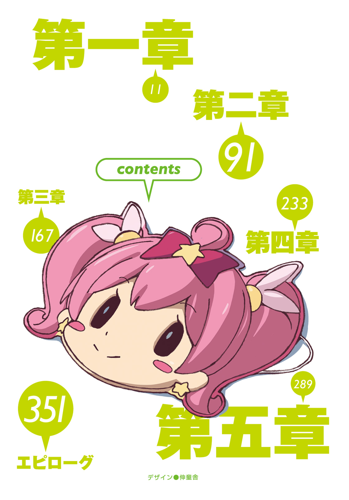
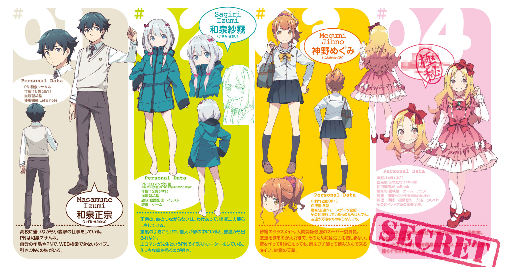
本書（電子版）に掲載されているコンテンツ（ソフトウェア／プログラム／データ／情報を含む）の著作権およびその他の権利は、すべて株式会社ＫＡＤＯＫＡＷＡおよび正当な権利を有する第三者に帰属しています。
法律の定めがある場合または権利者の明示的な承諾がある場合を除き、これらのコンテンツを複製・転載、改変・編集、翻案・翻訳、放送・出版、公衆送信（送信可能化を含む）・再配信、販売・頒布、貸与等に使用することはできません。
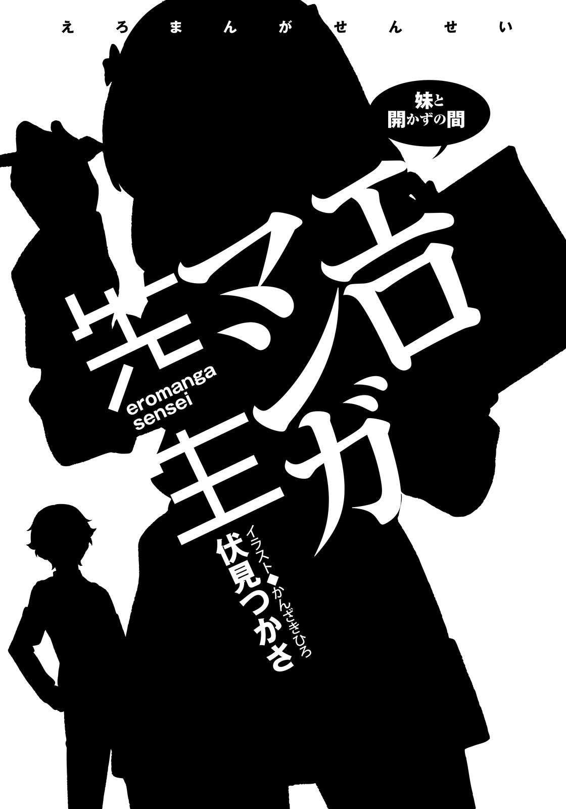
我が家に妹がやってきた日のことを、いつも思い出す。
三月上旬、暖かい気候が続く中、その日だけは朝から冷え込んでいて、一面まっしろな空が俺たちを見下ろしていた。
春にふった雪のように儚げなあいつは、母さんの後ろに隠れて、俯きがちに俺を見つめていたっけ。
今日からおまえの妹になるんだぞ。
この子をよろしくね。
両親の願いに、俺は笑って、はい、と答える。
母さんに促され、おずおずと俺の前に進み出たあいつは、俯いたまま頰を赤らめ、小さな声で囁いた。
「はじめまして、兄さん」
妹とは、それからずっと、会っていない。
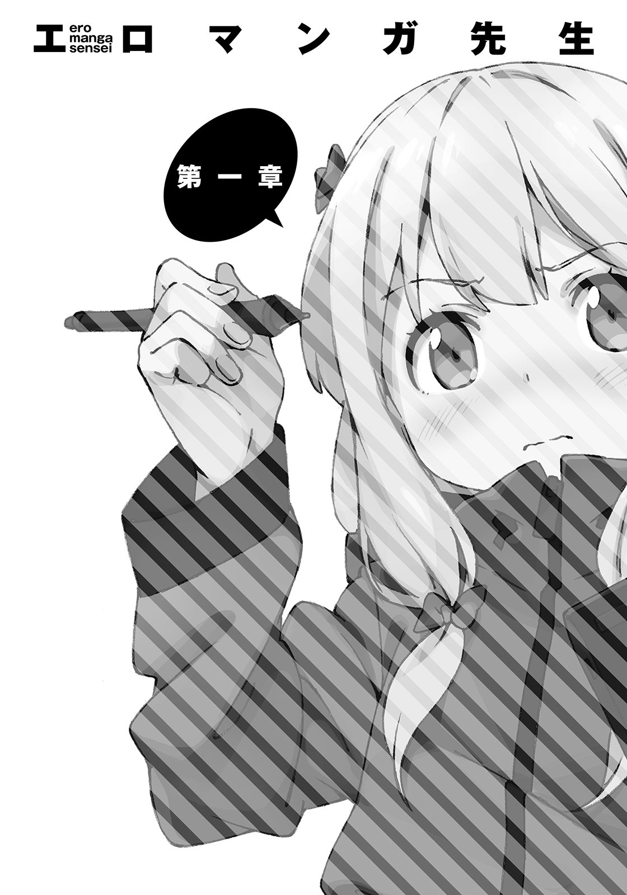
四月のある日。台所で夕食を作っていると、どん！ と天井が揺れた。
「もうちょい待ってろって」
どんどんどんどん！
上の部屋に向かって応えたら、余計にひどい返事が来やがった。
「はいはいはいはい！ わかったわかった！」
俺は十分に熱くなったフライパンを構え、片手でたまごを割り落とす。
じゅう、ぱちぱち......美味そうに焼けていくたまごを眺めながら、俺は「はぁ......」と溜息を吐く。
──どうしたもんかね。
何がどうしたもんかねなのかといえば、俺たち兄妹の現状についてである。
俺、和泉正宗／十五歳／高一。
妹、和泉紗霧／十二歳／（年齢的には）中一。
諸事情あって二人暮らし。
俺にとってたった一人の家族である妹・紗霧は、ほとんど部屋から出てこない──いわゆる引きこもりというやつだった。もちろん学校にも行っていない。
そればかりか、兄であり、いまや両親代わりでもある俺とさえ会おうとしない徹底ぶりだ。ここまでかたくなな引きこもりは、そうそういないのではなかろうか。
綺麗好きなくせに、俺が外出しないと、きっと風呂にも入らないはずである。
唯一の兄妹交流が、さっきの床ドンだってんだから......
まさしく、どうしたもんかね、だ。
その他諸々問題だらけの我が家だが、実のところ俺が本当に嘆いているのは、たった一つだけ。
「よし、できた」
ターンオーバーの目玉焼きに、トマトとレタスのサラダ。調味料はほぼ使わず、少量の塩のみでささやかな味付け。俺にはまったく理解できない、妹好みの食事である。
「相変わらず朝飯みてーな夕食だな」
我ながらこの一年で、すっかり手際がよくなった。俺は食事を盆に載せて、妹の部屋へと運ぶ。空っぽの部屋ばかりの一階を通り過ぎ、階段を上る。
足を踏み出すたびにぎしぎしと音が鳴り、食事の到来を妹に知らせる。
二階建ての一軒家は、二人暮らしには広すぎるといつも思う。
俺が『開かずの間』と呼んでいる妹の部屋の扉には、ハートのネームプレートがかかっていて、綺麗な字で『sagiri』と書かれている。
軽くノックし、
「紗霧、メシ持って来たぞ」
待つ。
じっ、とそのまま一分ほど待ち続けてから、俺は盆を床に置いた。
「ここに置いとくから。ちゃんと食えよ」
こめかみを掌で叩き、溜息を一つ。そして、用意しておいた筆記用具で、メモを作る。
お盆の前、小さな編みぐるみにメモを持たせて、今日も妹にメッセージを伝える。
────部屋から出て来て、顔を見せてください。
それが俺の、たった一つの願いだった。
俺は一年前からずっと戦い続けている。もちろん比喩で、何とと問われれば、そうだな。
部屋から出てこない妹とか、めったに帰ってこない保護者とか、まだ高校生でしかない自分のはがゆさとか、まぁそういった諸々とだ。
俺たち兄妹は、血が繫がっていない。
お互いの両親が、連れ子付きの再婚同士だったからだ。
俺たちを残し、新婚旅行に向かう二人は、高校生カップルみたいに初々しく、幸せそうに見えたものだ。
その後の思い出したくもない事情は省略させてもらうが、いま、この家には俺たち兄妹しか住んでいない。それがすべてだ。
それから......俺のたった一人の家族である妹は、部屋に引きこもり、誰とも交流することがなくなった。
「なにやってんだかな」
その呟きは、妹に対してか、それともふがいない自分に対してか。
もしくは、その両方か。
食事を終えた俺は、一階の自室へと入り、机に座る。
「さぁてと」
Ｂ５サイズの可変型ノートパソコンを広げた。
俺は、小説家という職業についている。
俗称になるが、ライトノベル作家といえばわかりやすいだろう。
中学入学とほぼ同時に、ライトノベル新人賞の選考員奨励賞を受賞しデビュー。
以来三年間、学校に通いながら、兼業作家として活動している。中学生デビューというのは、かなり珍しいそうで、同レーベルに俺より年下の作家は、一人しかいないらしい。
初投稿でいきなりデビューしてしまったので、多くの作家志望者たちが悩むだろう苦労の道程を、俺は知らない。当時は『俺って天才かも』と増長しかけたこともある。が、そんな仮初めの自信は、得てしてすぐに打ち砕かれるものだ。
いまでは『俺って運がよかったんだな』と思っているよ。
ペンネームは、和泉マサムネ。ほぼ本名。
家族も含め、仕事関係者以外には内緒にしているので、俺が高校生作家だということは、クラスのやつらも知らない。
──いままでは。
「どうかな、ばれたかな」
どきどきしながら、呟く。
明かしてしまうと、昨日、初めてのサイン会を執り行ったばかりなのだ。
デビュー三年目にして、初のサイン会である。
クラスメイトにバレるのが恥ずかしいという理由で、いままでは一切顔出しをしてこなかったのだが、今回だけは特別だった。
先月、俺が書いていた学園異能バトルもののシリーズを、デビュー以来初めて、無事完結させることができたからだ。完結記念ということで、ずっと『和泉マサムネ』の顔出しをさせたがっていた担当編集に押し切られてしまったのだった。
で、昨日、会場である池袋サンシャインシティに行ってきたのだが。
サイン会は、とても楽しかった。
ファンと会うことにビビっていたのが、ばからしくなるほどに。
この仕事、売上の数字以外で自分の仕事の成果を見ることができる機会は、本当に少ない。
面白かった、とか、楽しかった、とか、このキャラが好きです、とか──。
直接言ってもらえるのはシンプルに嬉しかったし、強力なモチベーションにもつながった。
目からうろこが落ちるとはこのことで、おすすめしてくれた担当編集に、思わず感謝してしまうほどだった。
そこまではよかった。
サイン会が終わったあとで、気が付いた。
『和泉マサムネ』と会ったファンが、ネットで俺のことを書いているかもしれない。
サイン会は撮影禁止ではあったものの、俺が高校生であることは、ファンとの雑談で喋ってしまっていたし、ペンネームと本名がほぼ同じだから、『和泉マサムネ』の正体が区立四高に通う『和泉正宗』だと気付くやつが出てくるかもしれない。
そいつはまずい。実にまずい。
もしも学校で『和泉先生』なんて呼ばれたら、恥ずかしさで死んでしまう自信がある。
というわけで──
俺は、三年ぶりぐらいに、ネットで自分の名前を検索するという超危険行為にトライする。
「......っ......ふぅ ......緊張するな」
......緊張するな」
額の汗を、手の甲で拭う。
デビュー作が発売した当時にエゴサーチをして、えらい目に遭って以来、俺は絶対に自分のペンネームや作品名でＷＥＢ検索するまいと誓ったのだ。
あのときのトラウマは、いまだに笑い飛ばせない思い出であるから、平気でエゴサーチできちゃう同業者の人たちのことは、マジでメンタル強えーなと感心する。
ともあれ。
そんな危険を承知の上で、俺は昨日のサイン会について、ネットで調べ始めた。
「お」
すると、検索エンジンの表示結果に、ぽつぽつと感想を書いてくれている人のブログが出力されてきた。
「『和泉先生とお話しできて嬉しかった！』かぁ。......いやいや、こちらこそ、喜んでくれたみたいで、よかった。えーっとこっちは『和泉先生、噂どおりむちゃくちゃ若かった！』か。噂ってなんだ？」
──ふぅ......いまのところ大丈夫そうか？
胸をなで下ろしつつ、トラックバックを辿るなどして『サイン会』の感想を巡って行く。
幸い、俺の正体に繫がるような記事は見つからなかったのだが......。
無作為にクリックしたリンク先が、こんなタイトルの記事だった。
「うッ」
和泉マサムネ先生のサインの字が汚すぎるｗｗｗ
「うわああああああああああああああああああああああああああああ！」
俺は、頭を抱えて絶叫した。
「あ......あぁ......あ......」
『先生、字ぃ汚ねええええええええええええええええええええ！』
『うわぁ......』『らくがきにしか見えない』『これはひどい』『どこの小学生が書いたの？』
「ぐッがあああああああああああああああああああああああああああッ！」
無情にもほどがある。初めてエゴサーチをしたとき以来の衝撃だった。
バンバンバンバンッ！
「なんだこのクソブログ！ しょうがないだろ！ サインの練習なんかしたことないんだから！ 人が一生懸命、一枚一枚心を込めて書いたサインを......！ 作家を芸能人かなんかと一緒にしてんじゃねーぞバーカ！」
キーボードをガタガタしながらブチキレる俺。
そしたら、
──どん！
妹が床ドンで『うるさい！』と抗議してきやがった。
妹の部屋は、俺の部屋の真上にあるのだ。
「......うぐぐ......うっ、うっ」
俺は、天井に意識を向けつつ、下唇を嚙みしめ震える。
これだから！ これだからネットはイヤなんだ！ ちょっと泣いちゃったよクソ！
匿名だからって、言っていいことと悪いことがあるんだぞっ！
覚えてろよ！
ぱたん。
俺は泣き泣き、ノートパソコンのフタを、そっと閉じるのだった。
現在午後七時。俺は、気晴らしも兼ねて、小説の新刊を買うため、個人でやってる本屋さん『たかさご書店』にやってきていた。二階建てで、そこまで広くはないものの、ライトノベルの品揃えの良い、明るい雰囲気のお店である。
「もぉ、大げさだなぁ、ムネくんは。そのくらいネットではよくあることだろ」
苦笑したのは、この書店の看板娘、高砂智恵。
艶やかな黒髪のロングヘア、女の子らしい、柔らかそうな外見の少女である。
お店のエプロンを掛けた彼女は、俺のクラスメイトで、『和泉マサムネ』の正体を知る、数少ない人物である。
三年前、はじめて自分が書いた本が書店に並ぶ日、店内で不審な行動（隠れて誰か俺の本買わないかなってやってた）をしていたせいで、俺は智恵の親父さんにとっ捕まり、事情を聞かれたという恥ずかしい思い出があるのだが。
彼女とは、それ以来、友達付き合いをさせてもらっている。
いまは智恵の休憩時間中だ。お店のバックルームで、俺たちは会話している。
「よくあることなのか？ こういうの」
「うん、芸能人とか作家さんとか、アニメ監督とか、業界人がよくやられてるじゃん。まぁ、今回のは、有名税みたいなもんだから、気にしなくていいんじゃない？」
「俺、別に有名じゃないんだけど......」
「............あっ、そっかあ」
少しは否定してくれてもいいと思う。
哀しいことに事実である。
速筆だからなんとかやって行けているが、『和泉マサムネ』の評価は、三シリーズ目にして、ようやく中堅作家といったところじゃなかろうか。まがりなりにも、打ち切りにもならず一シリーズを完結させたわけだし、このくらい言ってもバチは当たらないはずだ。
本が予定以上に売れたときに、もう一度本を刷ってくれる重版という制度があるのだが、完結させたばかりの『銀狼』シリーズでは、デビュー以来はじめて重版がかかったりもした。
「言われてみれば不自然だね。ムネくんごときをディスったところで、ブログのアクセス数は増えないのに」
「記事よりオマエの方がひどいこと言ってるからな」
「あはは。というかさ......」
智恵は、スマホをしばし弄ってから、
「いま、ムネくんをディスってたブログを見てたんだけど、これってキミの小説のイラストを描いている先生のブログじゃない？」
「！」
俺は両目を見開いた。
「え!? マジで!?」
「ほんとほんと」
「ちょ、見せてくれ！」
「ほら、このペンネームってそうでしょ？」
智恵は、ブログのタイトルを見せてきた。
そこには『エロマンガのブログ』と書かれている。それだけなら、ああエッチなマンガを紹介したりするブログなんだなと思うところなのだが。
タイトルのすぐ下に、こんなコメントが書かれていた。
『イラストレーターをやってます。※島の名前が由来です。えっちな漫画とは関係ありません』
「..................マジだ......」
この〝エロマンガ〟というのが、俺が書いた小説のイラストを描いてくれている先生である。
デビュー作のときから、ずっと変わらずお世話になっていて、とても感謝していた。
三年間の付き合いでもあるし、個人的には『俺たちいいコンビだよね』なんて思っていたのだが──
「ええええええ！ 何してんだこの人！」
俺のサインの悪口言ってた犯人、よりにもよってこいつかよ！
「ムネくんって、エロマンガ先生と会ったことあるの？」
「ないよ！ 仕事はぜんぶ担当編集通してやってるし！」
男か女かもわからん。まぁ萌え系の絵柄からして、たぶん男だろうけどさ。
イラストレーターは、基本的に担当編集が決めるものだし、直接やり取りすることもないから、三年間一度たりとも会うことがなかったのだ。
「ふーん、じゃあなんでキラわれてるんだろうね？」
「えっ？ 俺って、イラストレーターにキラわれてんの？」
「そうじゃない？ なんか、キミのこと、妙にイキイキとディスってるし」
「うう......やっぱそうなのかな......」
でも、理由がわからん。なんか俺、エロマンガ先生に悪いことしたかな......？
デビューしたばっかの頃、『コイツなんでこんな卑猥なペンネームなんだよ』ってグチったのが、バレたとか......？ いや、でも、あれは......著作の表紙に毎回『エロマンガ』って書かれる俺の気持ちもわかってくれよ。ちょっとくらいグチたっていいじゃない。
「キラわれてるんなら謝っておきたいが......どんな人なんだろうな」
「ボクに聞かれても困るってば」
と、智恵は肩をすくめる。
「むしろ、三年も一緒に仕事しているのに、相手のことをぜんぜん知らないってのがおかしいよね。担当編集経由で会う機会とかなかったの？」
「担当編集も、エロマンガ先生とは会ったことないんだって。仕事とか全部ネットを通してやってるらしいし、プロフィールを極秘にするのが契約の条件だったとかなんとか」
「へぇ、現代ならではの仕事スタイルもあったもんだ」
智恵は素直に感心している。このあたりは同感で、俺のような学生が仕事をしている状況もまた、現代ならではの現象といえよう。
「エロマンガ先生の名前でＷＥＢ検索してみたりは？」
「したよ。エッチなマンガのサイトしかでなかった」
当然の結果である。
「いやいや、ちょっとは頭使おうよ。キミのペンネームとか作品名を、スペースの後ろにくっつければいいだけじゃん」
「自分のペンネームと作品名で検索なんて、この俺がするわけないだろ？」
「......あ～、そういえばそういう主義なんだっけね、キミ」
「おう。ってわけで、俺の代わりにちょいと調べてくれると嬉しい」
「はいはい」
智恵は、スマホの画面に指を滑らせる。
「調べるっていうか、本人のブログを見ただけだけど、イラストだけじゃなくて、ネットで色々やってる人みたいだね」
「色々っていうと？」
「色々は色々だけど......主に動画配信？」
「動画配信？ イラストレーターなのに？」
なんの動画を配信してるってんだ？
「うんとね......絵を描いているところを、生放送してみたり、公式許諾を得た上でゲームのプレイ実況を生放送してみたり......そういう活動をしているみたいだよ」
「ほぉ～。まぁ、実際見てみないことには、よくわからんな」
「あ、ほら、ムネくん、最新の記事を見てよ。エロマンガ先生、今日これから生放送をやるってさ。ちょうどいいし、一回、観てみたら？」
というわけで、俺は、『たかさご書店』で、ライトノベルの新刊を何冊か購入して帰宅した。ネットショップばかりに頼らず、なるべく近所の実店舗で本を買うというのが俺の主義で、このあたり色々言いたいことはあるのだが、いまはそれどころじゃあないな。
俺は玄関の扉を勢いよく開ける。
「ただいまー」
いつもどおり返事はない。けれど、構わず階段の上に向かって声をかける。
「紗霧～、メシ食い終わったら、部屋の前に出しておけよー」
一階の自室に戻った俺は、改めてノートパソコンを開く。
「動画サイトで生放送......ねぇ」
智恵と色々話したこともあって、ずっと一緒に仕事をしてきた『エロマンガ先生』に、改めて興味が湧いていた。三年前は、調べられずに、あっさりと諦めてしまったが......。
どんな顔をしていて、どんな声をしていて、どんな考え方をする人なんだろう。
俺や、俺の作品のことを、どう思ってくれているのだろう。
かち、かち、と、例のブログを閲覧する。
けっこう長くやっているのか、過去記事がメチャクチャ多い。
あと、俺のサインの字が汚い件についての記事が、すげーコメント伸びてて腹立つ。
「......ぐぬぬ」
俺はそれ以上の閲覧をやめて、動画サイトへのリンクをクリックした。
ちょうど動画の配信が始まるらしい。
サイトは、動画が映る画面とコメント欄がある、ベーシックな形式だ。
──この画面に、エロマンガ先生が映るってことだよな。
いま俺が見ている画面には、青い背景に赤字で『イラストを描きながらみんなとトーク⑯』という文字が書かれている。
『待機中』『わくわく』といったコメントが、右から左へと流れていった。
「始まったか。......さて......どんな人なんだ？」
俺は画面をじっと見つめる。
するとノートパソコンから、変声機を通したような低い声が聞こえてきた。
「えー、みなさんこんばんはっ。今日は塗り作業がてら、みんなとお喋りしていこうと思います。よろしくー」
『エロマンガ先生！』『エロ！』『よろー』『エロマンガ先生～！』
「そ、そんな名前の人はしらない！」
『また始まったｗ』『自分でペンネームつけたくせになんで恥ずかしがってんの？』『エロいイラストばっか描いてるからエロマンガってペンネームなんでしょ？』
「だから違うっつってんだろ！ いっつもいっつもエロエロエロエロ言いやがってー！」
『はいはいｗ』『今日もかわいいエロ絵お願いします！』
などなど──どうやら彼のファンが視聴しているらしい。
おおお......ファンと直接交流している......これは羨ましい。
俺もやってみたい──と思ったが、小説書くとこ配信してもな。
つまらんこと受け合いである。
「いっとくけど、今日はあんまエロいやつじゃないから」
かちっ。画面でイラスト製作用のソフトウェアが立ち上がった。女の子のイラストと、ペン型のカーソルだけが映っている。
これじゃあ、エロマンガ先生がどんな顔をしているのか、わからないな。
「今日、みんなと一緒に描いていく女の子は、和泉マサムネ先生の『転生の銀狼』に登場するヒロインの一人、紅兎ちゃん！ オレのお気に入りキャラ！ 和泉先生に三巻で殺されたけどね！」
あっ、ごめん。
つい、心の中で謝ってしまった。あちゃー、エロマンガ先生、あの娘がお気に入りだったのかー......そういえば紅兎のキャラデザって気合入ってたもんな。
もしかしてそれで怒ってんのかな？
「まったく、和泉先生は本当にひどいヤツだよ。こんなに可愛い娘を容赦なく殺しちゃってさあ。オレにとっては娘みたいなものだったのに」
俺への恨み節を吐きながら、さらさらと器用に色を塗っていく。
いや！ それは！ しょうがないじゃん！ バトルものなんだから！
その恨みは、紅兎ちゃんをブッ殺した金獅子（三巻のボスキャラ）に言えよ。
「♪」
エロマンガ先生は、鼻歌まじりに、紅兎に色を塗っていく。
......ふーん、イラストってこんな風に描いているのか。
想像していたのと、だいぶ違うな。
カーソルの動きが速すぎて、見ててもよくわからないのだが、ペンだけでなくマウスも使って、まるで魔法のようにどんどん色が塗られていく。
どんな業種にもいえることだが、プロの仕事ってのは、ほんと、手品にしか見えないな。
しばらく色塗り動画を眺めていると、『和泉マサムネのサイン会』の話題になった。
「あっ、コメントどもー。『銀狼』完結記念のサイン会、行かなくてごめんな。オレ、顔出しはＮＧだからさ。担当さんに頼んで、和泉先生だけに行ってもらったの」
『実はオッサンなんでしょ？』『和泉先生は噂どおりの美少女小学生なの？』
「うっせーな。和泉先生とは会ったことないから知らん」
オッサンなんでしょというコメントに、否定せず苦笑するあたり、やはりオッサンなんだろうか。オッサンの手から、あの可愛いイラストが生まれていることについて、複雑な気持ちになる人がいるかもしれないが、俺としては感動しかない。すごいことだもの。
それにしても、俺がネットでは美少女だと思われてるってマジかよ。
思いっきり男の名前なのに......。よくわからん現象だな。
「そういえば会場に飾る用のサイン色紙に、和泉先生のサインがあったんだけど、あまりにもヘタクソ過ぎてついブログにアップしちゃったよ」
『アレはワロタｗｗ』『らくがきだったｗｗｗ』
やかましいわ！ 事実でも言っていいことと悪いことがあんだろ！
くそ！ 直接会ったら、謝る前に、絶対文句言ってやる！
「ってわけで、完成ー♪」
『えろーい』『うおおおおおおおおおお』『おつー』
『おつかれー』『今日も楽しかったです』『めちゃくちゃかわええー』
などなど感想コメントが流れていく。実際、見事なイラストが仕上がっていた。
『先生のイラスト、今回も壁紙にして配布してもいいですか？』
「はいよー、みんなおつかれー。見てくれてサンキュー」
イラストが完成したのに、動画配信は終わらない。どうやらトークタイムに入ったようだ。
「やー、今日はたくさん喋ったから、ちょっと疲れたーっ」
ふぃーと息を吐くエロマンガ先生。
「次の配信では、どのキャラを描こっかな」
『金獅子ちゃんがいいです！』『エロければなんでもおｋ』『いまやってるアニメのキャラでもいいの？』──などなど一斉にアイデアコメントが流れていく。俺も、ついつい、このキャラを描いて欲しいなーというコメントを書き込んでしまった。
「ちょ、おまえら一気に言いすぎ！ ちょっと待ってて！」
しばらくの沈黙の後、ＰＣのデスクトップ画面を映していた動画が切り替わり、アニメのお面とヘッドセットを被った人物が映った。
『おおー』『本人登場！』
──おっ、ＷＥＢカメラに切り替えたのか。
ってことは、こいつが『エロマンガ先生』ってことだな。
台本のあるテレビ番組なんかと違って、こういう次に何が起こるかわからない感じが、いい意味で素人くさい。
お祭りで売っているようなアニメキャラクターのお面を着け、さらにパーカーのフードを被っているので、相変わらず正体不明。向こうの部屋が暗い上、画質が悪いので判然としないが、思ったよりも小柄に見える。
エロマンガ先生は、アニメ雑誌のキャラクターランキングページを広げ、俺たちに見せつけてきた。その中には、当然、俺の作品のキャラクターは入っていない。アニメ化してないから。
「この中から選んでよ。あ、でも、できれば担当作品がいいかな。愛着もあるし」
再びリクエストコメントが流れていく。エロマンガ先生も、何気に嬉しいことを言ってくれていた。──が、俺はそれに参加することができなかった。
「..........................................」
それどころじゃなかったから。
「..........................................」
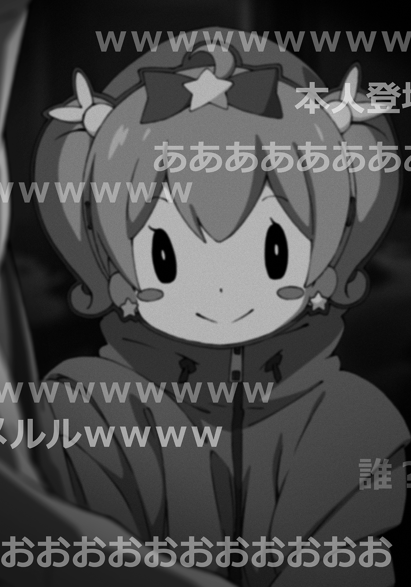
楽しげなトークも耳に入らず、ひたすら無言で、暗く不鮮明な動画を見続ける。
「..........................................どういうことだ？」
呟く。俺が見ていたのは彼の後ろ、部屋の奥。
さっき......俺が妹に作ってやった、夕食だった。
「はっ！」
一分ほどフリーズしていたようだ。俺は正気を取り戻し、ぶるぶるっとかぶりを振る。
状況は依然変わらず、目の前のノートパソコンには、パーカーにお面の人物と、暗い部屋が映っている。コメントでは次に描く女の子をどうするかについての議論が、活発に流れていた。
そして目をこらせば、我が家で使っているものとまったく同じ食器に盛られた、ターンオーバーの目玉焼きとサラダが映っている。一口も手をつけられていない。
「どういうことだ」
再び呟く。さっきよりは多少冷えた頭で考えてみるも──わからない。
「偶然......？」
違うな。これしかないという答えはすでに出ているのだが、それがどうにも信じられん。
「......これ映ってるのって、俺んち......なのか？」
俺は、天井を向いて、呟く。
いや、いやいや。そうじゃない。もうごまかすのはよそう。
「こいつ、俺の妹じゃね？」
口に出した瞬間、ぞくっとした。
エロマンガ先生は、変声機を使っていて、お面とパーカーで顔と身体のラインを隠している。つまり、女でもおかしくない、ということ。
......『まさかな』という思いが捨てきれない。
あの──部屋に引きこもって、何者とも接触しようとしない紗霧が？
明るく楽しくファンとお喋りしたりする、俺の担当イラストレーター？
「......ありえるのか？ そんなの。どんな確率だよ......」
正直言って混乱していたが、俺・和泉正宗の深層心理は、ちゃんとアラームを鳴らしてくれた。
──これはチャンスだ。
ってな。
もしも『エロマンガ先生』イコール『俺の妹・紗霧』なのだとしたら。
いま、俺のノートパソコンは、あの固く固く閉ざされた『開かずの間』の中とつながっているということになる......よな？
とうてい信じられないが、もしもそうなら凄いことだ。この一年間ずっと手詰まりだったってのに、飛躍的な進歩だった。この大チャンスをなんとしても、モノにしなければならない。
「考えろ......！」
俺はデスクに両肘をつき、頭を抱えた。
「......っ..................ダメだ！ なんも思いつかねえ！」
だってネットでつながっているっつっても、俺にできるのは動画にコメントを残すくらいなんだぜ？ それでどうなるってんだ。何を書き込めってんだよ。
『おまえ俺の妹だろ』──却下。『部屋から出てこい』──却下。
そんなんじゃ、食事と一緒にメッセージを伝えるのと、何も変わらない。むしろ、とんでもないことになりそうな嫌な予感がある。それじゃ本末転倒だ。
悩んでいる間に、画面では『次に描く女の子』の話がまとまったらしく、エロマンガ先生が締めに入っていた。
「そんじゃ、次回配信は明日の予定です」
くそっ、タイムオーバーかっ！ ど、どうすりゃいいんだよ！
何も策が思いつかず焦っていると──
エロマンガ先生が、ちょっとしたミスを犯した。
「次も見てくれよな。ばいばーい♪」
『おつかれー』『次も楽しみにしてます』『乙乙』『乙～』『あれ？』
動画配信ではたまにあるポカで、簡単に言うとＷＥＢカメラの切り忘れというやつだ。
『おいｗｗまだ映ってんぞｗｗｗ』『エロマンガ先生ｗｗｗ』
『カメラカメラ！』『切り忘れてんぞ』
視聴者たちが教えてあげようとするも、エロマンガ先生は気付かない。
......やばいんじゃないか、これ？
このミスをやってしまうとどうなるかというと、放送が終わったと思い込んでいる配信者は、視聴者たちの前で、素の自分をさらしてしまうことになる。
極端な例をあげると、動画がまだ生配信されていると気付かずに、カメラの前ではだかになったり、言葉にできないくらいえっちな行為をしてしまった人もいるらしい。
むちゃくちゃ恥ずかしいプライベートシーンを全世界に公開しちまったわけだ。
恐ろしい話である。本人、後悔してもしきれないだろう──────っておいおいおい！
俺は思わず身を乗り出してしまった。
なぜなら画面の中で、とんでもないことが起こりつつあったからだ。
「っあ楽しかったぁ。オナカ空いてたのに、ごはん食べるの忘れてたぁ」
エロマンガ先生が立ち上がり、おもむろに服を脱ぎ始めたのである。
くつ下を行儀悪く足で脱ぎ、数歩歩いて画面から見切れつつ、羽織っていたパーカーを脱ぎ捨てる。次いで画面外からお面が飛んできた。
『おっ！ エロマンガ先生の正体バレくるか！』『どうせオッサンだろ』
『くそっ、見切れてるぞ！ 戻って来い！』『男が脱ぐとこ見てもなぁ』
『意外にカラフルな靴下じゃん』『ちょｗｗなんというエンターテイナーｗｗｗ』
ガタッ！
「やべええええええええええええええええええええ！」
俺はタブレット型に折りたたんだノートパソコンを抱え、全速力で部屋を飛び出した。
階段を駆け上り二階の『開かずの間』へと向かう。
「マズいマズいマズいマズい！ 絶対にマズすぎる！」
だってそうだろう!?
もしもエロマンガ先生が、俺の妹なんだとしたら。
マジで同一人物なんだとしたら！
妹のストリップショーが、全世界公開されちまう！
「ストァァァァァァァ──────────────ップ！」
バァン！
俺は妹の部屋の扉を、ぶち破る勢いでブッ叩いた。
ガンガンガンガンガンガン！ わきに抱えたタブレットを横目に、何度も何度も力強く叩きつける。
「カメラアアアアアアアアア！ 切り忘れてる！ カメラアアアアアアアアアアア！」
ガンガンガンガンガンガン！
「やらかしてんぞおおおおおおおおおおおおおおお！」
ここまでなりふり構わず妹に呼びかけたのは、これが初めてかもしれない。
とにかく必死だった。気付け！ 気付け気付け気付け気付け！
ガンガンガンガン！ 扉を叩く音が、二重にかさなって聞こえる。わきに抱えているパソコンのスピーカーからも、まったく同じ音が聞こえてくるのだ。
つまり──そういうことなのだろう。
『めっちゃドア叩かれてるぞ！』『ちょｗｗ家族乱入ｗｗｗｗｗ』
というコメントが画面に流れたところで、ぷつん、といきなり動画の配信が終わった。
「......切れた.......................................」
しん、と廊下が静まりかえる。
......よく見ていなかったが、間に合っていた、はず......だよな？
最悪の事態は......防げた、よな？
「っ..................ふぅっ」
両目をきつくつむり、扉に拳を押しつけたまま、思い切り息を吐いた。
ぜえ、ぜえ、と肩を上下させる。
「......守れた。なんとか......妹のはだかは、守れた」
それでよしとしよう。
せっかくの大チャンスをふいにしてしまったが、
「......悔いはない」
扉から離れ、額の汗を拭う。
「だ、だが......覚悟しておけよ」
俺は扉を睨み付ける。
「必ずおまえに、この部屋の扉を開けさせてみせる......！」
がちゃ。
誓った直後に扉が開いた。
「えっ？」
間抜けな声を出してしまった。
いやっ、だって──えっ？ ちょ......えぇっ？ ......なんであっさり開いてんの？
きぃ......ぎぃぃ......
俺が一年間かかって開けられなかった妹の部屋の扉が、ゆっくりと開いていき──
「..............................」
パジャマ姿の少女が、姿を現わした。
真白い肌に、わずかに乱れた白銀の長髪、青い瞳からは何の意志も読み取れない。
ちょっと目を離した瞬間に、溶けて消えてしまいそうなやつ。
それが俺の妹・和泉紗霧。
紗霧は、ぽかんと口を開けて見つめている俺に気付くと、小さな声で囁いた。
「ひさしぶり、兄さん」
妹との、一年ぶりの再会だった。
どのくらい硬直していただろう。気付けば、妹がすぐ目の前で、無表情に俺を見ていた。
会うのはこれで二度目だが、改めて可憐なやつだと思う。芸能人のような俗っぽい可愛さではなく、あくまで無垢な、自然物の美しさ。しかしまぁ、この状況で妹相手にまず脳裏に浮かんだのがそれなのだから、俺がどれほど混乱しているかがわかろうというものだ。
妹とまともに会ったのは、これで二度目──
「........................」
「........................」
お互いに何も言わない時間が続く。あいつが何を考えてそうしているのかは知らないが、こっちはあまりの急展開に脳がついて行けなくなっていたのだ。
というか......本当にこいつがあの動画を配信していたのか？
エロマンガなんていう、ぱっとみ卑猥なペンネームを名乗っているイラストレーター？
こうして本人を目の当たりにしてみると、あの言動とこの見た目がまったく一致しない。
やっぱり......何かの間違いじゃないのか？
やがてさらに一分ほどの時がたち、ようやく俺は口を開いた。
「......久しぶりだな。......一年ぶり......くらいか？」
「..................」
返事はなかったが、その代わり、紗霧は表情を微妙にむっとさせた。
な、なんだよ。なに怒ってんだ。
......まぁ、もしもこいつが無実なんだとしたら、いきなり扉をドンドン叩かれたわけだから、こういう反応もわかるけど。でも......。
俺はちらりとノーパソの画面を見る。すでに配信は終わり、暗い画面が映っていた。そのままゆっくりと視線を上げ、もう一度妹の顔を見る。
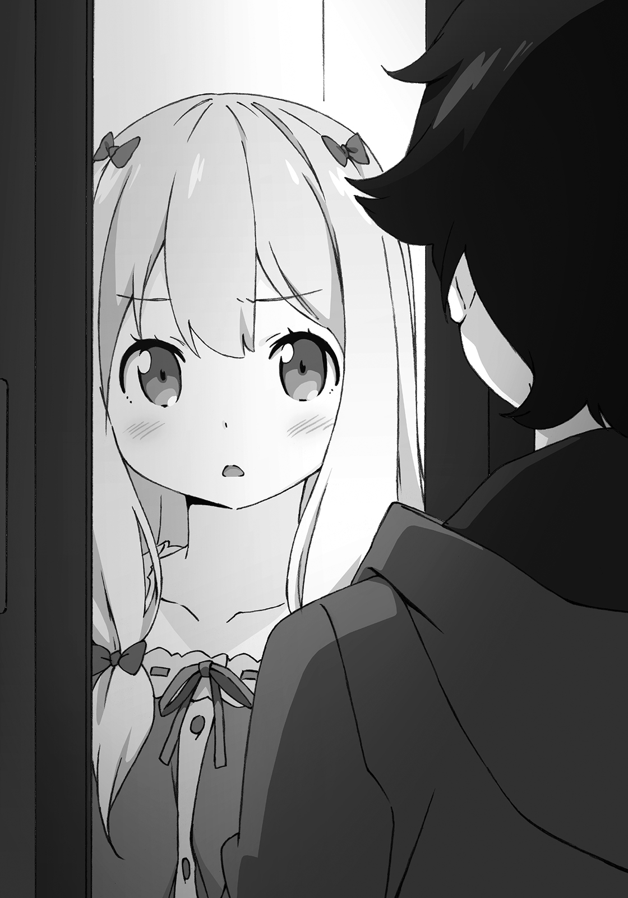
「なぁ......おまえが『エロマンガ先生』......なのか？」
「........................」
相変わらず返事はなく、しかし。
......うわ、俯いてめっちゃ汗かいてる！ めちゃくちゃ動揺してるだろ！
いまのやり取りだけで俺の心証は「あ、こいつクロだわ」になっていた。
これほどまでに感情が顔に出るやつも珍しいな。超無口で、無表情キャラっぽい見てくれのくせに。
「やっぱりおまえが、さっきの動画を配信して──」
「......っ！」
紗霧は無言のまま、ぶんぶんと首を横に振る。
「うおっ」
え？ なんだこいつ？
「ち、違うってこと？」
「............」
紗霧はこくこくと頷く。そして俯いたまま、なにやらボソボソ呟いている。
「えっ、なんだって？」
「............」
「聞こえねーぞ」
俺は耳を妹の口元に近づける。するとようやく小さな小さな声を聞き取ることができた。
「......そんな恥ずかしい名前の人、しらない」
じゃあなんでそんなペンネームつけたんだよ。
こいつが『エロマンガ先生』本人だったなら、そう言ってやりたい。
「......」
紗霧はムスッとそっぽを向く。ふてぶてしい態度だった。
「うーん」
というかだな。否定すれば否定するほど、語るに落ちていると思うんだが。だって本当に誤解なんだとしたら、そもそもこういうリアクションになるわけがないし。
どうしたもんか、と、そう考えたときだ。
紗霧が無言のまま、すぅっと扉を閉めようとした。
「おおっと！ そうはいくか！」
がちん。俺のつま先が、閉まりゆく扉に挟まった。
「！」
がちんがちんがちんがちん！ 焦って扉を開け閉めする紗霧。
「痛い痛い痛い痛い！」
「......して」
たぶん『足をどかして』って言っているんだろうが──
「断る！」
ここで逃したら、この扉はもう二度と開かない気がした。
「おまえが、『転生の銀狼』のイラストを描いてた、エロマンガ先生なんだろ？」
「......ち、ちがっ......ちがっ......」
うっ......な、泣きそうな顔すんなよ。いじめてるみたいじゃないか。
ああくそっ、俺はそんなつもりじゃなくて──
「すげぇじゃん」
ただ、そう言いたかっただけなのに。
「..................」
俯いていた紗霧が、青い瞳を潤ませたままで、ほんのちょっぴりだけ俺を見た。
「！」
ふと目が合って、どきりとする。俺は一瞬言葉につまり、ごくりと喉を鳴らす。
「さっきの動画、めちゃくちゃ可愛いイラストだったじゃん。おまえのファンも、たくさん見てて......みんなすげー喜んでた」
目をそらして、ようやく声が出た。
「ずっと部屋ん中に閉じこもって、なにやってんのかなって気になってたんだけど......すげーことやってたんだな、おまえ」
「..................」
素直な気持ちを伝えたものの、妹の顔が見られない。
どんな表情で俺を見ているのか、わからない。あ、うわ、やば、焦る。パニくってる、俺。
せ、せっかく話せたんだから、もっと会話を続けねーと。
ええっと、話題、話題話題話題──
「おまえのイラストって、超えろいよな」
「！」
なに言ってんだ、俺！
妹に言うべきなのは、それじゃないだろ！ めちゃくちゃ引かれてるじゃん！
「あ、あとっ！ その......だな」
迷ったが......
「すげー......嬉しかった」
やっぱ、言うべきだよな。『俺の正体』を。
「......紗霧......実は、俺......」
嬉しかった理由を、ちゃんと伝えるために。
「俺は──」
「だめぇっ！」
告白を止めたのは、紗霧の大声。
「えっ？」
俺は耳を疑った。呆然と声の主に振り向く。
「......だ、だめって──なにが？」
うろたえながらもそう口にすると、
ゴスッ！
返事の代わりに、鼻っ柱に強烈な一撃が。
「......が......は......っ」
顔を押さえ、たまらず俺は一歩二歩とたたらを踏む。
バタン！
くらりと揺れる視界の先で、『開かずの間』が再び閉ざされるのが見えた。
極悪非道の不意討ちに使われた、凶器の正体もだ。
......紗霧のやつ............兄をごついジョイパッドで殴りやがった。
妹との一年ぶりの再会は、こうして唐突に終わりを告げた。
残ったのはズキズキという鼻の痛みと、チャンスを生かせなかった後悔。
「......くそ、これからだ」
そして、久しぶりに妹と会えた、嬉しさだった。
翌日。
俺は都内にある出版社へと赴いた。新作の打ち合わせをするためにだ。
編集部内にある打ち合わせブースで待っていると、担当編集の神楽坂さんがやってきた。
「へーい、お待たせ！」
ショートカットにパンツスーツというキャリアウーマン風のファッションなのに、軽いノリと顔のせいで女子大生に見える。
俺は席を立ち、神楽坂さんを迎える。
「ども」
「ごめんね和泉先生～、前の打ち合わせが長引いちゃって」
神楽坂さんは、テーブル越し、俺の対面に座る。
「最近ほんと忙しくてー♪ たくさんヒット作をかかえちゃったから～。昨日もその前も二時間しか寝てないんですよぉー。いつものことだからラクショーですけどね！」
「はあ、大変ですね」
心底どうでもいいわ。そんなことより俺の作品をヒットさせようぜ。
よっぽどそう言ってやりたかったが、出会い頭に本音をぶちまけるわけにもいかない。
彼女は現状、個人事業主としての俺にとって、唯一のお得意様なのである。
下手にこの人と喧嘩でもしようもんなら、俺の収入は一時的になくなるし、今後の仕事にもおおいに差し障りがある。以前の俺ならともかく、いまの俺にとっては、死活問題だ。
だから、相手が親しげにしてくれていても、やっぱり緊張してしまう。
つーか、さっさと本題に入りたい。
「先日は完結記念のサイン会、ありがとうございました。えっと、俺っ、今日は新作の打ち合わせをするために来たんですけど！」
「でしたねー。最終巻書き上がったばっかりなんだから、ちょっとは休んでもいいんですよ？」
「そんな余裕ないですよ。読者に忘れられる前に次のシリーズ出さないと」
それはいい心がけですね、と、神楽坂さんは微笑む。
「では......さっそく、企画書とプロットについてですが」
「現物を持って来たんで、ちょっと見てもらっていいですか？」
どさっ。どさっ。どさっ。どさっ。どさっ。どさっ。どさっ。どさっ。
俺はボストンバッグから取り出した紙束を、目の前のテーブルに積み上げた。
神楽坂さんは「えっ？」と目を丸くする。
「なにこれ？」
「新シリーズの企画書です。とりあえず二作、第三巻まで書き上がってます」
「は？ んっ？ 企画書？ 書き上がって？」
「こっちが、前シリーズと同じ学園異能バトルもの。こっちが異世界冒険ものです。それとこれは、いままでとは違う家族もので、一巻までしか書き上がってないんですけど、一応」
「..................」
目を白黒させていた神楽坂さんは、口を真一文字に引き結び、俺の分厚い『企画書』をぱらぱらとめくった。
「ちょ！ これどれも企画書じゃないじゃん！ ぜんぶ完成原稿じゃん！」
「そっちの方が早いかなって。企画書って、どういう内容なのか相手に伝わればいいんですよね！ コレを読めば俺のやりたいことはすべて伝わるはず！」
「十秒で要旨が伝わるように作れって教えたでしょ！」
「そうでしたっけ？」
「こんなに大量にあったら、この場で打ち合わせできないじゃない！ ま、まぁ、完成原稿があるんなら、それはそれでよし。って、二シリーズ、三巻まであるんだっけ？ で、三シリーズ目は一巻の原稿が最後まで書き上がってる？ 相変わらず書くのだけは早いよね」
他に取り柄がないみたいな言い方はやめて欲しい。
「で？ それとは別になってるこっちの紙束は？ まさかとは思うけど......四シリーズ目があったりするの？」
俺は言った。
「今回のシリーズがアニメ化したとき用の脚本です」
「アホかぁ！」
担当編集は、テーブルをブッ叩いた。
「な、なんでですか！ いざアニメ化ってときに本気出しても遅いらしいじゃないですか！ 人気が出て忙しくなる前にやっておくべきですよ！」
「まだ発売されてもいないのに、捕らぬタヌキの皮算用にもほどがあるでしょ！ メディアミックス一回もしたことないくせに、アンタどんだけ自信たっぷりなの!?」
「ひでえ！ 俺はいつだって超人気シリーズにするつもりでやってますよ！」
結果は出てないけどな！ でも、少しずつ前には進んでいるんだ！
「俺は！ 自分が面白いと思うものを書いて書いて書きまくるだけです！」
「それ全部読んで、次々捌かなくちゃいけないこっちの身にもなってよ！ ただでさえ忙しいのに！ アンタ、この調子だと企画通るまで毎週新作書いてくるでしょ！ もう止めないけど、つまんなかったら序盤しか読んであげないからね！ わかった!?」
怒声が鳴り響く新作の打ち合わせが終わったあと。
帰り支度を整えている俺に、神楽坂さんがぽつりと言った。
「和泉先生って、変わりましたよねー」
「はい？」
「一年くらい前からかなー。なんか、前と比べていっさい余裕がなくなったっていうか、よく言えばハングリー精神むき出しになったでしょ。『銀狼』も、シリーズ途中から雰囲気変わって、ちょっと人気出て、打ち切りの瀬戸際から脱出したじゃないですか」
「あー」
心当たりがありすぎる。
「前は、趣味の延長でやってたんです。自分が面白いと思う小説を書いて、みんなに読んでもらって、喜んでもらえたらいいなって、それだけで」
当時は中学生だったし、極端な話、売れようが売れまいがどうでもよかった。
小説家を長く続けるつもりもなかった。思ったよりも厳しい職業だったし、大学行くまでにはやめるんだろうなって、漠然とそう思っていた気がする。
「いまは、そうじゃない？」
「お金が欲しいんです」
率直に言った。昔の俺が聞いたら、怒られてしまいそうな台詞を。
それでも今の俺は、戦わなくてはいけなかった。
早く金を稼いで自立しなくちゃいけない。
「ふーん、いいんじゃないですか？」
と神楽坂さんはニヤつく。
「いいんですかね、こんな俗な理由でがんばって」
「それが和泉先生のやる気につながっているなら、こちらとしてはなんだっていいです。お金が欲しいのは、職業作家さんならごく普通の考え方ですしね。ああ、それで思い出しましたが、あなたのやる気を出させる材料が、もうひとつありまして」
「？ なんです？ 有名イラストレーターでもつけてくれるんですか？ 『一』先生とか」
そぼくな疑問なんだけど、なんでイラストレーターの人たちって、一文字とか、わざわざ検索性悪いペンネームつけるんだろうね。
「違いますって。そんなこと言ったら、ずっと和泉先生の作品のイラストを担当してくれているエロマンガ先生に怒られちゃいますよ？」
そこで、いまの俺にとって、ピンポイントな名前が出てきた。
「どんなに和泉先生が異常な速筆を発揮しても、いままで文句一つ言わずに仕事を引き受けてくれていたんですから、浮気しちゃだめですよ」
どうやら神楽坂さんは、次の新作のイラストも、エロマンガ先生に頼むつもりらしい。
俺にはもったいないくらいの仕事相手なので、願ってもない話なのだが。
複雑な心境だった。だってあの人、俺の妹だったんだもん。
「感謝してますよ、ちゃんと」
「ならいいです」
「で、プレゼントってのはなんです？」
「じゃーん」
どん、と神楽坂さんは、テーブルに紙束を載せた。
この笑顔をしているときは、絶対にろくなことじゃない。
「......その......紙の......束は？」
「私がネットで集めた、『銀狼』の感想ですよ！ さあ！ 目を通して気合入れてください！」
「俺、おっかないからネット見ないっていつも言ってますよね！ その理由も、よぉっく知ってるはずですよね!?」
「もっちろん♪ ですからこれは、やみくもに集めたわけじゃなくて、私のノウハウで厳選した『読者の感想』ですよ。色んな意見がありますが、すべて『私の言葉』だと思って受け止めてくださいね」
「............」
神楽坂さんは、よくこういう突飛な行動や無茶ぶりをしてくる。
よくわからん修行を強要する師匠キャラかよとも思うが、早く死なねえかなともたまに思うが、いまとなっては大事な取引先だし、いい作品を作ろうという気持ちは同じはずなので、鵜吞みにすることはないけれども、どんな話でもちゃんと最後まで聞くことにしている。
どうせ俺のコミュ力では断れないし。
「この前、他の編集さんから、『読者の意見など参考にするな』って言われたんですが」
「あっ、そうですかー。でもその人より私の方が寝てないんで大丈夫です！ さ！ 早く読んでくださいよ！」
「はいはい」
急かされたので、渋々と紙束を手に取る。大型掲示板のスレッド書き込みや、読書感想サイトの記事などがプリントアウトされているようだ。
「あの～......」
「なに？」
「俺の作品をディスってる内容ばっかなんですけど！ 気のせいですかね！」
「そうですが何か？」
「俺のやる気を引き出すプレゼントだったはずでは!?」
「私って、人にディスられると超やる気出るタイプなんですよ」
「アンタの話はしてねえ！ 俺はディスられると普通に落ち込むタイプなんだよ！」
だからネット見ないようにしてるって──何度も何度も言ったはずなのに......！
しかしまぁ、喧嘩しないようにって決意しといてこのザマなのだから、この仕事向いてないよな俺。いまさらだけど小説家って、小説書くのが仕事かと思ったら、むちゃくちゃ人と喋んなくちゃいけないじゃん。想像してたのと違いすぎたよ！
「和泉先生って、豆腐メンタルだから、ファンレターでしか読者の感想見ないじゃないですか。たまにはこうやって痛めつけておかないと、成長しないでしょ。私としては、もっともっと、良い作品を書いて欲しいんですよね」
なんて付け加えやがる。
痛めつける？ 痛めつけるって言ったいま？
読者よ、これが編集だ。
「............」
ニコニコこっちを見てくる担当編集から、無言で視線をそらし、俺はプリントアウトされた見たくもない感想に目を通していく。ああ痛い。痛い痛い。心が痛い。
ボロクソ言われんのは、担当編集で慣れている──というか、ネット上の批判意見をすべてかき集めても、こいつの言い草の方が遥かにひどいのだが。
また違う痛みだよな、これは。どちらの言葉も、重いよ。
担当編集は、作家にとっての死神だけれど。
読者は、俺にとって、大切な人たちなのだ。
「あ！ そのブログ！」
ページをめくったタイミングで、超嬉しそうな声が飛んできた。
「エロマンガ先生が自分のブログで、『銀狼』の感想を書いてくださったんですよ！ ぜひ読んでみてください！」
......えーっと。
「エロマンガ先生、お気に入りのキャラが、最終巻でもまた死んだって怒ってるみたいですけど」
「そりゃ怒りますよ！ まったくもぉ、反省してください！ だから打ち合わせのとき、こんな展開はダメだって、何度も何度も口を酸っぱくして言ったじゃないですか！」
ちなみに、
言ってない。
むしろ大絶賛していたという記憶がある。
いつもこれだ。言ってることが、コロコロ変わるんだから。
「はいっ！ サーセン！」
担当編集の脳内妄想は、頭を下げつつ聞き流すとして、エロマンガ先生、俺のサインの悪口だけじゃなくて、ブログで俺の作品の感想とかまで書いてたのかよ。
って、書いてるのは紗霧なのか。
そんなことを考えながらページをめくる、と──
「........................なっ」
俺は、そこで目を見開いた。
家に帰るや、俺は勢いよく階段を駆け上った。
『開かずの間』の前に立つや、扉に片手を押しつけ、「ふぅっ」と息を吐く。
「はぁ......っ」
駅から走ってきたせいで、呼吸が苦しい。自分が何をしたいかはわかっているのに、頭の中がまとまらず、思わずかぶりを振った。
「紗霧......」
俺は、編集部で妹のブログを見てきた。
どうせ悪口ばかり書かれているんだろうな──と、決めてかかっていたんだ。
なのに。
そこで見つけたのは、彼女が描いた『転生の銀狼』のシリーズ完結記念イラストだったのだ。
いままで登場したキャラクターが全員集合した、とても手間と気持ちのこもった、素敵なイラストだと思った。
「......エロマンガ先生」
『開かずの間』に両掌を押しつけて、言う。
『銀狼』シリーズは、いまの俺にとっての代表作で、もう終わってしまった作品で、すでに新作を書き始めていて、きっと続きを書くことはない。
だけど、紗霧が描いてくれたイラストの中で、二度と会うことはないと思っていたやつらが、俺に向かって手を振っていた。
いまにも『じゃあな、お互い元気でやろうぜ』なんて言いそうな顔で。
俺は......紗霧のおかげで、あいつらとちゃんとお別れができた。
そう思えたんだ。嬉しかったよ。だから、
「なぁ、聞いてるんだろ？」
紗霧の顔を見て、お礼が言いたかった。
あいつの兄としてではなく、ずっと一緒に仕事をしてきた和泉マサムネとして。
そのためには、まず、やらなくちゃいけないことがある。
ついこの間の俺が、絶好のチャンスを前にしながら、できなかったことだ。
「紗霧っ！ エロマンガ先生っ！ 聞いてくれっ！」
紗霧はこのことを知らないだろうし、真実を告げるのは怖かったのだけど。
あのときは、紗霧に遮られて機を逸してしまったのだけど。
「俺が──！」
湧き上がってくる感情が、俺の背を後押しした。
振り絞るように、叫ぶ。開かずの扉を、貫かんばかりに。
「俺が！ 『転生の銀狼』を書いてる和泉マサムネなんだっ！」
ばんっ！
「うべっ！」
勢いよく開いた『開かずの間』の扉が、俺の顔面を強打した。
「ぐっ......う、うう............」
俺はたまらず顔を押さえ、座り込んでしまう。
直前までのシリアスな空気が、一瞬にして霧散してしまうほどの、情けない有様だった。
......な、なんという......。
ラノベではよくある攻撃だが、実際に再現されると、とんでもない威力だった。
しかも回避不能。どっかのアニメ主人公が、ドア攻撃を見事に受け止めていたが、あの域に至るには、俺はまだまだ未熟すぎるな。十秒強ほど悶え、ようやく俺は顔を上げた。
「なにしやがる！」
顔を上げると、そこにいたのは、パジャマ姿の俺の妹。
ぎゅっ、と、心臓を摑まれたような感覚を覚え、俺は言葉を失った。
「............っ............」
紗霧は顔を真っ赤に染めて、潤んだ瞳を大きくしている。もの凄く驚いているようだ。
「......ほ、ほんとうに......？」
集中していないと聞き逃してしまうくらい、か細い声だった。
やっぱり紗霧は、俺の正体を知らなかった。
俺が、エロマンガ先生の正体を知らなかったのと同じように。
だから、いま、こうして確かめ合っている。
「兄さんが......和泉マサムネ先生なの......？ 『転生の銀狼』の......作者......？」
「......あ、ああ......そうだ。そういうおまえは......」
「..................」
「..................エロマンガ先生、なんだろ？」
かなりの間があってから、紗霧はぽつりと零す。
「..................そんな名前の人はしらない」
妹はじっと俯き、黙り込んでしまう。俺も華奢な妹の姿を、無言で見つめ続ける。
やがて......彼女は、俺の視線から逃れるようにそっぽを向いて、恥じらうような声で、前言を撤回する。
「......わ、悪い？」
ここでようやく、俺の相棒の正体が確定した。
俺は自然に首を振る。
「悪いわけない。......やっと会えたな」
三年間、一緒に仕事をしてきた相手に対しての台詞だった。
紗霧は唇を嚙んで何かを堪えるような表情をしていたが、やがてぼそりと呟いた。
「......入って」
「えっ？」
「......なに？」
「い、いや......おまえ、いま......」
「聞こえなかった？ ......入って、って言った」
「いいのか？」
いままで開けることさえなかった自分の部屋に、俺を入れてしまって......。
「......い、いいって言った」
「そ、そうか」
どうして、この前はダメで、いまはいいんだ？ とか、色々疑問が浮かんだが。
返事だけは決まっている。
「わかった。お邪魔するよ」
そうして。
俺は、我が家の禁断の領域──『開かずの間』に、初めて足を踏み入れた。
『開かずの間』は、俺と親父とお袋の三人で暮らしていた頃にはなかった部屋だ。母さんと妹が家にやってくることが決まって、それから増築した部屋だからだ。
「......暗いな」
ぱちんという音とともに、明るくなった。紗霧が電気を点けたらしい。
部屋の全容が見渡せるようになる。
現実では初めて見る妹の部屋は、パソコン越しに見たものとやはり同じだった。八畳ほどの広い部屋で、あちこちに無造作に置かれたぬいぐるみがまず見て取れる。
「うおっ、ゲームと本だらけ」
本棚には、少年向けのライトノベルと漫画が幾つもあり、俺の著作もすべて揃っていた。
やや大きめのスペースを持つ下段には、ゲームソフトがずらりと並んでいる。それらをプレイするためのハードはテレビ台に収まっていて、収まりきらないぶんが床を浸食していた。
他、ベッド、デスクトップパソコン、パソコンデスク、鏡、テレビなどがある。
とはいえ、明るいところで見渡してみると、オタクっぽくはなく、パステルカラーのカーテンやかわいい小物類、ぬいぐるみなどの奮闘により、ちゃんと女の子の部屋になっている。
......いいにおいがする。
なんだか妙に気まずかった。
「結構片付いてるな」
「......ん」
もちろん俺は、妹の部屋を掃除なんてしてないので、自分で片付けているんだろう。
母さんが言ってたとおり......綺麗好きな妹なのだ。
俺はぽんぽんと妹の頭に触れて、
「えらいぞ」
「......ないで」
「ん？ 『子供扱いしないで？』」
「さわらないで」
「........................」
痛ってぇ......。心臓にくるツッコミだな。キンキンに冷えた氷みたいなやつだ。
俺がきょろきょろしていると、妹は嫌そうな顔で、「......って」と言う。
「『やっぱりさわって？』」
「そ・こ・に・す・わ・っ・て」
「......はい」
顔が整っているやつが怒ると、マジで怖えぇな。
言うとおりにすると、紗霧は俺の前にちょこんと正座する。
「......あの......」
妹が口を開こうとしたところで、俺はずずいと身体を乗り出した。
「きゃっ」
がりっ。近づけた顔を、反射的にひっかかれた。
「痛って！」
「なっ、なっ、なにっ......？」
「おまえの声が小さいから、よく聞こえるように顔を近づけただけだよ！ ......そんなに驚かないでくれ、傷つくだろ」
「............」
むーっと、頰を膨らませる紗霧。
ほんと感情が顔に出るヤツだな。
「......ないで」
「『近付かないで』......そう言われてもな。近付かないと不便じゃないか？」
「......ふんっ」
紗霧は、ぷいっとそっぽを向き、パソコンデスクの方に這っていく。
でもって、ヘッドセットを被った。
「これでいい？」
紗霧の声が、マイクを通したものになる。変声機能はオフになっているようだ。
「......ああ、うん......もうそれでいいや」
一応、ちゃんと聞こえるようになったしな。
こうして、目の前に相手がいるのにマイク越しに会話をするという、奇妙なシチュエーションができあがった。
『兄妹の会話』が可能になったところで、まず紗霧は、
「なんでわかったの？」
と言った。声がでかくなっても、言葉足らずなやつである。
「えーっと、『なんで「エロマンガ先生」の正体が、私だってわかったのか』ってこと？」
翻訳してみると、紗霧がこくんと頷いた。
「......あれから、気になっていたの。じゃなきゃ、こうして中になんて入れない」
「............」
てっきり、俺の正体が『和泉マサムネ』だったから、心境の変化が起こって、俺を中に入れてくれたのだとばかり思っていたのだが、違ったらしい。
何故、自分の正体がばれたのか、その理由が気になったから、入れてくれた......ってことか。
──俺の、思い上がりだったかな。
楽観していたつもりはなかったが、内心ではがっくりした。俺は正直に答える。
「おまえの後ろに、俺が作ったメシが映ってたんだ」
「あ」
いっけね、みたいに口を開ける紗霧。彼女は少し考えて、
「......で、でも......そんなに都合よく、私の生配信を見ていたってこと？」
「それにはちょっとした事情があってだな......」
俺は、これまでの事情を説明した。
初めてのサイン会が終わってから、顔バレしちゃったかもと不安になって、ネットでエゴサーチをしてみたこと。そしたら、『エロマンガ先生のブログ』で、俺のサインの字が汚いってバカにされていたこと。友達に相談したらエロマンガ先生が動画配信の生放送に出るらしいって教えてもらったこと──などを話して聞かせる。
「あとはおまえも知ってのとおりだ。おまえの正体に気付いて、そしたらおまえがＷＥＢカメラを切り忘れて、服を脱ぎ始めたから──」
「っっ！」
ボッ、と赤面する紗霧。
あやうくネットで全世界にストリップショーを配信してしまうところだったのを、思い出してしまったのだろう。
「も、もういい。その話は......わかったから」
「そ、そうか」
........................。
再び部屋に沈黙が満ちる。紗霧はもともと人見知り全開なやつだし、俺もかなり緊張していたから、当たり前の展開ではある。気まずい時間がかなり長く経ってから、ようやく紗霧が口を開いた。
「......やっぱり、兄さんが、『和泉マサムネ先生』だったのね」
「ああ、そうだよ。エロマンガ先生」
「そ、そんな名前の人はしらないっ」
だから、恥ずかしがるなら、なんでそんなペンネームにしたんだよ。
それよりも。
「『やっぱり』って言ったな。気付いてたのか？」
紗霧は首を横に振った。
「初めて会ったときから、『あの人』と同じ名前だなって、思ってただけ」
「......そか」
一年前、俺たちが初めて会ったとき。実はすでに、二年間、一緒に仕事をしてきた間柄だったわけだ。事実は小説よりも奇なりって、よく言ったもんだな。
「......まさか、本当に同一人物だなんて、思わなかった」
すごくびっくりした、と、紗霧は呟く。
「だって......どんな確率なの......」
俺と同じこと言ってやがる。やっぱ、そう思うよな。
「......その......一応......証拠とか......」
「証拠？ 俺が和泉マサムネ本人である証拠ねえ......色々あるぞ」
たとえば──
「俺が初めてエロマンガ先生に、ヒロインのイラストを描いてもらったときのことだ」
思い出す。
デビューする直前の頃を。
俺の考えたヒロインに、初めて絵が付いたときのことを。
「すげー............嬉しくてなぁ。いまでも昨日のことのように思い出せるぜ。当時の俺は、感激のあまり、エロマンガ先生に、感謝のお手紙を、原稿用紙百枚近く送っちまった」
「！ ......それ......私も、昨日のことのように思い出せる。もっと胸を大きくしてくださいって、しつこく書かれていたこととか」
「それはできれば忘れてくれ」
これは、和泉マサムネ本人と、当事者しか知らないエピソードだ。
「あのときは......ごめんな」
「......本物......なんだ」
紗霧は、右手で自分の左胸に触れた。ぎゅ、と薄い胸を摑む。
おそらく無意識の仕草だったのだろう。その拍子に、パジャマのボタンがぷちぷちと外れて、真っ白な胸元が大きく露出する。
「そう言ったろ」
俺は妹の胸元から、必死になって視線をそらす。
な、なに動揺してんだ俺は！
兄貴だったら、妹のはだかなんか、平気でなくちゃいけないはずだろ！
「..................」
「..................」
しばらく無言の時間が続いた。お互いに驚いていて、衝撃を受けていたからだろう。
「まさか、エロマンガ先生と、実は一つ屋根の下で暮らしてたなんてな」
「......いまも、信じられない............あとそんな名前の人はしらない」
お互いに視線を合わせず、ぽつぽつと言葉を零す。
「......その......いきなりすぎて......どうしたらいいか......」
「だよな。......とりあえず」
色々言ってやりたいことがあったのだが、精神的に余裕がなかったせいか、俺はまずこう言った。ぱん、と拝むように手を合わせて、
「えっちなイラストばっか描かせてごめん！」
「っっ！ ばっ、ばか！」
「マイクで大声を出すんじゃない！」
俺はとっさに両耳を押さえて叫ぶ。
きぃ────ん。
耳鳴りが収まらん。あっぶねぇなぁ──
「鼓膜が破れたらどうすんだバカ！」
「ば、ばかはそっちっ！」
顔全体を真っ赤にして、両手をばたばたさせる紗霧。
「えっち！ へんたいっ！ この前もっ！ 今日もっ！ お、女の子に、いきなりあんなことっ......！ ぜったいだめ！」
こいつ......どうやら恥ずかしさが一定値を超えると、目の前の相手を攻撃してくる習性があるらしいな。この前ジョイパッドで不意打ちされたのも、たぶんそれだ。
「......そこまで怒ることかよ。いままで妹に、えっちなイラストばっかリクエストしていた罪を、謝ろうとしただけじゃん」
というか、ノーブラ＆ボタン全開で言う台詞じゃないぞ。
エロマンガ先生の格好の方が、よっぽどエッチだろ。
「えっちなイラストは、仕事だしっ、好きだからいいのっ！ でもそういうのはだめ！」
......好きなんだ、えっちなイラストを描くの。
なのにダメって......。
「なんで？」
「............ぅ」
俺の問いに、紗霧は俯き、黙り込んでしまう。顔はさらに赤くなっている。
「どうして紗霧は、えっちなイラストを描くのが大好きなのに、自分が描いたえっちなイラストの話をされるのはダメなんだ？」
俺は問うた。別に問い詰めるつもりじゃなくて、純粋に疑問だったから。
そしたら、
「......ぅ......ぅぅ......そ、」
「そ？」
「そんなの言えるかーっ！」
がすっ！
「痛って！ おま！ またジョイパッドで俺を......！」
「兄さんのばかっ！ にぶちん！ ラノベ主人公っ！」
そ、その悪口は斬新だなオイ。
でも、俺はあいつらほど耳は遠くないぞ。
おまえの声がむちゃくちゃ小さいから、聞こえないことも多々あるけど。
「わかった、わかった。もう言わない。悪かったな」
「......わかればいい」
はぁ、はぁ、と肩を上下させる紗霧。
さすが引きこもりだけあって、すぐに息切れするやつだ。
そしていちいち表情がえっちなので、とても直視できん。
エロマンガなんてペンネームをつけるだけのことはある。
エロマンガ先生はえろい。名は体を表していたな。
真っ白な頰を紅潮させて、紗霧が俺を指差す。
「うううう......だ、だいたいっ......兄さんはっ......いろいろとだめっ」
「色々ってなんだよ」
「た、たとえば......そ、そう！ 休みの日に家にいすぎっ！」
「兼業作家なんだから、日曜は家で仕事してるに決まってんだろ！」
「......夏休みも？」
「夏休みもだ。あの頃は毎週ボツが連続してて、徹夜続きで......おかげでおまえのメシ作んの忘れてた」
「ちょ！ 夏休みのあれって、部屋から私を追い出すための兵糧攻めじゃなかったの!?」
「普通に忘れてただけだよ。なんだ兵糧攻めって、よそんちのお母さんはそんなひどいことすんの？」
「に、兄さんだって同じことをしてるじゃない！」
まぁ、結果的にはね。
「くぅっ......床をどんどんしてもご飯が来なかったときの絶望......兄さんにわかる？」
当時のことを思い出してしまったのか、紗霧は涙目になっている。
「メシくらい部屋出て食えよ」
「部屋を出たら負けだと思っているわ」
「名言っぽく言っても、ちっともカッコよくないからな」
働いたら負けというあの台詞よりも、さらにダメ度がアップしている。
「夏休みは、兄さんがずっと家にいて出かけないから、なかなかお風呂にも入れないし......トイレに行くだけで一苦労だったんだから......」
切実だな。
俺の部屋は一階で、紗霧の部屋がある二階にもトイレはあるから、行けないってことはないんだろうが。
「あまりにも家にいるから、兄さんって友達いないんじゃって心配してた」
「余計なお世話だ！」
いるよ！ 友達くらい！ 少しは！ 智恵とか！
あと......あと......えっと......まあいいや！
「友達も彼女もいないから、友情や恋愛の描写に説得力がないのよ」
「おまえ人のこと言えんだろうが！ そもそもそんなん作品に影響しねえよ！ 絶賛二股中の先輩が、むちゃくちゃ綺麗な純愛ラブコメ書いたりしてるもん！」
「その人は文章力のあるクズだから書けるの。兄さんはないでしょう？」
「......当たり前の事実であるかのように言うのやめてくんない？」
一応、新人賞で賞とってるからね？
ぐぬぬ......こいつめ......。
俺は、びし！ と紗霧を指差して、
「お、おまえだって、戦闘シーンの挿絵描くのヘタクソじゃねーか！」
「なっ！」
紗霧は目をまんまるに見開いた。
「い、言ってはならないことを......そ、それは、兄さんの書き方がわかりづらいせいもあるから！」
「ていうか資料見て描けよ！ おまえのイラスト、銃の構え方とかマジありえないから！」
「そんなのしらないもんっ！ 文句あるなら資料送ってくればいいでしょ！ あ、あと資料といえばっ！ なんで途中からキャラクターの外見設定を送ってこなくなったのっ？ 小説本文でもろくに描写してないし、どんな娘を描けばいいかわからないじゃない！」
「だっておまえ、外見設定送ってもそのとおりに描かないじゃねぇか！ 巻が進むにつれてヒロインの身長が伸びたり縮んだりするアレはなんなのよ！」
キャラによっては同じ身長設定なのに、並べると頭半分くらい身長違うという珍現象が起こっていたぞ。
「それは......そっちの方が可愛いからそうしてるのっ！」
「じゃあもう最初から好きに描けよ！ イラストどおりに文章書くから！」
「そんなのだめっ！ 兄さんは小説家失格ねっ！」
「うぐぐぐぐぐ......」「ぎにににににに......」
至近距離でキバを剝く俺たち。
小説家とイラストレーターを対面させるとトラブりやすいという実例を、はからずも証明してしまった形である。こうならないよう、いつもは編集者が間に入って仕事を進めているのだ。
「「ふんっ」」
ぷいっ、とお互いそっぽを向く俺たち。
しばらくの沈黙があってから、俺はなるべく自然に切り出した。
「なぁ、おまえ、なんでこんなことをやってたんだ？」
「......どうしてイラストレーターをやっているかってこと？ 別に珍しい話じゃない。中学生で、私よりもずっと上手なイラストを描く人だって、たくさんいるもん」
「そっちじゃないよ」
学生でプロデビューなんて、俺でさえしているしな。いまとなっちゃ、そこまで珍しい話でもない。
そうじゃなくて──
紗霧は、両親がいなくなってしまって、落ち込んでしまったせいで、引きこもりになってしまったのだと思っていた。
だから、こんなにもアクティブな活動をしていることに、違和感があったのだ。
「絵を描いて、動画配信して、ファンと楽しそうに話してたろ？」
「え......そっち？」
「ああ。なんで、ああいうことを始めたんだ？」
「わ、悪いの？」
「悪くないよ」
すぐにそう答えた。なるべく優しく聞こえるように。
「俺のっていうか、仕事相手をブログでディスるのは、よくないと思うけどな。ネットで活動するのって、なにも悪いことなんてないと思うぜ」
「............」
紗霧は、無言のまま、ゆっくりと俺を見た。
「？ どうした？」
どきりと心臓が強く撥ねた。
それからさらに、十秒ほども経ってから、ようやく紗霧は、ぼそりと口を動かす。
「............楽しかったの。絵を描くのも、動画を配信して、みんなとお喋りするのも」
マイクを使わず、自分の声で、そう言った。
「........................」
「........................」
しばらくの沈黙があって、
「......え、と......兄さんが聞きたいのは、そういうコトじゃ......ない？」
「いや」俺は首を振った。「そういうコトだ」
楽しかったから、絵を描いていた。動画を配信していた。
うん、いいじゃないか。じゅうぶん満足できる答えだった。
「そ、そう？」
「ああ。教えてくれるってんならもっと聞きたい。最初から、全部。俺はおまえのこと、ほとんど知らないから──」
情けない。一年間、一緒に暮らしていたってのに。
「............」
紗霧は、かなり長く考え込んでいた。再びヘッドセットのマイクを口元に持っていって、
「イラストを描き始めたきっかけは......お母さんが、教えてくれたから」
「！」
「小さな頃から、自然と絵ばかり描いてて。すごく楽しくて......えと、い、いつの間にか......プロになってて......お母さんも、凄いねって、褒めてくれて......」
不自然に言い淀みながらも、紗霧は語る。
エロマンガ先生に絵を教えたのは『紗霧の母さん』だったのか。
「お母さんがいなくなってから......しばらく絵が描けなくなって......」
そういえば──
なかなかイラストが出来上がって来なかった時期が、あったな。
「どうしても部屋から出られなくて......どうしたらいいかわからなくて......そんなとき、他のイラストレーターさんが、動画を配信しているのを見つけたの」
エロマンガ先生とは、似ても似つかない下手な喋りを、俺は、一言一句聞き漏らすまいと集中した。
「その人は、みんなとお喋りしながら、すごく楽しそうに絵を描いてた。描いたその場で、感想をもらったり、してた。......見てて、羨ましかった。私も......そうなりたいって、思ったの」
「そっか」
「それでね。やってみたら............すごく、面白くて。私の描いたイラストを見て、かわいいって褒めてくれるの。私が描くところを見て、すごいって、みんなが驚くの。もっと描いてくださいって、言ってくれる人が、いるの。部屋にいるのに、世界中の人と仲良くなって。友達みたいに遊んで、お喋りして。それって、すっごく、すっごく──────」
紗霧は、夢見る乙女のように頰を赤らめる。
「ときめくわ」
──ああ。
同じだ、って、思った。
「もっと上達したいって、思った。もっともっと描いて、たくさんの人に見せたいって、思った。そのうち、仕事をしてないときは、動画配信のことばかり考えるようになって......イラストだけじゃなくて、ゲームもみんなと一緒にやるようになって......いつの間にか、ハマっちゃった......へへ」
「そっか」
そういうもんだよなって、すごく納得できた。
「実は俺が小説家になったのも、インターネットで小説を公開している人たちが、楽しそうだったからなんだ」
「......そうなの？」
「ああ、デビューする前、まだまだヘタクソだった頃......ＷＥＢ小説を書いていたこともあるんだぜ」
そして、初めてのファンメールを、もらった。
それが嬉しくて。とてもとても嬉しくて。
だからいま、俺はこうしてここにいる。
初めて感想をくれたあの人は、いまも俺の小説を、読んでくれているのだろうか。
「......そうなんだ......和泉先生も......」
「ん？ 先生？」
「あっ！ な、なんでもなっ！」
わたわたと手を振る紗霧。
「なにがなんでもないんだ？」
「い、いいからっ。兄さんがＷＥＢ小説書いてたことなんて、しってたしっ！」
「そ、そか。えーと、なら、あの動画で、声と口調を変えて男のふりをしてたのは、なんで？」
「だって......怖いし、恥ずかしいし......」
どういうことだろう。少し考えてみる。
仮に紗霧が男のふりをしなかったとしたら、どうなっていたか。
いまのような雰囲気の動画になっていたかというと、そうじゃないだろうな。
どうしても『女の子がやってる』という付加価値が付いてしまう。もちろん悪いことじゃないんだけど、ファンの中には変なやつもいるだろうし、十二歳の女の子にはちょっと怖い環境かもしれない。
「なるほどな。よくわかった」
ふっ、と笑みが漏れる。
「な、なにを笑っているのっ？」
「いや、まさか、おまえとこんなにふうに話せる日が来るなんてな、って」
「..................」
紗霧は、ぎゅっと正座の上で握り拳を作った。
何を考えているんだろうと思っていたら、
「ちょっと部屋に入れてあげたくらいで......調子に乗らないで」
なんて言い出した。
「私は、兄さんに心を開いてなんか、いないんだから」
「......そうだろうな」
兄さんとは呼んでくれていても、まだまだちっとも兄妹じゃない。
しん、と場が静まりかえった。重い空気が漂っている。
「......いい機会だから......聞くけど......なんで私に構うの。放っておけばいいじゃない............私なんか」
「迷惑か？」
「......め、迷惑」
そっか。やっぱ、そう思われてたか。......まぁ、仕方ないな。俺が、保護者にわがままを言わなければ、きっと今頃は、別々に暮らしていたのだろうから。
「ええっと、俺がなんでおまえに構うのか、だっけ？」
紗霧はこくんと頷く。
「知りてぇの？」
「......しりたい。私が兄さんの小説のイラストを描いているから、じゃ、ないよね。兄さんはいままで、そんなことを知らずに私の面倒を見続けて来たんだから......」
そうだな、そのとおりだ。
「そうか、しりたいか」
俺は得意げに、指を一本立ててみせた。
「なら、交換条件だ」
「えっ」
「交換条件。質問に答える代わりに、俺からも条件をひとつ出させてもらう」
「..................」
「..................」
しばし無言で見つめ合い、
「だめか？」
「な、内容次第」
「なぁに、たいしたことじゃねぇ」
「............えっちなことはだめ」
「そんな要求しねえよ！ なんで俺がえっちな要求をすることが前提みたいな反応なんだ！」
「だって、いつも私にえっちなイラストばかり描かせようとするから」
なかなか説得力のある理由だが、あれは仕事だし、相手が男だと思ってたんだよ！
こいつめ......えっちなイラストを描くのが大好きなくせに......。
「兄貴ってのはな、妹相手にえっちなことをしたりしないんだよ」
当然だろ？
「............じゃあ、わ、私に何を要求するつもり？」
もちろん俺は、にこやかにこう言った。
「引きこもりをやめて、外に出てくれ」
「絶対いや」
「そうか、わかった」
「は？」
紗霧は、ぱちくりと目を瞬かせる。
「嫌なんだろ？ 交換条件なしで教えてやるよ」
「え......い、いいの？」
「いいよ、無理矢理じゃ意味ないし」
「ふうん......いいんだ」
紗霧は、俯き、ぼそぼそと呟く。
「もちろん諦めたわけじゃねーけどな。......じゃあ言うぞ。えーと、俺がおまえに構うのは──」
言葉をさまよわせていると、紗霧が、きゅ、と居住まいを正した。
俺はこう答えた。
「おまえは俺の妹で......そんでもって母さんに、よろしくねって頼まれたからだよ」
「............それが、理由？」
「んん......」
すぐに『そうだ』と答えられなかったのは、なんでだろうな。
顎に指をあてて、考える。
「一年前、家族がおまえだけになってから、母さんの言った『よろしくね』ってどういうことなのかなって、どーすりゃ『よろしくした』ことになんのかなって考えてた。でも、結局わかんなくてさ。わかんねーから、たぶんこうじゃねーかなってのをやってるんだ。それだけ」
「......ちっともわからない」
「だよなあ」
自分でも、なに言ってんのかわからんもん。
「笑いごとじゃない。ごまかさないで」
「あー、なんつーか、俺がおまえに構うのはさ。そっちの方がいいと思ったからだよ。いまみたいに同じ家で暮らしてんのに、ぜんぜん顔合わせないってのは、やっぱ寂しいもん。かわいい妹とは、一緒にメシとか喰いたいし、面倒だってみてやりてぇよ」
幸い、俺にはその手段があるのだから。
「......ほとんど話したこともないのに」
「ほとんど話したことがないなら、これから話せばいーじゃんって、思うけどな」
「......私じゃなくても、いいじゃない。寂しいなら、なにもこんなにめんどうくさい妹と仲良くしなくたって」
自覚はあったのね。
「いや、仲良くしたいよ」
「どうして？」
「家族だから」
「家族なの？ 私たちは」
「そうだ」
断言した。
「こうして一緒に、暮らしてるんだからな」
「......そう。私はそう思ってない。一緒に暮らしていることを、家族とは言わないもの」
紗霧は、立ち上がり、扉を指差した。
「話は終わり。出て行って、兄さん」
「はいよ」
俺は物分かりよく、出口へと向かう。扉の前で振り返り、
「紗霧」
「なに？」
「完結記念イラスト、描いてくれてありがとう」
ずっと言いたかったことを、ようやく口にする。
「────」
俺の妹は、ぽかんと口を開け、けれどすぐに無表情になって、
「ばかみたい。あんなの、義理で描いてあげただけなのに」
とそっぽを向いた。
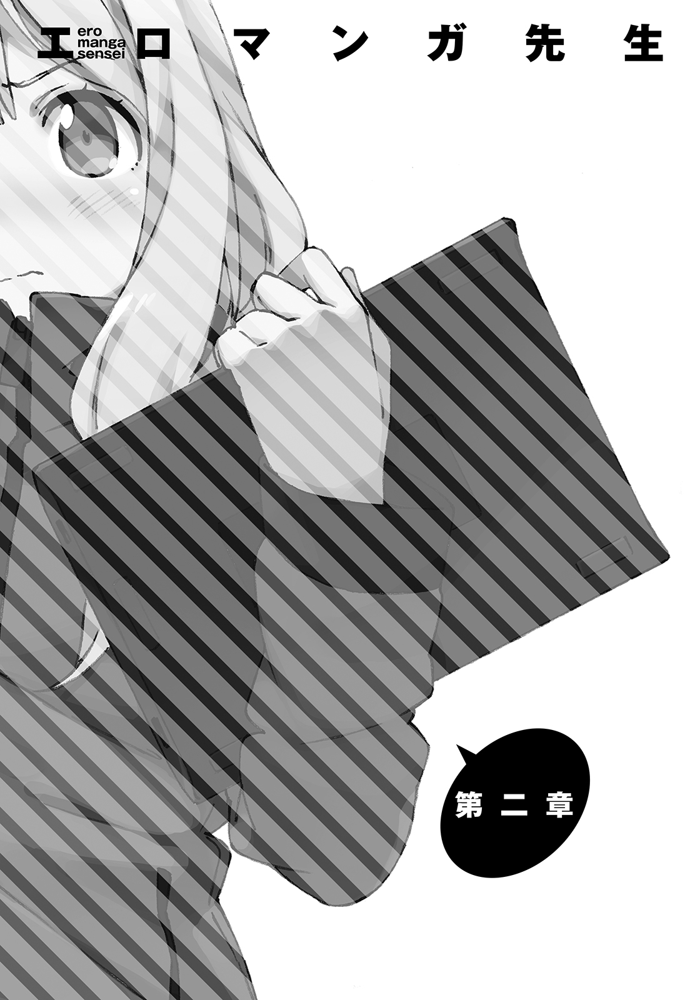
妹の部屋に初めて入ってから、数日が経っていた。
お互いに『相手の正体』を知って、何かが変わるかと思いきや、そんなこともなく。
俺たちは再び、いつもどおりの日常へと戻っていた。
紗霧は部屋から出てこないし、俺は学校と家事と仕事の繰り返しの日々を送っている。
──一緒に暮らしていることを、家族とは言わないもの。
「まったくだ。言われずともわかっているさ」
それでも俺は、あいつの家族になると、兄貴になると決めた。
こんな程度でへこたれるわけもない。
と──
どんどんどんどん！
天井から、ごはんの催促が聞こえて来た。
「はいはいはいはいはい、いま持っていくよ！」
俺はいつもどおり、妹の部屋に朝食を運ぶのだった。
「ん......んん......」
大きく伸びをして、肩の凝りをほぐす。
今日は土曜日。学校は休みである。
俺はたいてい金曜日から日曜の夜まで、延々と起きて活動しているので、まだまだ元気は有り余っている。
平日は学校があるから、なるべく週末にまとめて仕事を進めてしまおう──というのが、俺に限らず兼業作家の考え方じゃないだろうか。
「とりあえず風呂に入って、それから買い物に行くか」
ずっと俺が家にいたら、紗霧が困るだろうしな。
なんて、そんなことを考えていたとき。
ぴんぽーん、とインターホンが鳴った。
「おおっと、紗霧～、出てくれ～」
妹の部屋に向かって声を掛けてみるも、もちろん反応は──
どん！
あったけどさ......。
「そんなキレることないだろ......」
いまのシチュエーションで、俺に頼まれた妹が「は～いっ♪」とかわいく来客を出迎えるってのが理想なのに......。俺の夢が叶う日は遠そうだぜ、ったく。
ぴんぽーん、ぴんぽんぴんぽーん！
「は～いっ♪」
哀しいかな現実では、かわいい返事をして来客を迎えるのは、兄貴の方なのであった。
しかしせっかちな客だな。インターホン連打しやがって......。
「ごめんくださーい！ ごめんくださーい！」
と、元気のいい女の子の声が聞こえたところで、玄関に到着。
俺はドアノブをひねって開ける。
「どちらさまですか──っと」
一瞬硬直してしまった。そこにいたのが、びっくりするぐらいの美少女だったからだ。
白と紺のセーラー服。ロングの茶髪に、夕方の日差しがきらきらと反射して輝いている。
なにより印象深かったのが、その強烈な笑顔だった。
生命力に溢れているというか、見ているだけで元気が出るというか。
こいつがゲームキャラだったなら、絶対に光属性だ。
びりびりと正のオーラを放っているもの。
「..................」
俺は階上を見上げ......
......うちの妹とは正反対だな。
なんて思った。
俺の妹は、とびきり可憐ではあるものの、病的に白い肌、背丈は低く、胸はぺったんこ、声は小さく、ときおり魂を吸い取るような笑顔を見せる。
完全に闇属性。
びりびりと負のオーラを放っているものな。
もっとも、そんなろくでもない面ばかりだけじゃないのだが──
なんて物思いにふけりそうになったところで、目の前の彼女がきょとんとしていることに気付いた。
「あ、ああごめん。で──えっと、どちらさまでしょう？」
というかこんな美少女が、我が家に何の用があるというのだ。
彼女は『よくぞ聞いてくれた』とばかりの得意げな仕草で、堂々と名乗りを上げた。
「あたしは神野めぐみっ、和泉紗霧さんのクラスメイトですっ！」
「紗霧の......クラスメイト？」
「はい！」
紗霧のクラスメイトってことは、あいつと同じ歳ってことで......つまり......中一ってこと？ ずいぶん大人っぽいな。ちょっと前まで小学生だったやつとは思えない。俺と同じ歳くらいに見える。
「ときにおにーさんは、和泉さんのおにーさんですかっ？」
「おう、そうだぞ」
「でも、血はつながってないんですよねっ？」
「............まぁな」
言いにくいところをズバズバ来やがるな、この娘。
別に嫌な気分にはならなかった。むしろ、ハッキリしていて好感が持てる。
「聞いたところによると、いまは妹と二人で暮らしている......で、よかったですかねっ？」
「保護者はいるから、二人暮らしってわけでもないな」
よそ行き用の答えを返す。あの保護者はちっとも帰ってきやがらねえから、実質二人暮らしみたいなもんだけどな。......そこまで部外者に言う必要はない。面倒事になるだけだ。
めぐみは「ふーん」と、気のない返事をする。
何を考えているのか、わからない。
いまのやり取りを見ると、我が家のことについて調べてきたような感じだが......。
学校が休みなのに、制服で来たってことは、学校関係の用事だろうか。
「ええと......神野さん、だっけ？」
「めぐみんでいいですよー。学校ではみんなそう呼びますしっ」
俺はおまえの友達でもクラスメイトでもねえよ。
んな恥ずかしいニックネームなんぞ使ってられっか。
......なんて言えるはずもないので、
「じゃあ、めぐみちゃん......でいいかな」
「え～、だめですよぉ」
「だめなの!?」
まさか断られるとは......。
「あたし、おにーさんと仲良くなりたいなぁ。『めぐみん』がど～してもだめっていうなら、『めぐみ』って呼び捨てにしてください」
上目遣いで、手を組んだ『お願いポーズ』で言うめぐみ。
......なんだこいつ、馴れ馴れしいガキだな。
「わかった、よろしくな、めぐみ」
「はいっ！」
輝かんばかりの笑顔。
そのへんの男子なら、一発で虜にしてしまえるような可愛さだった。
「で、君はなんでうちに？ 紗霧にプリントでも届けに来たの？」
「..................」
「ん？ どした？」
聞くと、めぐみは急にむすぅっとして、
「あっれぇ～？ おっかしーなぁ、あたしに一目惚れしない男の子なんて、いるわけないのに」
もの凄いことを言い始めやがったな。どんだけ自信家なんだ。
「おにーさんてぇ、男の子が好きな人？」
「違う！ どうしてそういう結論になるんだ！」
「だってぇ、あたしが全力で笑ってあげたのに、ちっとも動揺しないんですモン」
......こいつ......見た目は天使かもしれんが、性格は小悪魔だな。
わざとやってたのかよ、アレ。末恐ろしいガキだ。小学校卒業したばっかのくせに。
「確かにおまえは、かなり可愛い方だと思うけど、だからって別に一目惚れなんかするか」
「むー」
めぐみは、唇をすぼめて納得いかないという顔をしている。
バカめ。貴様を超える美少女である妹のぱんつを日々洗っているこの俺が、いまさら女に一目惚れなどするものか。
めぐみは頰を膨らませて、
「あたしに反応しないなんて、おにーさんのおちんちんは、使い物にならないんですねっ」
「はいはい、もうそれで──────なに？」
長い沈黙。
え？ なに？ 聞き間違い？
「おま......君......小学校卒業したばかりだよね？」
「そうですよ？」
「俺の妹と同じ歳なんだよね？」
「そうですよ？」
「いま、おちんちんとか言わなかった？」
なに言ってんだ俺。これで聞き間違いだったら、社会的に終了ではないか。
まとめブログにも載ってしまう。
【悲報】ラノベ作家、和泉マサムネさん、十二歳美少女にセクハラする。
などと......し、しかし......
「言いました！ なにかおかしいですかっ？ おちんちん、大好きですけど！」
「だ、大好き!?」
「はいっ、あたしと同じくらいの歳の女の子は、みんなおちんちん大好きです！」
ありえない！ こここ、こんなことはありえない！ 同じ歳くらいの女の子!? しょ、小六とか、中一とかだぞ！ イマドキの小学生女子が、そこまで性的にみだれているとでも!?
「ば、バカな......バカな......」
に、日本はいったい、どうなってしまったというのだ。俺が小学生だった頃は、そんなことなかったはず......い、いや......アホな男子が気付かなかっただけで......実は......清純そうなあの娘も、真面目そうなあの娘も......？ う、うわあああああああああああああああああ！
はげしく動揺する俺に、めぐみが言った。
「やだなぁ、そんなに驚かなくても。きっと妹さんだっておちんちん大好きですよ」
「そんなわけないだろうが！」
殺すぞ腐れビッチ！ いいい、一瞬でも、ヘンな想像させやがって！
くそ！ なんてことだ！ 俺の女子へのイメージが、ほんの数分で致命的な崩壊を......！
がしがしと頭をかきむしる俺に、めぐみがあっさりと言った。
「冗談です」
「........................」
「冗談ですって。もー、おにーさんてば驚きすぎー」
けらけらと笑うめぐみ。
どこまで冗談なんだ、小学生は無事なんだろうな、と、聞き返す力も残っていなかった。
「さぁて、話を戻しますよっと」
「......勝手にしてくれ」
俺は力なく肩を落とす。するとめぐみは「えーと」と、言葉をさまよわせてから、
「あたし、クラス委員をやっているんです」
「はぁ？」
クラス委員？ この......不純異性交遊を具現化したような、腐れアマが？
「あ、信じてないでしょー。ほんとなのにぃ」
だとしたら、よくある面倒事を押しつけられたケースじゃなくて、目立ちたいがために自ら委員長に立候補するパターンだな、きっと。
委員長・めぐみは、こほんと咳払いをして、
「あたしは和泉さんを、学校に行かせるために来たんですよ」
にこやかに本題を切り出した。
「お邪魔しまーす」
「ま、適当に座っててくれ」
「はーい」
俺は、めぐみをリビングに通してやった。本当は、こんな破廉恥なやつを、俺と紗霧の家に入れたくはなかったのだが、あの用件を聞いてしまってはそうもいくまい。
隣接するキッチンに向かう。
俺の母親......お袋が大の料理好きだったせいもあり、我が家のシステムキッチンはやたらと本格的だ。俺にとってはオーバースペックな機材の数々は、見るたびに『使いこなせなくてすまん』と申し訳なく思う。
でかい冷蔵庫から適当にジュースを選び、コップに注いで戻ると、めぐみは二人がけのソファに座って、きょろきょろと興味深そうに部屋を見回していた。
こちらに気付くと「あ、どもです」と会釈をしてくる。
「なにを見てたんだ？」
「可愛いカレンダーが貼ってあるなーと」
「ああ、それな」
リビングには、俺の著作のカレンダーが貼ってある。グッズ化した、数少ないブツのひとつであった。『転生の銀狼』第一巻の表紙絵が、四月のカレンダーを彩っている。
「好きな小説のカレンダーなんだ」
わざわざ作者ですと明かすこともなかろうと、俺はめぐみにそう答えた。
「へーっ、和泉さんじゃなくて、お兄さんが好きなんですか、こういうの。もしかして、オタクってやつです？」
「おう、まーな」
否定することはできない。本当のことだし、それに、アレは紗霧の描いたイラストなのだから。大好きに決まっている。ただまぁ、リア充っぽいめぐみには、ウケは悪いだろうな。歯に衣着せぬやつだから、気持ち悪いくらいのことは言われるかもしれない。
俺は表情には出さないように、内心で覚悟を決めた。そしたら、
「いいですねっ」
なんて返事がかえってきた。
「実はあたしもかなりオタクでぇ、昔からすっ～ごい漫画とか読むんですよっ」
「へぇ、意外だな。どんなのを読むんだ？」
「ワ●ピースとか大好きですっ！」
「......そ、そうか」
へえ、ワンピ●ス！ 面白いよな！ 俺も大好きだよ！
口に出して言えたなら、俺もリア充になれる素質があるのかもしれない。
いや、俺も、毎週楽しみに読んじゃいるけど。それって本当に漫画が好きなの？ 『みんなが好きな超人気作品』だから、好きなだけじゃないの？ なんて勘ぐってしまう。
「ところで、和泉さんて」
めぐみがそう切り出した。
俺はローテーブルにジュースを置いてから、めぐみに「ちょっと待っててくれ」と言い残し、『開かずの間』へと向かった。階段を上り、固く閉ざされた扉の前に立つ。
......絶対に無理だとは思うが、もしかしたら......。
俺は万に一つの可能性にかけて、声を張り上げる。
「紗霧～、クラスメイトが来てくれたぞー」
一秒、二秒、三秒......
どんどんっ！
「......怒っていらっしゃる」
こうなるよなぁ......どーしたもんか。
『開かずの間』に背を向け、俺は、とぼとぼと階段を下りて行く。と──
ピピピピピピ！ ポケットに入れていたスマートフォンが鳴った。液晶を見てみると、知らない番号だ。通話ボタンを押して、耳に当てる。
「はい、和泉です。どちらさま──」
『......私』
「紗霧か！」
俺は食い付くように話しかける。ボソッと小さい声だったが、妹の声を間違えるわけがない！
『そ、そう』
「やっぱそうか！ ......おまえなぁ、なんで家にいんのに、電話なんだよ」
どういう状況だ。てか、こいつ部屋ん中から電話かける手段を持ってるんだ。携帯を持っているのか、パソコンでなんかやってるのかは知らないが。
まあよし。妹の電話番号ゲット！
『......扉を開けずに兄さんと会話をするには、こうするしかなかったの』
「いいけどさ。よく俺の番号わかったな」
『......なんだって、いいでしょ』
気になるが、問い詰めると切られてしまいそうだ。
『そ、それより......兄さん、ど、どういうこと？』
「なにが──って、ああ......おまえのクラスの委員長が、いまうちに来てるんだよ」
『な、なんで家に入れちゃうの！ に、兄さんは、私を殺したいのね!?』
「うおっ」
いきなり音量が！ どうやらマイクを使ったらしい。
「いや、もしかしたら、これでおまえが部屋から出てきてくれ──」
『出るわけない！ 出ない出ない出ないっ！ 出ないったら出ないっ！ 追い返して！』
「うーん」
わかっていたことだが、紗霧を部屋から出すのは無理か。
しかし、妹に嫌われることなく（重要）、なんとか譲歩を引き出したい。
せっかくの機会なんだし。
「すぐに追い出すのは無理だから......俺が話だけでも聞いてみることにするよ」
『聞くだけむだなのに』
「それでもだ。──なぁ、電話でもいいから、クラスメイトと話してみる気は──」
『ない！』
即答である。
「......わかった。じゃ、切るぞ」
『ま、待って』
「どうした？」
『........................その、委員長って......女？』
「ああ、けっこう可愛い娘だったぞ」
腐れビッチだけどな。
『............................................................』
「......紗霧？」
『......話はしない。けど』
「けど？」
しばらく沈黙が続く、が、俺は辛抱強く待った。
『切らないで。持ってて。......気付かれないように』
「......それって」
きぃ。俺の問いに答えるかのように『開かずの間』の扉がわずかに開く。
そして隙間から、ぽいっと何かが飛んできた。
俺はそれを拾い上げ、
「......これを着けろってことか」
『......そう』
紗霧が部屋の外に投げてきたのは......ワイヤレスイヤホンだった。
リビングの扉を開けると、めぐみがちょこんとソファに腰掛けて、露出の多い脚をぶらぶらさせていた。
「待たせたな」
俺は、めぐみへと近付いて行く。スマートフォンは胸ポケットの中だ。ワイヤレスイヤホンは、片耳だけ装着し、外部の音も、紗霧の声も、聞こえるようにしてある。一方で、紗霧の声は、めぐみには聞こえない。
「あれ、おにーさん。和泉さんは？ 呼びに行ってくれたんじゃないんですか？」
俺は首を振った。
「？ 家にいなかったんですか？」
「いや、めっちゃいるけども」
「めっちゃいるって、なんか変な日本語ですね」
そう表現したくなるくらい、ずっと部屋にいるんだよ。
「まあいいですけど、いるならなんで呼べないんですか？」
「部屋から出てこないからだ」
「..................」
あまりに身も蓋もない理由だったからか、めぐみから反応がかえってこない。
目をぱちくりとさせている彼女に、俺はふんぞり返って言ってやった。
「どうだ、どうしようもないだろう」
「偉そうに言わないでくださいっ」
めぐみは、ローテーブルを叩いてツッコミを入れてくる。
「う、まさか学校に来ないだけじゃなくて、部屋からも出てこないなんて......ここまでの引きこもりっぷりだったとはっ」
想定外ですっ！ と、めぐみは頭をかかえてしまう。でもって顔を上げて、
「ちなみにおにーさんは、このままでいいと思ってるんですかっ？」
「もちろん、よくないと思ってるぞ。この一年間、あいつが部屋から出てきてくれるよう、俺なりに色々がんばってきたつもりだ。......うまくいっているとはいえねえけどな」
「だったら、あたしと目的は一緒ってわけですね」
「まぁ......そうかもな」
正確にはちと違うが、いまはいいか。実際、『紗霧に部屋から出てきてほしい』ってところまでは、目的が一緒だしな。
「でしたら、おにーさん、あたしと同盟を組みましょう！」
ぐっと拳を握りしめ、めぐみはそんなことを言い出した。
「同盟ねえ......」
いまいち気乗りしないんだよな。
......こいつが役に立つというイメージがまったくわかない。
「ほらぁ、そんなところに立ってないで、隣に座ってくださいよぉ」
ぱんぱん！ と、めぐみは自分が座っている二人がけソファを叩く。
向かいのソファに座ろうと思っていた俺は、少々迷ったが、
「さ、さ、遠慮しないで！ 座ってください！」
「......自分ちみたいな言い草だな」
結局めぐみの言うとおり、隣に座ることにした。
「えへへー、おにーさんの隣ぃ♪」
うざってぇやつだな。玄関前でのやり取りで、俺のおまえへの好感度はダダ下がりなんだぞ。
『......お兄さんとか......なにこいつ......むかつく』
紗霧もイラついているご様子。
『兄さんも兄さん。ば、ばかじゃないの？ どーせ鼻の下のばしちゃってるんでしょ......さいてー』
ぐぬううううううううううう！ 妹の好感度がどんどん下がっていっている......！
違う！ 違うんだ紗霧......！ 言い訳をしたいが状況がそれを許さん......！
「あれー、おにーさん、どーしちゃったんですかぁ？ そんなに顔を真っ赤にして♪ あー、照れてるんでしょー。えへへへへ、カワイイなー」
ちっげーよ腐れビッチ！ これは！ 悔しさをこらえているんだ......！
「も、もういい。話を戻してくれ──俺とおまえで同盟を組む......だっけ？」
「はいっ。へへー、名付けて、和泉ちゃんを部屋から引き摺り出すぞ同盟です！」
「なんだそのぶっそうなネーミングは」
「フッ、あたしの気合の入りっぷりが伝わるというものでしょう」
確かに、から回るほどの熱意がひしひしと伝わってくるが......。
だからこそ、余計に不安である。
「そもそも、同盟云々の前に聞いておきたいんだが。なんでおまえは、紗霧を部屋から出したいわけ？」
「トーゼン、学校に来させるためですっ！」
「......じゃあ、どうして紗霧を学校に来させたいんだ？ 委員長だからってのはわかるが、それだけでここまでお節介をしてくるってのが......どうもよくわからん」
「あたし、友達作るの好きなんですよ」
めぐみはそう答えた。
あっさりと。
「入学式が終わって、そっこー同じ歳の子全員と友達になったんですけどぉ、和泉ちゃんとはまだ友達になってないなーって」
......な、なんか、とんでもないことをしれっと言ってないか？
友達になった？ 同じ歳のやつら全員と？ えっと、クラス全員じゃなくて？
「入学したのに一回も学校来てない人がクラスにいる──ってみんなも心配してたし、せっかくなったんだから委員長っぽいことしたかったし、登校拒否の子を学校に連れてくるのって前もやったことあったから、いけるかなーって」
「ま、前にもやったことがある......だと......？」
「小学生のときですけどね」
実績ありってことか。
『親切押し売り偽善者帰れ』
そう言うなよ紗霧。......これはもしかして......期待してもいいのか？
めぐみは、にいっと真っ白な歯を見せて笑った。
「みんなにも、『あたしに任せといて』って大見得きっちゃいましたし、そんなわけであたしはいま、和泉ちゃんを引き摺り出すことにちょう熱意を燃やしちゃってるわけですよん♪」
いつの間にか、紗霧への呼び名が、和泉ちゃんに変わっていやがる。
『一度も会ったことないくせに、この遠慮のない距離の詰め方......』
拒絶されるなんてまったく考えてない、というか、怖がってないんだろうな。
『すっごく嫌いなタイプ』
俺は、妹の氷のような声を片耳で聞きつつ、
「なるほど......よくわかった。それで、具体的にどうするんだ？」
やや前のめりになって問うた。こいつに協力すれば、本当に妹が部屋から出てきてくれるかも、と、ささやかな期待を持ち始めていたからだ。
「おにーさん、ひとつお尋ねしますが、和泉ちゃんが部屋に引きこもって何をやっているか、ご存知ですか？」
「え......っと」
一瞬、紗霧の正体や動画配信のことが見透かされているのかと思って焦ってしまった。
「よくあるケースで、部屋に引きこもって、ずーっとパソコンをいじっているというのがありましてっ。もし和泉ちゃんがそうなら、家族に協力してもらうことによって、部屋から引き摺り出す秘策があります」
だから引き摺り出すという過激な表現をやめろよ。
「おおむね当てはまっているが......ど、どんな秘策なんだ？」
めぐみは、指を一本立てて、にこやかに言った。
「ネット解約してください」
「........................」
『..........................................』
マジか、この女。
うわぁ......うわぁ......言っちゃうの、それ、みたいな。
身も蓋もなさすぎて、秘策でもなんでもねえよ。
「......あれ？ どうして黙っているんです、おにーさんっ。さあ、いますぐプロバイダーに電話して、諸悪の根源を絶ってしまいましょうよ！」
怖い......俺はいま、たまらなくこの女が怖い......。
正しい！ 言っていることは確かに正しいんだけれども！
「お、おまえは人間じゃない！ 神にでもなったつもりか！」
「いつの間にそんな大きな話にっ!?」
「ネ、ネット解約するとか、いくらなんでもひどすぎるだろ！ 俺が引きこもってる当事者だったら、絶望して何するかわからんぞ！」
部屋からは出てくるかもしれないが、家族の絆に修復不可能な傷痕を残してしまう。
「え～っ？ 大げさじゃありません？」
めぐみはいまいち理解していないような口ぶりで、
「友達がいれば、別にネットとかパソコンとか、いらなくないですか？」
「な、なに......？」
相手が完全に本気で言っているようだったので、俺は当惑してしまう。
「ていうか、友達がいないのに、ネット環境だけあっても意味ないっていうか。友達がいないのにぃ～......いったいパソコンでなにやってるんですか？ ほんとにほんとに不思議なんですけども」
「い、いや......それは......」
きょとんと首をかしげるめぐみに、俺はどう答えたものやら困ってしまった。
「色々......あるだろ？」
「色々？」
そう。たとえば、小説書いたり、絵を描いたり、掲示板眺めたり、音楽聞いたり、ゲームやったり、仕事したりさ。
パソコンって、世界最高の万能ツールじゃないか。
友達を越えてるよ。むしろパソコンがあれば友達なんていらねぇよ。
違うの？ 俺の考え、間違ってるの？
──と、声に出して言えないあたり、俺も非リア充サイドの人間なのだろう。
「い、色々は色々だよ。......パソコンがあると楽しいぞ？ たとえ友達がいなくても」
俺の苦し紛れの答えに、めぐみは唇をすぼめる。
「えーっ？ 学校で友達とお喋りしてた方がずーっとずーっと楽しくないですかぁ？」
『楽しくねえええええええええええええええええええええええええよ！』
紗霧、魂の絶叫であった。
きぃん、というもの凄い耳鳴り。
そりゃそうだ、マイク使ってんだもん。下手すりゃ鼓膜が破れるとこだ。
「............が......は」
くらりと視界が揺れ──俺は、前のめりにぶっ倒れた。
「ちょ！ お、おにーさんっ!? だいじょぶですかっ!?」
「い、いや......大丈夫......問題ない」
俺は、耳鳴りでふらつくのを必死で堪え、なんとか起き上がる。
「というか、いまの声？ って......」
「ん？ こ、声？ なんのことだ？」
慌ててトボけてはみたものの......ごまかすのは無理そうだな。
思いっきり音漏れしてたし。
「......じぃ」
ホラ、めぐみのやつ、俺の耳を半目で見てやがるもん。
「なるほどー......和泉ちゃん......聞いておるね？」
『......兄さん、ごまかして』
無茶言うなよ。
「あー、バレちまったら......しょうがねぇわな」
俺は、自分の耳にはまっているワイヤレスイヤホンを指差した。
『兄さん！』
怒りの声を上げる紗霧。こりゃ、すぐに通話を切られるかな、と思いきや。
「ちょぉ～っと待った！ 和泉ちゃん、切るのすとーっぷ！」
めぐみが片腕を伸ばして、声を張り上げた。
「いま通話を切っちゃうとぉ......後悔するかもよ？」
『......なに言ってるの、この女』
さあ。俺に聞かれても。
「ふふーん」
にやぁ、と悪戯っぽい笑みを浮かべるめぐみ。
ぞくっ、と妙な感触が、俺の背筋を駆け上る。
「な、なんだよ......」
『............』
紗霧も異様な雰囲気を感じ取ったのか、通話を切るのを一時取りやめたようだ。
俺とめぐみは、二人がけソファに座っているのだが。
端っこに身を寄せて座っている俺に向かって、めぐみは座ったままの体勢で、ぴょん、ぴょん、と近付いてきやがった。ほぼ密着に近い位置にだ。......逃げられない。妹とは違う、柑橘系の香水の薫りが、俺の鼻腔をくすぐった。
「えっへっへぇ～......おにーさん、やぁ～っとあたしにドキドキしましたねぇ～」
「くっ......！」
不覚にも動揺してしまった俺に、めぐみは妖しく微笑みかけ、こちらの胸に、身体をこすりつけてくる。さながら猫が甘えるようにだ。
「お、おい......！ やめ......！ ど、どういうつもりだ！」
「すりすり♪ すりすり♪ えへへ～、おにーさん、いいにおい～♡」
「............！」
い、いったいどういう状況なんだコレ......！ な、なな、なんでこの女は、いきなり俺にくっついてきているんだ？ てかヤバ......！
恋愛感情なんぞカケラもないが、コレはさすがに......！
めぐみは、細い腕を俺の首にまき付け、耳元に、ふぅ、と熱い吐息をかけてくる。
「おにーさん......」
次いで彼女は、俺の胸ポケットあたりに口を近づけ、艶めかしい声で囁いた。
「おにーさん......ちゅーしたこと、あります？」
ドン！ ドンドンドンドンドン！
瞬間、天井がぶち抜けそうなくらいの、床ドンが轟いた。
「..................」
「..................」
俺とめぐみは、無言で天井を振り仰いだ。
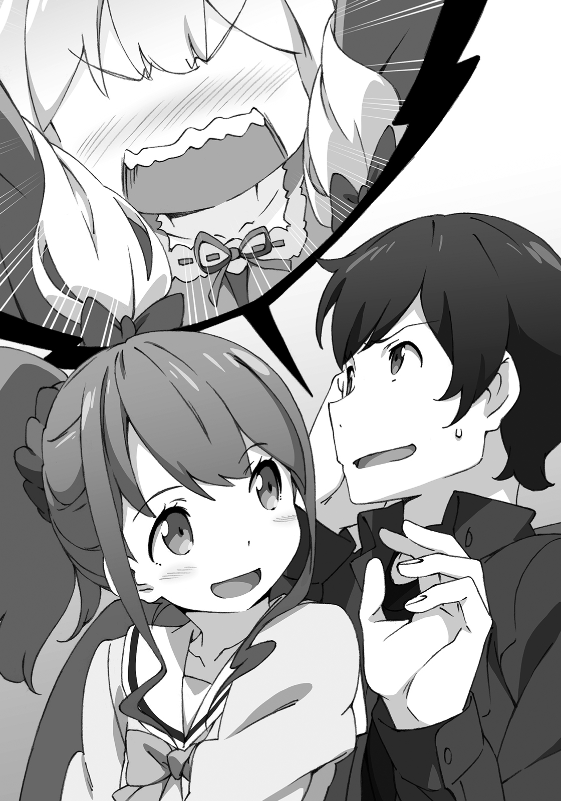
「──ぷぷっ」
めぐみが堪えきれないとばかりに噴き出す。
ドゴン！ ドゴドゴドゴンッ！ ガッシャーン！
紗霧さん、大暴れである。ちょ、スゲー音したぞ、いま......！
めぐみといい、紗霧といい──なんだってんだ、いったい。
俺が事態の急展開にまったくついて行けずに硬直していると、
「えいっ」
めぐみが俺の胸ポケットから、紗霧との通話がつながったままのスマホを奪い取った。
「あっ、オマ......」
「いっただきぃ♪」
兎のように飛び跳ねて、軽やかに俺から距離を取るめぐみ。
スマホを耳に当てて、
「和泉ちゃん、初めまして！ めぐみんでぇ～っす！」
「おい、返せ！」
俺は慌ててめぐみに手を伸ばす──も、簡単に避けられてしまう。
「おっとと、アブナイアブナイ」
めぐみは、たたっと小走りで、俺からさらに距離を取った。壁際で俺に背を向け、なにやら怪しい動きをしている。
「おい！ なにやってんだ！」
立ち上がってめぐみを追うと、彼女はやおらこちらに振り返った。
「いえいえ、べっつにぃ～」
めぐみは、スマホを俺に向かって放り投げてきた。
「はいっ、お返ししますね。切れちゃってますけど」
ぱしんと俺はキャッチして、
「......なんだったんだよ、いったい」
「さーて、なんだったんでしょうねぇ～、ふひひひひ」
嫌らしい笑い方しやがって。
めぐみは、両手を背中に隠すような体勢で、ニヤニヤしている。
こいつ......絶対なにか悪いこと企んでいるだろ。
けど、いまはそれどころじゃねぇ。
「心配だから、ちょっと上見てくる」
「あ、和泉ちゃんなら大丈夫ですよ。怪我ひとつないっぽいです。それよりも──」
そこで、めぐみの口調ががらりと真剣なものへと変わった。
「おにーさんに、質問させてもらっていいでしょうか？ 和泉ちゃんの、ことで」
知るか！ 俺は妹が心配だから様子を見に行く──と、言うつもりだったのに。
俺の口は、別の台詞を紡ぐ。
「............なんだよ」
「和泉ちゃんって、どんな娘なんですか？ あたし、写真も見たことないんです」
「悪いな、俺も紗霧の写真は持ってない」
たぶん、母さんの遺品の中にあるのだろうが......。
アレは俺が触っていいものじゃないからな。
「紗霧がどんな娘なのか、か。そうだな──」
俺はごくごく素直にこう答えた。
「まず、見た目は、むちゃくちゃ綺麗で可愛いよな」
ガタッ！
「........................」
俺とめぐみは、天井を振り仰ぐ。紗霧のやつ......また上で音立ててやがる。
いつもの『ごはんの催促』とは違う、初めて聞くタイプの物音だった。
「ほうほう、むちゃくちゃ綺麗で可愛い......ですかぁ」
「おう、ぱっと見、無表情で大人しそうで、触るのが怖いくらいに華奢で、まさに可憐な乙女って感じなんだが──話してみると、ころころ表情が変わって愛嬌あるんだ。あいつの笑顔を見るために、俺は生まれてきたのかもしれないな」
ガタッ！ ガタタッ！
上から物音が連続する。めぐみは、あっけにとられた顔でちょっと固まる。
いかん、つい気持ち悪いポエムを披露してしまったぜ。......シスコンとでも思われてしまったか。ま、まあいい、紗霧に聞かれているわけでもないしな。
「にゃるほど～、ふふふふ......」
「なに笑ってんの？」
「や！ なんでもないです！ ぷふっ......え、えっとぉ──それでそれで？」
「そうだなぁ......あとは、むちゃくちゃ絵が上手い」
なにしろプロだもんな。めぐみにそうは言えないけども。
「へーっ、和泉ちゃんて、絵を描くんだぁ。ちなみに、どんな絵を？」
「えっちな絵が上手いな」
ガタンッ！
「........................」
俺とめぐみは、天井を振り仰ぐ。またか......なにやってんだ、あいつ。
「え、えっちな絵ですか？」
「ああ、非常に素晴らしい、えっちな絵を描く」
どんどんどんどん！
「もしかして、和泉ちゃんて......えっちな娘、だったり」
俺は重々しく頷いた。
「えろい」
どんっ！ ......さっきからうるせえな。ゴキでも出たか。
「なにしろあいつ、中一のくせになかなか凄いぱんつを──」
「はいてるんですかっ!?」
「描いてるんだ！」
なんで俺が、妹のぱんつの種類をクラスメイトにばらさなくちゃならんのだ。
めぐみは、ドキドキと胸を押さえて、
「な、なんだぁ。もー、びっくりしちゃいましたよー......て、てっきり和泉ちゃんと、おにーさんが、変な関係なのかなって」
「ありえない誤解はやめろ。一緒に暮らしてるからって、兄と妹が恋愛関係になどなるか」
「..................」
「なぜ黙り込む？」
「い、いえ、別に。ちょっと、その、アレかなと」
なんだそりゃ。意味がわからん。
「じゃ、次、最後の質問......いいですか？」
めぐみは、先と同じく、真剣な口調になる。俺も彼女に合わせて、真面目に言った。
「おう、どうぞ」
「おにーさんは、妹さんに、どうなって欲しいんですか？」
「どういう意味だ？」
「......本当に、学校に行かせる気があるのか？ って意味です」
「────」
「だって今日、おにーさん、まるであたしから、妹さんを守ってるみたいでした」
本当に、紗霧を学校に行かせる気があるのか──か。ふむ......
「ないといえば、ないな」
「あ、やっぱりですか」
「ああ。俺は、紗霧に部屋から出てきて欲しいんだ。学校に行かせたいわけじゃない」
この二つ......俺とめぐみの目的は、似ているようで違う。
「学校には......行かなくていいってことですか？」
「そりゃ、行った方がいいに決まってるだろ。でも、むりやり行かせても意味ないし──もうちょっとゆっくりでもいいんじゃないかとは思う」
「......義務教育なんですよ？ 家にいたら永遠に友達いないままなんですよ？」
「そうかもな。でも、俺はそう思うんだ」
これは、エロマンガ先生の正体を知ったからこそ言える台詞ではあった。
ちょっと前の俺だったら、ここまで言い切れなかったろう。
当たり前の話だが、基本的にゃあ、学校ってのは行った方がいい。行くべきだ。
「なんつーかさぁ、うまくいえねーけど。学校って、行った方が、将来のためになったり、楽しかったりするから行くわけだろ？ あと、みんな行ってるしな。おまえのいうとおり、義務教育でもあるし」
俺なんかは、小説書いたりすんのに、むちゃくちゃ役立つから行ってる部分もあるし。行かないと、学費払ってくれてる人に、失礼かなとも思うし。だから行ってるんだと思うんだけど。
「『学校に行かなきゃいけない理由』なんて、あたりまえすぎて、考える機会はなかなかねーよな。あんまり上手く伝えられん」
ただ、こう思うのだ。
「学校行っても楽しくなかったり、将来のためにならなかったり......そいつにとっての幸せにつながらないやつだって、いるだろ」
世界には、色んなやつがいて、色んな価値観があるんだから。
俺の書いた本読んで、面白いって言うやつもいれば、つまんねーってキレるやつもいるように。
「..................」
「学校行ってなくたって、将来のために頑張ってて、色んなことを学んで、毎日楽しくやってて、幸せに生きようとしてるやつだって、いるだろ」
「和泉さんが、そうだと？」
「ああ」
俺は頷いた。......こいつになら、少しだけ言っても構わないだろう。
「あいつは、紗霧は......部屋に引きこもってなにやってんのかと思ってたら......俺に内緒で、すげーことやってたんだ」
「すごいこと？」
「ああ、もしかしたら、学校で勉強するよりも、すごいこと」
「詳しい内容は......」
「すまん、教えられない。......ただ」
「ただ？」
「......これから話すのは、紗霧には知られたくないことなんだけど......秘密にしてくれるか？」
「わかりました。誓います。絶対に、誰にも言いません」
めぐみは、真剣な顔で言った。ウソを吐いている顔ではなかった。
俺は頷いて、本心を語り始めた。
「俺さあ、ちょっと前まで、早く金を稼げるようになって、自立して......『引きこもりの妹をやしなってやろう』なんて、考えてたんだ」
「ご立派です」
俺は首を振った。
「とんだ思い上がりだったよ。だってあいつは、俺なんかよりも、ずっと凄いやつだったんだから」
下手したら俺、妹に年収でも負けているかもしれない。
「......さっき、おまえ『家にいたら永遠に友達ができない』『友達がいないなら、ネットもパソコンも意味がない』って、言ったな」
「はい、言いました。それが？」
「これは当然、たとえばの話だけど......もしもおまえが死んだら......何人が泣くかな」
「うーん、そうですねぇ」
めぐみは、顎に指を当てて、しばし考え込んだ。
「五百人くらい？ ですかね？」
ぱねぇ。めぐみさん、ハンパねぇ。これがリア充か......恐ろしい......。
「そ、そうか。ご、五百人ね......ゴホン」
俺は咳払いをしてからこう言った。
「紗霧の勝ちだな」
「............」
めぐみは目を丸くしている。
「え、それって」
「言葉どおりの意味だ。あいつには、そのくらいたくさんの友達──と呼べるかどうかはわからないけれど、大切に思ってくれている人たちがいる。俺だっている」
「あたしもいますよ」
「じゃあ、おまえもいる。どーだ、俺の妹は、すげえだろ？」
俺は胸を張って、自慢した。
「たとえ学校に行ってなくても、部屋から出てこなくても、あいつは自慢の妹だ。すごいやつだ。兄として、誇らしいよ。負けちゃいらんねえって、思う。今度はあいつに、認められたいって、思う。......だから、いつかは学校に行って欲しいけど──むりやり行かせようとは、思わない」
俺の話は、以上だ。
めぐみは、ゆっくりと頷いた。
「そですか。おにーさんは、和泉ちゃんのこと、そーゆーふうに思ってるんだ」
気のせいかもしれないが、誰かに言い聞かせるような言い方だった。
「おう、約束どおり、秘密にしてくれよ」
「わかってますって、誰にも言いません。もし約束を破ったら、あたしにえっちなおしおきをしてもいいですよ？」
「言ってろ」
にやりと笑っためぐみに、俺は苦笑で返事をする。
こいつとも、少しだけ通じ合えたような気がした。
「じゃ、帰ります」
「おう、今日はありがとな。紗霧のために」
「いえいえ──また来ますよ。あたし、諦めたわけじゃありませんから。和泉ちゃんが、すすんで学校に来たくなるような......そんなプランを考えてきます」
「......期待しないで待ってるよ」
げんなりと言うと、めぐみは「あはは」と明るく笑った。
彼女は、背中の後ろから携帯を取り出した。
「アドレス交換しましょうよ。同盟の、証に♪」
一緒に、和泉ちゃんを引き摺り出しましょう──
めぐみは、ストラップに指を突っ込んで、くるくると回す。
「はいよ。よろしくな、めぐみ」
「えへへー。よろしくお願いします、おにーさん」
どん！ と、天井が、揺れた気がした。
めぐみが帰ったあと、俺は妹の部屋に様子を見に行ったのだが、まったく返事をしてくれなかった。知ったばかりの妹の電話番号にかけてみても、つながらない。
「......くそう......」
......あのとき、めぐみに何か言われたのか、とか。なんでドンドンやってたんだ、とか。
すげー音したけど怪我してないか？ とか......色々話したいことがあったし、心配でもあったのだけど。
「......応えてくれない、か」
慣れたものではあるが、やはり辛い。
「仕方ねえ」
俺は当初の予定どおり、風呂に入ってから出かけることにした。
小説のネタ出しは、作家さんごとに色々やり方があるのだろうが、俺にとっては風呂に入りながらが一番だ。熱い湯船に肩まで浸かり、ひたすらに考え込む。
そうすると、不思議といいアイデアが閃くのだ。
予算が許すなら、一日に何度だって、湯船に浸かりたいくらいである。
さすがにお湯がもったいないし、一日一回しか入らないけれど。
俺が出かけたら紗霧も入るだろうから、今日は昼間から、贅沢にも湯を張った。
仕事以外にも、考えるべき大事なことがあったからだ。
「俺の妹は、俺の担当イラストレーターだった」
熱い湯に肩まで浸かり、呟く。
「部屋に引きこもっている妹とは、いままでずっと接点がなかった。部屋から出てきて欲しいと願っても、もっと仲良くならなくちゃと焦っても、そのきっかけすら摑めないでいた。......けど」
そう。けど、だ。
「いまは......そうじゃない」
妹の引きこもり克服のための、そして紗霧と仲良くなるための、とっかかりを見つけたのだ。
俺の妹は、一緒に本を作る、仕事仲間なのだから。
「......やることは、決まってるよな」
簡単すぎて、口に出すまでもない。
──面白い小説を、書くこと。
実のところ、作家の悩みの九割は、これで解決することができる。
Ｑ．まだ学生ですが自立したいです。どうしたらいいですか。
Ａ．小説を書け。
Ｑ．過去のトラウマをいまだに引き摺っています。どうしたらいいですか。
Ａ．小説を書け。
Ｑ．仕事がうまくいきません。どうしたらいいですか。
Ａ．小説を書け。
Ｑ．貯金がなくて、将来が不安です。どうしたらいいですか。
Ａ．小説を書け。
Ｑ．妹と仲良くなりたいです。どうしたらいいですか。
Ａ．小説を書け！
「よしッ！」
もとより自立するため、金を稼ぐために、なんとしても売れる小説を書かねばならんのだ。この流れは、一石二鳥ってもんだろう。
自然、俺の思考は具体的な仕事内容へと移っていく。
「さあて......神楽坂さんはどの話を選ぶかなっと」
ぱしゃり。湯船に浸かり、熱いお湯を顔にかけながら、呟く。
前回の打ち合わせでは、まだ企画書（という名の完成原稿）を、編集に読んでもらっていなかったので、軽いネタ出しめいたことしかしなかった。
前回提出したブツを読み終わり次第、神楽坂さんから連絡があるはずだ。
どの作品を次回作にするのか。それとも提出した作品はすべてボツにするのか。
三年作家をやっているが、この『返事待ち』の時間は、いまだにハラハラする。
新人賞に小説を送って、返事を待つのと、何も変わらない。
もっとも俺の担当編集は、提出物へのリアクションがかなり早いので、恵まれている方なのだと思う。原稿を受け取ってから、三ヶ月も四ヶ月も返事をかえさない編集さんも、いるとかいないとか。想像するだにおっかないので、誇張された噂にすぎないものと思いたい。
で。
返事待ち中の作家が何をするのかというと、ケースバイケースで、たとえば別の作品のプロットを練ったり、営業活動をしたり、ライターの仕事をしたり、別シリーズの執筆を進めたりする。
俺は、新人賞を獲得して、一シリーズを完結させたという実績があるものの、いまの取引先以外にコネがないし、コネを作るための知り合いもいないし、飛び込み営業ができるほどの社会性の持ち合わせもないという『干されたら即死』な作家であるから、こういうときは、ひたすらネタ出しをするしかない。
全部ボツだったとき、すぐさま『次』を提出できるように。
提出した作品に『ＧＯ』が出たとき、すぐさま『次』を出せるように。
山ほどのアイデアを脳内に積み上げていく。
前回の打ち合わせで、神楽坂さんが『毎週新作を持ってくるつもりか』なんて怒っていたが、冗談抜きに、そうするつもり満々だった。
しかし──
「......うーん、今日は調子悪いな」
のぼせるまで脳味噌を絞っても、アイデアが閃かないときもある。
どうにも『別のこと』を考えてしまって、気が散る。
──兄さんの新作、と～っても面白いわ！ マジ泣きよ！
──記録的な重版だって！ 私のイラスト、たくさんの人に見てもらえるのね。
──きゃあ！ アニメ化よ、兄さん！
──素敵！ 私の描いたキャラたちが、テレビ画面で動くなんて......！
──にゃ～ん！ お兄ちゃぁ～ん、好き好き大好きっ♡ ちゅっちゅっ♡
「フハハハハハハハ！」
ざば、と、湯船から飛び出す。
「うおおおおおおおおし！ ネタ出しするぞおおおおおお！」
バシャンバシャンバシャン！ ぶるんぶるんブルルン！
テンション上がって来たあ──！ でもなんにも思いつかねええええええ！
仕事が進まないときは、全力で寝ておくのが定石なのだが、目が冴えまくって、とても眠れそうにない。予定どおり、本屋に行くぜ！
ネタ出し必勝法その一、風呂に入る。
そして、ネタ出し必勝法その二......
面白い本を読む、だ！
俺は風呂から出て、すぐに着替えて駅前へと向かった。
目的地は『たかさご書店』。
「到着、と」
ついこのあいだ新刊を買ったばかりだから、特別欲しい本があるわけではないのだが、俺はわりと毎日本屋に顔を出している。
なんとなく、本屋に足が向いてしまうのだ。この気持ち、わかるやつがいるだろうか？
「なーんか、面白そうな本ねーかな」
ぶらぶらと店内を冷やかしてまわる。たかさご書店は、マンガや小説については、アニメ専門店顔負けの品揃えで、店員のおすすめコーナーなんかもある。今日も手作りＰＯＰで色どられた棚に、智恵が推す作品が紹介文とともに面陳されていた。
ちなみに『面陳』ってのは、棚に、表紙が見えるような形で陳列することで、スペースを取ってしまう代わりに目立つから、他の作品よりも手に取られやすい。
本屋さんの基本必殺技その一、らしい。
「へー、これが面白いのか」
俺は智恵のオススメ本に顔を近づけて、眺める。智恵のセレクトは『いまの人気作品』だけではなく、自分で発掘した『あまり知られていないけど面白い本』を必ず混ぜてくるから、読む本探しにはとても役立つ。
『いま人気のある本』って、いまさらオススメされても『知ってる』『もう読んだよ』ってなっちゃうんだよね。アニメ化で人気爆発した作品なんかだとさらにコレが顕著で、好きだった作品がもの凄く巷で騒がれていると、なんとなくモヤモヤした気分になったりする。
ふ、ふんっ......俺の方がもっと前から知っているんですケド？ 調子に乗らないでよねっ！ みたいな。
「さすが智恵......どれも未読作品ばっかりじゃないか」
俺は、面白いに違いない未読本の山を、宝物を見る目で眺めるのであった。
実店舗に足を運ぶ、大きなメリットの一つがこれだ。
相性のいい（趣味の合う）書店員がいるお店は、俺にとって、とても価値あるものだった。
本好きの中には、『行きつけの本屋さん』なんてものがある人だっているだろう。
もう一つ。これは、作家にとってのあるあるネタなのだが──
「......俺の本、売れてるかな」
ついつい、本屋に足を運んで、自著の売れ行きやお店での扱いについて、確認してしまう。
出版社ごと名前順で並んでいる棚から、和泉マサムネの著作を探すと『転生の銀狼』シリーズだけが全巻揃っていた。他のシリーズは古いこともあって、一冊もない。
「全巻揃っている......だと......」
青ざめる俺。前回来たときも、全巻揃っていたからだ。つまり......
............売れたけど、補充されただけだよな？ 一冊も売れてないわけじゃないよな？
判断がつくわけもない。考えるだけ無駄である。
ちなみに......『自分の本が、お店の棚に数巻だけ残っているけど、全体的にはゴソッとなくなっている』のが、一番わかりやすく嬉しい。
全巻棚からなくなってると、撤去されたのかと思ってハラハラしちゃうからな。
「......ふむ」
俺は真顔で、自著を棚から取り出し、平積みされているアニメ化作品の上に並べ始めた。
「おまえらはもう十分売れてるんだから、これ以上目立なくていいだろ。その席は俺の本に譲れよ」
『平積み』というのは、表紙を上にして並べる一番目立つ陳列方法のこと。
人気作や新作だけが存在することを許される特等席みたいなもんだ。
「......ふふ、これで俺の本が目立つぜ」
呟いた瞬間。
ぱかーんっ、と、後頭部に軽い衝撃。
「あいって」
「こーらっ！ なーにやってんのさ！」
振り向くと、そこにはエプロン姿の智恵がハタキを構えていた。むーっと下唇を押し上げて、ハタキで肩をトントン叩いている。
怒りをたたえた書店員に、俺はこう言った。
「いや......作者自ら、販促活動をだな」
「はいはい、営業妨害営業妨害。自分でもとの場所に戻してねー」
ぱふっ、ぱふっ、ぱふっ、ぱふっ。
ハタキで俺の頭を叩きまくる智恵。
「わかった、わかったから、やめて。......でもさー、せめて友達のよしみでオススメ棚に置いてくれてもいいじゃんか」
俺の本、平積み期間（一ヶ月弱）が終わって棚に移動したあとは、ちっとも売れなくなっちゃうんですよ。この現象、どーにかならんのかね。
「だめだめ。いまあそこは、山田エルフ先生のサイン本を面陳してるとこなんだから。キミの本を置くスペースはなーい」
「さ、サインくらい俺も書いてやるよ！」
へたくそだけどね。
俺の提案に対し、書店員は目を細めて、
「やめてよね。返本できなくなるから」
恐ろしく冷たい声だった。
「....................................」
......こいつはキツいぜ。
智恵は俺に、ハタキを突きつける。
「へっへー、ボクのオススメ棚に並べて欲しかったら、読者の琴線に触れるよーなちょー面白い小説を書くことだねっ！」
「ちくしょー！ 覚えてろよ！ そのうち、和泉先生のサインくださいって言わせてやるからな！」
俺は威勢よく啖呵をきって、
「それはそれとして、店員さん！ 山田エルフ先生のサイン本ください！」
「毎度ー」
帰宅してさっそく読んでみたところ......
売れっ子作家・山田エルフ先生の書いた異世界ラブコメ小説は、めちゃくちゃ面白かった。
ネットゲームそっくりの異世界に召喚された、最強プレイヤーの主人公が、俺ＴＵＥＥＥＥＥＥＥ！ しながら、たくさんのヒロインと仲良くなっていくという筋で、いま現在もっとも勢いのあるライトノベルといっても過言ではない。
悔しいが、俺とこの人とでは、あまりにもレベルが違いすぎて、ライバルと呼ぶことさえおこがましい。この小説は家宝として、本棚に永久保存するとしよう。
ネタ出しも捗ったよ、くそ！
同日、たかさご書店から帰宅した俺を待っていたのは、
『ぜんぶボツね』
という、担当編集からの非情な電話だった。
「ちょッ、ぜんぶ!? ぜんぶすか!?」
『うん、ぜんぶ』
「......う......ぐ......」
そのケースも想定しちゃいたけど、さすがにショックがでかい。
ボツの衝撃についてわかりやすく会社員でたとえると──
『おまえ今月給料なしね』に近いだろうか。もうちょっと書くのが遅い人だと、『ボツ』という編集者の台詞が意味するのは、『あと三ヶ月給料なしね』であったり、『あと半年給料なしね』であったり、ときには『ばいばい、もう来ないでね』だったりする。
大人の世界って怖い。
作家という職業は、ようは個人事業主なので、何度もボツになったり干されるなどして本が出せない時期が続くと、週休０日、残業時間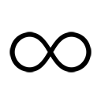、月収０円、なんて状況にたやすく陥る。
マジで、たやすく陥る。
ソースは一昨年の俺。
収入がなくなっても死にゃしねぇ実家暮らしの学生のぶんざいで、背伸びしすぎだと思われてしまうかもしれない。けど、なんとか保護者から自立したい俺にとって『お金』というファクターは、決して無視できないものだった。
『どれもうんこだったよ。いま土曜日だから、週明けまでに新しいの持って来てねー』
ガチャ。
「............」
担当編集からの厳しいお言葉も、この三年で聞き慣れたもんなのだが、これがまあ痛い。
「......ぐすっ......うぐぐ......」
冗談抜きに、お金云々抜きでも、泣くほど痛い。
心臓を大根おろしでゴリゴリやられているかのようだ。
俺には、ボツという台詞が『おまえの子供はデキが悪いから殺すわ』と聞こえる。
わかってくれないかもしれないが。
......よし、あと六回ボツにされたら、こいつを殺そう。必ずや殺そう。
そのくらい黒く思い詰めることもある。
聞いているか？ 蒙昧なる編集者どもよ。ボツとか軽く言ってんじゃねーぞ。
「あー、くそっ！ ちくしょう！ 飯田橋に巨大隕石が飛来して、出版社のビルを粉々にしてくんねえかな！ そうしたらあのムカつくニヤけ面をおがむこともなくなって、さぞかしスッキリするだろうよ！」
メテオ！ バルス！ と呪詛の言葉を叫びながら、スマホをベッドに投げつける。
「やってやる！ 次こそは、絶対面白いって言わせてやるからな！」
俺は泣きながら、机へと向かう。Ａ４大学ノートを広げ、ＨＢの鉛筆で、新たな物語のネタを殴り書く。いまの電話は、週明けまでに企画書なりプロットなりを持ってこいという意味だったのだろうが、また完成原稿を持って行ってやるつもりだった。
そして二日後。
「お、わ、ったぁ」
ノーパソの前で、思いっきり伸びをする俺の姿があった。
あれからほぼぶっ続けて書き続け、ようやく新作の初稿を書き上げたところであった。
達成感は、実のところない。週末はいつもこんな感じだし、必死こいて書き上げたばかりの『この子』が、ちゃんと生きられるかどうか、まだわからないからだ。それに、いまはひたすら頭が痛くて、達成感どころではない。こめかみを指で揉みながら、窓を見る。
「......もう、月曜の......朝か」
カーテンの隙間から、朝日が差し込んでいる。目が痛い。ちゅんちゅんという爽やかな鳥のさえずりが、いまだけはうっとおしかった。
メールに原稿データを添付し、担当編集へと送る。
すぐに返信があった──『お疲れ様です。十八時から、編集部で打ち合わせをしましょう』。
「......自動返信メールかよ」
返事だけは本当に早い。メールを出してから一分もかかってねえ。
「えーっと、ってことは......朝飯作って......学校行って......そんで、編集部行って打ち合わせ......か」
スマホのＴｏＤｏアプリを起動して、今日の予定を打ち込んでいく。
「うしッ！」
俺は、気合を入れて椅子から立ち上がった。
今日も、一日が始まる。
いつもどおりに朝飯を作り、
どんどん！
「はいはい」
いつもどおりに朝飯を、妹の部屋へと持って行く。
いままでと違うのは俺が『妹の正体』を知っている、ということ。紗霧はいま、固く閉ざされた『開かずの間』の向こう側で、一生懸命イラストを描いているのかもしれない。
それはもしかしたら、可愛い女の子のイラストかもしれない。えろいやつかもしれない。
たとえるならば、いとうのいぢ先生と同棲しているようなものだ。
どうだ、すっげーわくわくするだろう？ ドキドキするだろう？
オタクなら、きっと俺の気持ちをわかってくれるはず。
と。
「おっ、これは......」
妹の部屋の前に、メモが置かれていた。
紗霧からのメッセージだ。
引きこもりの妹が、俺に何かを伝えるときは、床ドンの他、メモという形を取ることが多かった。大抵の場合このメモには『買って来て欲しいもの』が書かれていて。
今日のメモも同じく、綺麗な字で『お菓子。そろそろ補充』と書かれていた。
「はいよ、了解」
俺はそのメモを拾い上げて、ポケットに入れる。
先まであった頭痛と眠気は、いつの間にか、すっかり吹き飛んでいた。
放課後、俺は予定どおり編集部へと赴いた。受付でアポイントを取った後、エレベーターで直接編集部へと向かう。エレベーターが九階に到着し、扉が開く。すると、
「なんでダメなのよ！」
言い争いをしている声が聞こえてきた。
うおっ！ なんだなんだ？ エレベーターホールから廊下を覗き見ると、神楽坂さんと、金髪の女の子が向き合って話していた。というか揉めていた。
「私が決めることではないからです」
「待ちなさい！ このわたしが！ オリコン一位のこのわたしが言ってるのよ！」
やかましい女だな。
めぐみの例から、女の子の歳は判断が付きにくいのだが......紗霧よりも一つ二つ上くらいだろうか？
俺は、自分より年下の女の子には興味ないので、そこんところ勘違いしないで欲しいのだが......とんでもなく見目麗しい女の子だ。赤と白を多く使ったフリフリのロリータ服を着ている。真っ白な肌と、金色のロングヘア。何故か耳が長く、尖っている。
仕草がいちいち大げさで、偉そうだった。
向き合う神楽坂さんも負けてはいない。汚い大人代表然とした腕組みポーズで、生意気なガキを見くだしている。
「だから？ そちらで勝手に交渉するのは自由だと言ったでしょ？ なんで私が他社に利するような真似をすると思うんですか？」
「............フフッ、わがままね！ やれやれ、仕方ない......特別にわたしの次シリーズ、あんたのところで書いたげる！ それならいいでしょ！」
「え？ ダメですけど？」
「えっ、なに？ よく聞こえなかったわ。オリコン一位のわたしが、史上最高の美少女ラノベ作家であるこのわたしが、裏切り者の汚名を被ってまで！ この出版社で書いてあげてもいいと言ってるのよ？ こんな破格の条件、これを逃したら未来永劫ないわよ？」
どんだけ自己評価高いんだよこいつ。
「はぁ～......そろそろ帰ってくれませんかね──あっ！」
神楽坂さんの目が、隠れて覗き見ていた俺をロックオンした。
やべっ。
「和泉先生！ お待ちしてましたよ！」
超嬉しそうに俺を呼ばわる。
「さ！ 来て来て！ そんなとこに隠れてないで、こっち来てください！」
......明らかに俺の存在を利用して、このガキを追っ払おうとしていやがるな。
わかっていても、出て行くしかないのが悔しい。
「いまわたしが話してるのよ。割り込まないで頂戴」
金髪超美少女が、高慢ちきに俺を睨む。
「割り込むなって言われても......」
あんなに強く呼ばれて、無視するわけにもいかんだろ。
俺はこの状況の元凶である、神楽坂さんを睨む。
「......あの、どういう状況なんです？」
「というか、こいつ誰？」
俺と金髪娘が、同時に神楽坂さんに問うた。すると神楽坂さんは、俺の質問には答えず、俺と金髪娘を、順番に手で示し。
「こちらは和泉マサムネ先生。で、こちらは山田エルフ先生です」
「「え!?」」
驚きの声が重なる。俺と金髪娘は、お互いの顔を指差した。
「こいつが、和泉マサムネ!?」
「こいつが、山田エルフ先生!? あの売れっ子の!?」
山田エルフ先生というのは、『フルドライブ文庫』という俺とは別レーベルに所属する売れっ子作家だ。かくいう俺も大ファンで、先日サイン本を買ったばかりだ。
最近、彼女の作品は、本屋で『アニメ化決定』の帯とともに平積みされているので、その名前を目にする機会は多かったのだが......。
「こんなに若い女の子だったのか......」
絶対キモオタだと思ってたよ。ハーレム＆ちょっぴりエッチな作風的に。
「あんただって人のこと言えないじゃない。へえ、わたし以外にも、こんなに若いラノベ作家がいたんだ」
「うちのエースがもっと若いらしいけどな──......そんなことより」
「なによ？」
俺は彼女の全身を眺め、それから尖った耳を見つめて言った。
「本当に......エルフ？」
「なわけないでしょ！」
もちろん、わかっちゃいるのだが、華奢で白い彼女の見た目は、ファンタジーに登場するエルフそのものである。
「ま、美しいわたしをエルフと見間違えちゃうのは無理もないわ。『指輪物語』の世界から飛び出してきたみたいだって、そう思ったんでしょ？」
「そ、そうだな」
「そうでしょう、そうでしょう。フッ、よく言われるわ」
本人には言えないが、陵辱系のエロゲーから飛び出してきたみたいだって思った。
「で......その......山田エルフ先生が、なんでうちの編集部に？」
ある意味、敵地みたいなもんじゃないの？
「くふふっ、よくぞ聞いてくれたわね！」
俺の問いを受けたエルフは、マンガだったら集中線が入りそうな見くだしポーズで言った。
「わたしの次回作のイラスト、エロマンガ先生に描いてもらうから！」
「えっ？」
......いま、なんてった、こいつ。
「くふふふ、あのイラストレーター、前からすっっっごく気に入ってたのよ！ あんなにえっちなイラストを描くのが上手いやつ、初めて見たもの！ さすがエロマンガなんて卑猥なペンネームを名乗っているだけのことはあるわ！」
やっぱり卑猥なペンネームだと思っちゃうよな。エロマンガ島から取ってるらしいよ？ 本人曰く。ほんとかどうか知らんけど。
「わたし、作家やイラストレーターに『先生』なんて他人行儀な敬称はつけないんだけれど、エロマンガ先生だけは、最大限の敬意を表してエロマンガ先生と呼ばせてもらうわ！ エロの神──エロ神様と呼んで崇めたいくらいよ」
そんな呼び方したら、ジョイパッドで殴られるぞ。
「いままでコンビを組んでた天才美少女イラストレーター、アルミちゃんも超興奮する全裸を描いてくれるけれど──残念ながらエロマンガ先生には敵わないわね！ わたしは、エロマンガ先生のイラストにベタ惚れよ！ 愛していると言ってもいい！ 名前からして間違いなく描いてる本人はキモオタだろうけれど────この際、どんなブ男でも......たとえオークでも構わないわ！」
......エロマンガ先生、相変わらずひどいイメージを抱かれているな。
バッ！ エルフは格好よく、右腕を横に薙いで、
「あの人に、是非ともわたしの小説のイラストを描いてもらいたいのよ！ あの人に、あのえっちな筆で、世界最高の全裸を描いてもらいたいのよ！ それにわたしの文才が加われば、まさに鬼に金棒！ いまだかつて誰も見たことのない究極のラノベが完成するわ！」
どどーん！
あまりにも自信満々に言うものだから、不覚にもわくわくしてきてしまったぜ。
「フフ......和泉マサムネ。どうやら、わたしの目標が凄すぎて、言葉もないようね？」
まぁ......な。正直、その〝究極のラノベ〟とやらを読んでみたい。
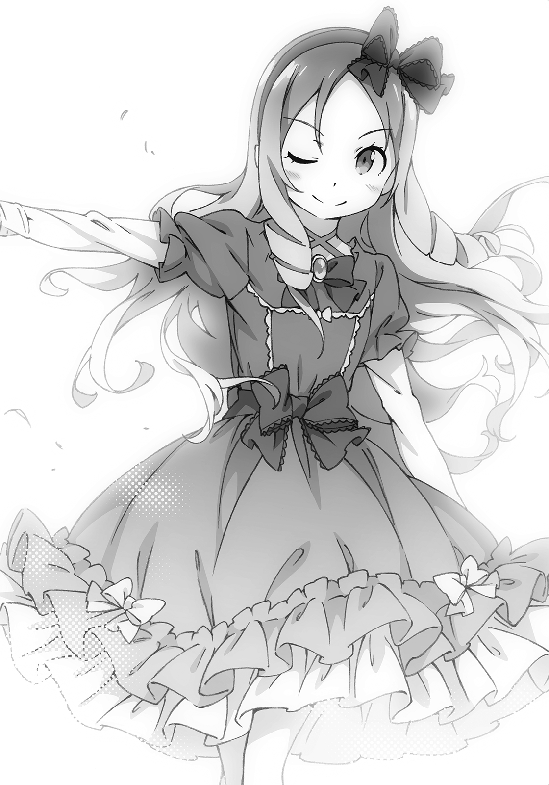
だが、よく考えなくても、こいつの言っていることは、俺にとってひどくまずいのだ。
「そう──それでね。担当編集に頼んで、仕事の依頼メールを送ってあげたんだけど！ ちっとも返事がかえってこないのよ！ このわたしが、オリコン一位であるこのわたしが依頼したっていうのに！ 有り得ない！ きっと──和泉マサムネ！ あんたの新作の仕事をやってるからに違いないとわたしはみたわ！」
紗霧......仕事依頼への返事、してないのか。
それを聞いて、ホッとしたのもつかの間。
「ってわけで、山田エルフ大先生のイラストを描くように、あんたたちからも説得しなさい」
「ちょ！」
なに言ってんだこのアマ！
バッ！ 俺は神楽坂さんを睨みつける。
担当編集はやれやれとばかりに肩をすくめた。
「山田先生、いまから和泉先生との打ち合わせがあるので、もう帰ってくれません？」
「打ち合わせ？ そんなのどーでもいいわ！」
いいわけねえだろクソエルフ。エロゲの世界に帰って、オークとエッチでもしてろ！
だが、例の聞き捨てならない発言については、超気になる。
「エロマンガ先生に、おまえの本のイラストを描いてもらう......だと？」
「そうよ！ あんたみたいな雑魚作家の作品イラストを描くより、この前オリコン一位になったスーパー人気作家であるわたしと一緒に仕事をした方が、いいに決まってるわ！」
どーん！
「ギャアアアア！」
エルフに指を突き付けられ、俺は大きく仰け反った。
た、確かにその通りだ！ と──一瞬でもそう思ってしまったからだ。
エルフは超嬉しそうに、
「ホラホラ！ あんたもそう思うでしょ！ オリコン一位のわたしの方が、デビュー作がアニメ化決定したわたしの方が、ランキング圏外でメディアミックスするわけないあんたよりずっとエロマンガ先生に相応しいでしょ？」
「そこまで言うか！ いくら売れてるからって......！」
「売上は正義よ！ 雑魚が何を言っても、負け犬の遠吠えにしかならないわ！」
どどーん！ こいつの発言、いちいち決め台詞っぽいな。
「うぐぐ......てめえ......覚えてろよ！ 次、本屋でおまえの本を見かけたら......見かけたら......」
「くふふっ！ 見かけたら、どーするっての？」
「また俺の本を上から積んでやるからな！」
「やめてよ！ わたしの本が穢れるでしょう！ というか『また』って!? あ、あんたって人間のクズね！」
ぱかーん。
俺の後頭部に、担当編集からのツッコミが入った。
「山田先生を追い払うために呼んだのに、楽しくお喋りしてないでくださいよ」
くそ......あんたにはいまのが『楽しくお喋り』しているよーに見えたってのか？
「山田先生、何度も言いますけど、そちらで勝手に交渉するのは構いません。決めるのはエロマンガ先生ですから」
「イヤよ。だからー、さっきから言ってるでしょ？ 担当編集に頼んでも埓があかなかったから、このわたしが直々に依頼してあげたってのに、それでもあいつ、ちっともメール返信してこないの！ 連絡とれないの！ 常識的に考えてわたしと組んだ方が得なんだから、あんたたちからも説得してよ！」
「ぷっ、はいはい」
神楽坂さんが、明らかにバカにした顔で含み笑う。
「なにその態度！ オリコン一位のわたしを誰だと思っているのよ！」
「まぐれで売れただけの人だと思っていますがなにか」
「なんですって！ 訂正しなさいよバカ編集！ 我が文才の前にひれ伏しなさいよ！」
「文才って......山田先生の書く小説、文章ひどいじゃないですか。よくまとめサイトとかで、画像付きで叩かれてるじゃないですか」
「ちっがーう！ あれは、すっごく読みやすいように書いているの！ ほんと、何にもわかっていない無能な編集ね！ ふんっ、いい？ 覚えておきなさい！」
エルフは、さらりと金髪をかきあげて、それはもう得意げに語り始めた。
「このわたし、山田エルフが彗星のごとくデビューしてから数年が経ち......わたし以外の全ラノベ作家は、時代遅れのカスとなったわ！ そして！ いまやこのわたしの書く、読みやすくわかりやすい文章が、新しいライトノベルの世界を切り拓いているの！」
すげえこというなこいつ。
エルフは、胸に手を当て、目をつむり、熱っぽく語り続ける。
「......神に選ばれたこのわたしは、行き詰まり、飽和しつつあるラノベ業界のパイを広げ、滅亡の危機に瀕した出版社、この世の不条理に泣く作家たち、そして我が下僕たる読者たちを救済するという崇高なる使命をおびているわ！ つまり、わたしこそがラノベ業界の救世主──────否！」
エルフは、カッ、と両目を見開いた。
「わたしがライトノベルよ！」
どんっ！ 巨大な擬音を幻視してしまうほどの、凄まじい決め台詞だった。
あまりのド迫力に、俺は気圧され、たたらを踏んだ。
すべてを聞き届けた神楽坂さんが、淡々と言う。
「ライトノベルちゃん、早く帰らないと、そっちの担当編集に苦情を入れますよ」
「なっ、ず、ずるいわよ！ そんなの！」
......あ、こいつも担当編集に頭上がらないんだな。
「カウントダウンスタート、10、９、８、７......」
エルフが動揺するのを見た神楽坂さんは、効果ありと判断したのか、カウントダウンをしながら携帯を取り出し、ピピピと操作を始める。
エルフが慌てて言った。
「きょ、今日のところは帰ってあげる！ けど！ 覚えておきなさいよ！ ツイッターでわたしの可愛い下僕達に言いつけてやるんだから！」
痛々しい捨て台詞を残して、ラノベ業界の救世主、山田エルフ先生は去って行った。台風のようなやつだ。作家や編集者全員が、この二人のようではないとだけ補足しておきたい。
手でシッシッとやっていた神楽坂さんが、俺に向き直った。
「さーて、和泉先生」
にやっと笑みを浮かべて、
「まずいことになりましたね！」
「えっ......な、なにがでしょう」
「わからないんですか？ あの難アリ作家が言っていたことは、結構いいところを衝いているんですよ」
「う......ぐ。......わかってますよ」
俺みたいな売れない作家より、売れっ子作家のイラストを担当した方が、エロマンガ先生──紗霧にとっては、いいに決まってる。
どんどん新刊が出て、仕事が入って......うまくいけばアニメ化だってするかもしれない。
もしかしたら、本当に、究極のラノベが誕生するかもしれない。
紗霧は、まだ返事をしていないらしいけど、よく考えれば悪い話じゃないって気付くだろう。
そして、エロマンガ先生は、二シリーズのイラストを掛け持ちするほど、仕事が速くない。
そうなると......そうなると......
「わかってるなら、結構。で、どーします？」
「ああっ、クソ！ 決まってますよ！」
俺のやる気は、このとき──完全に燃え上がった。
「紗霧ィィィ！ 紗霧ィィィ！」
ドンドンドンドンドンドン！
家に帰るや、俺は階段を駆け上った。
『開かずの間』の扉におでこを押しつけ、一方的に話しかける。
「俺、がんばるから！ 絶対あいつより面白い小説、書いてみせるから！ だから......だから......！」
「見捨てないでくれぇぇぇぇえぇぇええええぇぇぇ！」
涙ながらの宣言だった。
それを『開かずの間』の向こうで、妹がどんな顔をして聞いているのか──
もちろん俺には、知るよしもない。
部屋の前で叫んだところで『開かずの間』の扉が開くはずもない。この前開いたのは、あくまで大きなトラブルがあったからこそで......。
俺と妹との関係は、何も変わっちゃいないんだから。
「............はぁ」
自嘲とともに、扉から離れ──
ゴンッ！
「ッ！」
まぶたの裏で星が飛んだ。勢いよく開いた扉が、俺の額をしたたかに打ったのだ。俺はデコを手で押さえて悶え苦しむ。ひとしきり悶えてから、ようやく顔を上げると、
「............なにさわいでるの」
妹の、不思議そうな顔が目の前にあった。
「......あれ？」
なんで開いて......。絶対に開くわけがないとばかり思っていたので、意表を突かれてしまった。このときの俺は、凄く間抜けな顔をしていたことだろう。
「な、んで......？」
「聞いてるのはこっち」
紗霧は無感情にぽつりと言った。
「............」
俺が何も言わなかったので、紗霧はもう一度聞いてくる。
「..................見捨てるとか、なんとか......なんの話？ 怖い夢でも見たの？」
初めて聞くくらい優しい声だったので、俺はすぐに返事ができなかった。
「い、いやっ」
さっき叫んだのは、あくまで一方的な宣言だったからこその台詞で、だな......。
本人を目の前にして、『あいつにおまえを渡さない！』なんて言えるわけないだろうが！
恥ずかしいっ！
「な、なんでもねーよ！ 忘れてくれ！」
俺は、そでで涙のあとを拭って言った。
「そ、それよりっ！ おまえこそ......どうしたんだ？」
「え？ ......どうしたって......なにが？」
「なんでいま、扉を開けてくれたんだ？」
いままでだったら、どんなに騒いだって決して開けてはくれなかっただろうに──
「......あ」
紗霧は、ぽかんと口を開けた。『言われて初めて気付いた』とばかりに。
ほんのりと頰が、赤くなっているようにも見える。
俺はもう一度問う。
「なんでだ？」
「............え、えっと」
紗霧は俺から目をそらす。くしゃりとパジャマの胸部分を摑む。どうやらこれは、緊張したときの癖らしい。
「えっと......その......えっと」
「..................」
しばし、無言のときがあって、
「し、しらない......」
「おい、そこ重要なとこだぞ」
いままでは開けてくれなかったのに、いまは開けてくれたのだから。
実際、ほんの数日前。めぐみが来たときは『開かずの間』が開くことはなかった。
『いままで』と『今』。ほんの少しの短い期間で、いったい何が違ったんだろう。
俺たちの関係は、変わっていないはずなのに。
「しらないったら......しらない」
「？ もう少し大きな声で頼む」
「な、なんでもないって言ってる。じ、じ、自分だって......」
自分だって言わなかったんだから、お互い様。
と言いたいらしい。焦ってるわ、喋り慣れていないわで、嚙み嚙みになっていた。
「それを言われると辛いな。......じゃあ、俺が言ったら、言うか？」
「......い、言わない。だって、しらないし」
これはダメだな。いくら話しても埒があかないパターンだ。
「......わかったよ。お互い様だもんな」
理由はわからないが『開かずの間』の扉を、もう一度開けることができたんだ。
その事実だけで、じゅうぶんとしておくさ。『開いた理由』は気になるが。
俺が引き下がると、紗霧はもごもごと口ごもり始める。
「......ね、ねぇ......」
「ん？ どうした？」
「............兄さん......その............あの女から......なにか、聞いた？」
「あの女って......めぐみのことか？」
どうしていきなりその話が出てくるのだろう。
「なにかって？」
「......な、なんでもない」
そう言いつつ、紗霧は明らかにホッとした様子だった。
俺が問い返そうとするのを遮るように、紗霧が早口で言う。
「そ、そうだ！ それより！ 頼んでおいたお菓子は買ってきてくれたっ？」
「お菓子って......メモで頼まれてたアレのこと？」
「......う、うん......いま開けたのは、それを受け取るためだから......ほかに、ないから......」
「......そう、だったのか......？」
紗霧は『開かずの間』をうっかり開けてしまうくらいに、俺の買ってくるお菓子を熱望していたってことか？ なんかそれもしっくりこないが。
もちろん俺が、妹との約束を破るわけがない。
「ほら、買って来たぞ」
俺はビニール袋を、妹に向かって差し出した。
今回俺が買って来たお菓子は、にっき飴と落雁だ。日本情緒溢れる、和泉正宗、渾身のセレクションである。自分で食べてしまいたいくらい、どちらも好きなお菓子だった。
兄の愛がたっぷりこもったお菓子を受け取った紗霧は、ビニールの中を覗きこんで──......
「............はぁ」
眉をかすかにひそめ、実に微妙な顔になった。
「どうした、紗霧？」
「......いい機会だから言っておくけど......兄さんの買ってくるお菓子って、どれも仏壇のお供え物みたいでいまいちおいしくないの。がっかりお菓子はもう買ってこないで」
「そんなら自分で買いに行きなさいよ！」
つい、オカンみたいなツッコミをしてしまった。
この後、紗霧は『開かずの間』の扉を、ときおり開けてくれるようになった。
といっても。本当に、たまに、だけどな。
「そ、それと......これからは、自分の下着は自分で洗うから。兄さんは絶対に触らないで」
そんな......いったい何があったというんだ。
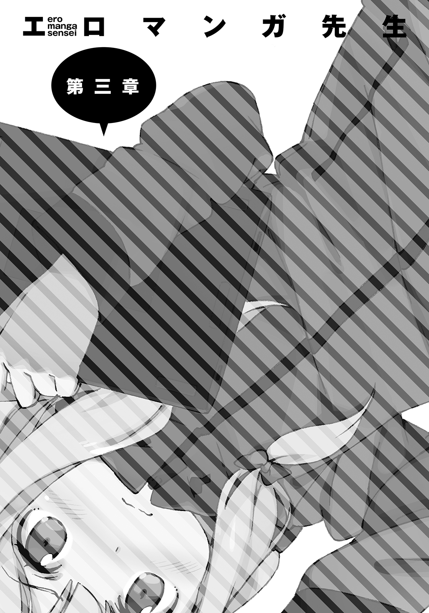
山田エルフと遭遇し『あいつよりも面白い小説を書いてやる！』と息巻いたあの日から、数日が経っていた。今日は平日、俺は今日も今日とて、家事学校仕事の三連コンボで一日を終える腹づもりだったのだが......。
ピンポーン。
放課後、帰宅した俺が仕事に取りかかろうとしたところで、邪魔が入った。
ちなみに俺は、電話着信音と、スマホのメール着信音と、インターホンの音が、先に挙げた順に嫌いである。死の宣告かもしれんと思うと、気が気でなくて、音を聞くたびビクッとなるのだ。......俺だけかもしれないが。
「はーい」
ともあれ俺は、インターホンの音にやや気を悪くしながらも、玄関へと向かった。
ピンポンピンポンピンポンピンポン！
「こ、このウザいピンポン連打は......」
開けるまでもなく、誰が来たのかわかった。
「いーずみちゃーん！ あーそーぼーっ！」
「いーやーよー」
ガチャ。俺は玄関扉を開けながら、めぐみにそう言ってやった。
そう。扉を開けた先にいたのは、セーラー服姿の茶髪美少女、神野めぐみであった。
めぐみは頰を、ぷぅ、と膨らませて、
「なーんでおにーさんが出てくるんですかぁ」
「なんの用だ？」
めんどくさいので、さっさと本題に入る。
「なんの用って......新しいプランを持ってまた来るって言ったじゃないですか」
確かにそう言ってたはいたが、思いの外はええ。リア充の行動力をあなどっていた。
「......プランの内容は？」
どうせろくでもない内容なんだろ？ 期待せずに聞いてみた。
めぐみは、ふふーんと得意げに微笑して、俺に抱きついてきた。
「おっと」
回避。
「なんで避けるんですか!? あたしの挨拶のハグを！」
他の男だったなら、ありがたく抱きつかれてデレデレしていたシーンかもしれない。
俺には効かんがな。
「......いや、玄関で女の子と抱き合ってたとか、近所の噂になったら恥ずかしいし」
めぐみは、やおら顔を伏せて、
「ちっ......この童貞が」
「......おい、いまとんでもないこと呟かなかったか？」
「え？ 気のせいじゃないですかぁ？ それよりも、プランの内容ですけど」
めぐみは、くるりと背後を向いて、
「みんなー」
と、呼ばわった。
......え？ みんな？ みんなって──
俺の当惑をよそに、目前で状況が展開していく。和泉家の玄関先、門柱の後ろからズラリと現われたのは────
「「こんにちは」」「「ちーっす」」「「一年一組、クラス一同です！」」
「帰れ」
俺は冷淡に告げた。
「「「えーっ！」」」
声を揃えてびっくりする、中坊×二十以上。
どうやら俺の視界外にもいやがる。
「『えーっ』じゃない！ オイめぐみ......てめぇ何してくれてんだよ」
「なにって、プランＢですよ？ ほんとは学年全員で、和泉ちゃんちに応援しに行こう──って計画だったんですけどぉ。さすがにそれは無理だったので、クラス一同で来ちゃいました、えへ♪」
『来ちゃいました』じゃねぇよ......。ほんとこっちの想像を悪い意味で超えてくるやつだな。
「なに怒ってるんですか、おにーさん？ こーやってクラスのみんなで集まって」
めぐみ＆中坊どもは、紗霧の部屋がある二階の窓めがけて、声を張り上げた。
「「和泉ちゃーん！」」「「早く学校きて────っ！」」「「和泉ちゃーん！」」
「「みんな、待ってるよ─────────っ！」」
「ってやれば、和泉ちゃんだって超感激して学校に──」
「行かないって！ むしろ布団被って寝込んじゃうよ！ マジでやめろ！ おい、そこのおまえら、深く息を吸い込むんじゃない！ これ以上追撃するな！ もう紗霧のライフはゼロなんだよ！」
俺は必死に止めた。
めぐみは、不思議そうな顔をしながらも、仲間に指示を出す。
「みんな、すとーっぷ」
その声で、悪霊を除霊する般若心経のごとき『和泉ちゃん、学校いこー』コールが止まる。
「どういうこと？ おにーさん」
「おまえらほんと、なんもわかってねぇな！ 逆効果百パーセントだよ！ もう帰れ！」
「はぁい。みんな、かえってー」
「「さよならー」」
中坊どもが、ずらずらと帰っていく──前に。
「今日は、ありがとー。また明日学校でねー」
「へーい♪」「へーい♪」「またねー」「うぇーい♪」「うぇぇーい♪」
ハイタッチしたり、手を振ったり......別れ際まで、独特のリア充空間を作り出していやがる。
話は変わるが、この『うぇーい♪』という発声を、俺は『リア充の鳴き声』と呼んでいる。きわめてファジーな意味合いの言葉で、挨拶や返答など、多岐にわたって使われるらしい。
アフリカあたりの部族が使う謎の掛け声みたいなもんだろうか。
「おにーさんもばいばーい」
「ハイハイ、うぇーいうぇーい」
俺は棒読みで、中坊どもとハイタッチを交わすのであった。
なにこの謎のノリ？ こいつら毎日こんなことやってんの？ 理解できんな......。
中坊どもが、めぐみ以外全員帰っていったあと。
「ずいぶんと素直に帰したな」
「だっておにーさん、ほんとに怒ってるみたいなんですモン」
その察しのよさを、プランを考える段階で発揮してくれねぇかな。
「というか、おまえにも『帰れ』って言ったつもりだったんだが」
「すぐに帰りますよ。その前に、はい、コレ」
めぐみがプリントの挟まった板を渡して来る。
「回覧板です」
「回覧板？ なんでおまえが持ってくんの？」
「門の前に置いてあったんですよ──なんで直接届けに来ないんですかね」
「......あー、それは、あれだ」
......こいつに話していいもんかどうか、迷ったが、これでうちに寄りつかなくなるなら、それはそれで構わない。悪いヤツじゃないし......大丈夫だろ。
「このあたりが、呪われてるとかいう噂があるからだな、たぶん」
「呪いですか？」
きょとん、とめぐみは首をかしげる。
「不幸が続いてるってこと。うちもそうだし......お隣さんも」
俺は我が家の隣家をみやった。そこには、下町には似つかわしくない、綺麗な二階建ての邸宅がある。和泉家と同様、二階にベランダが見える。
「昔、偉い作家さんが住んでたんだけど、病気で亡くなっちまったんだってさ」
かなり昔のことらしい。いまは、電気もガスも通っていない空き家のはずだ。
「空き屋とは思えないくらい綺麗なもんだろ？ 遺族の人が管理してるんだと」
その作家さんは『古めかしい洋館』と『白い服の少女』が出てくる作品を書いていた。
名前を出せば、皆が知っているような名作だ。だからこその悲劇というか、なんというか。
「夜な夜なピアノが鳴るとか、白いドレス姿の幽霊が出るとか、悪い噂が流れて......いまは幽霊屋敷なんて言われてる」
親父がここに家を建てたとき、すでにその噂は流れていた。親父もお袋も、噂なんてまったく気にせず『安く買えてラッキー！』って思ったんだと。結果的には、ああいうことになってしまったわけだが、俺はこの件を『呪い』と関連づけるつもりはない。超常現象なんぞ、創作の中だけでじゅうぶんだっつーの。
「昔からある、どこにでもある類の噂だったんだけどな。一年前の件で、再燃しちゃってるわけよ」
直接なんか言われるよーなことは、さすがにないけど。幽霊屋敷と和泉家は呪われし場所として、ごく一部のご近所様から怖がられちまっているようなのだ。
そんなわけで、道を挟んだお向かいさんは、回覧板をまわす際、俺に直接渡さず、うちの門前に置いていく。
「なるほど、幽霊屋敷ですかぁ......白いドレスの幽霊......」
めぐみは、興味なさそうに言った。続けて彼女は、幽霊屋敷の二階の窓を指差す。
「って、アレのことでしょうか？」
「やめろよそういうの！」
バッ！ 俺は勢いよく後ろを向いた。
めぐみが指差していたあたりをせわしなく見回す──が。
「いねぇじゃねーかビックリさせやがって！」
「ちょうどいま、カーテンに隠れちゃいました」
「あのな、めぐみ。冗談でも言っていいことと悪いことが......」
「いやいや！」
めぐみは両掌を前で振って否定を示す。
「さすがのあたしも、このシチュで冗談なんか言いませんて！ それにあたし、ウソは滅多に吐かない女ですから！」
たまには吐くってことじゃねぇか──しかし。
ウソを吐いている様子ではない、か。俺の見立てなんざ、節穴もいいところだが。
なんだかんだいって俺は、こいつを『いいやつ』だと認識しているのだ。
疑えるわけもない。
「おまえがウソを吐いてないってんなら......見間違いだよ」
「............そうだといいですね、ほんとに」
同情的な声色だった。
めぐみが帰っていったあと、俺は『学校来て来て和泉ちゃんコール』による紗霧の精神ダメージを確認するため『開かずの間』に向かう階段をのぼっていた。
俺が引きこもりだったなら、めぐみたちの『プランＢ』はオーバーキルにもほどがある所業だったので、兄貴として一声くらい掛けてやるべきだろう。
「まったく、めぐみのやつ......変なこと言いやがって」
こちとら幽霊なんて信じてないが、めぐみの証言は信じているのだ。
隣の家に、白いドレスの女がいた──少なくともめぐみにはそう見えた──
「ちょっと怖くなってきちゃったじゃないか！」
とか言ってる間に『開かずの間』に到着。俺はノックをしてから声を掛ける。
「おーい、紗霧～。大丈夫かー」
..................。
返事はない。......こりゃ、クラスメイトへの恐怖で、布団を被って震えてんのかな。
トラウマにならなけれりゃいいけど。......うーん、どうしたもんかな。
「あったかいココアをいれてやるから、ちょっと待ってな」
くるりと踵を返そうとしたところで、
ばんっ！ ごすっ！
またしても急に扉が開き、今度は俺の側頭部を強打した。
「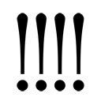 ......お、おま......おまえってやつは......おまえってやつは......！」
俺も俺だよ！ いったい何度同じ攻撃を喰らい続けるつもりなんだ！
いい加減キャッチしたいのだが──なかなか先人のようにはいかないな。
「......どうした、紗霧。急に開けたりして」
俺は側頭部をおさえつつ、何事もなかったかのようなカッコいい声を出した。
そうしたら、驚くべきことが起こった。
「──────」
紗霧が、俺の手を引き、部屋の中に引き摺り込んだのだ。さらに、俺の腰に手を回して、抱きついてくる。
「ッ！」
「な、な、な......」
かすかな胸の感触が......！ 比喩ではなく、目の前が真っ赤になった。あまりのことに、急速に頭に血が上り、くらくらしてしまう。なんとか声を絞り出した。
「ど、どど、どうしたんだ？」
「......！」
紗霧は答えず、さらにギュッと腕の力を強める。当然俺はさらに混乱し──
「............お兄ちゃんに惚れたの？」
ゴスッ！ ジョイパッドが俺の顎をアッパー気味に撃ち抜いた。
「ど、どっから出しやがったそんなもん！」
「ちが......！ ......れい......が」
「な、なんだって？」
「......幽霊......」
幽霊？ なんで、紗霧がいまその話題を？ 俺とめぐみの会話を聞いていた？
だとしても......ど、どうやって？ ここは二階で──大声で話していたわけでもない玄関先の会話が、聞こえるわけがない。俺は、ひとまず問題を棚上げにした。
「幽霊が──どうした？」
「..................」
「大丈夫だ。兄ちゃんがついてる」
俺は頼りにならない兄貴だが、なるべく安心させようと優しい声で言い聞かせる。
すると紗霧は、俺の腕の中で、ぽつぽつと呟き始めた。
「その......布団を被ってフテ寝しようとしてたら............ピアノの音がするの」
「ぴ、ピアノの音？ いまも？」
俺の問いに、紗霧はこくんと頷く。
「......隣の......家......から」
「いや、だってあそこは......」
誰も住んでいないはず。それに、まだ夜にもなっていないってのに、幽霊なんか......。
「......わかった、信じる。ちょっと待てよ」
俺は目をつむって耳を澄ます。
......まず、聞こえてきたのは、ドキドキと拍動する自分の心臓の音だ。そして......ゲッ！
「聞こえる！ ピアノの音だ！」
「で、でしょ？」
紗霧は、震える指で、ベランダを指差した。そこにはパステルカラーのカーテンがかかっている。カーテンの隙間から、薄暗い室内に、夕方の朱が差し込んでいた。
「......ベランダから......何が見えた？」
ぶるぶる、と、首を横に振る紗霧。......言うのも怖いって感じだな、こりゃ。
し、仕方ねえ！ 俺は紗霧の手を引いて、ゆっくりとベランダへと近付いて行く。
依然として、ピアノの音が聞こえてくる。
「い、行くぞ......？」
ちらりと紗霧の顔を見ると、泣きそうな顔でこくこくと頷く。
「よ、よし......」
俺はカーテンに手を掛け、ざぁっ！ 一気に開いた。
幽霊屋敷のベランダが、すぐ近くに見える。さっき、めぐみが指差した場所だ。
幽霊らしき人影はない。が、ピアノの音が大きくなった。
......やはり、隣の家から聞こえてくる。
「......隣の家の......どこから聞こえてくるんだ？」
ぱっと見、異常（幽霊とは言いたくない）は見あたらないが......。
「......に、兄さん、あ、あそこ......」
「えっ？」
紗霧の指先を目で追って──見てしまった。
斜め下、一階......カーテンの隙間から覗く、白い人影を。
「きゃああああああああああああああああああああああ！」（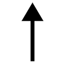俺の声）
「ッッッッ！」
俺たち兄妹は、たまらず抱き合い震え上がった。あんまり慌てていたものだから、妹と抱き合っていたというのに、まったくこのときのことを思い出せない。
「......ゆ、幽霊......よね？」
「い、いやっ......そんなわけが......」
「............見てきて」
「えっ？」
「......見てきて、兄さん」
「......冗談だろ？」
おっかないんですけど？
「見てきて。なんだかわからないと、怖くて絵が描けない」
......怖くて絵が描けないのか。じゃあ、仕方ないな。
「わかった、待ってろ」
俺は、妹を部屋に残し、一人『幽霊屋敷』へと向かった。
玄関を出て、回覧板を手に、一歩ずつ隣家の門へと近付いて行く。黒い鉄製の門を開けると、きぃぃ......という悲鳴のような金属音が鳴った。
「......ごくっ」
隣家の敷地へと足を踏み入れた俺は、邸宅を見上げる。綺麗に清掃されているのに、妙な迫力があった。
回覧板を持って来たのは、もしかしたら誰かが引っ越してきたという可能性があるからだ。それと、誰かに不法侵入を見とがめられたときの言い訳用でもある。
「......幽霊じゃありませんように。幽霊じゃありませんように」
ぶつぶつと唱えながら、問題の窓へと近付いて行く。
「ここ......だったよな。さ、さて......行くぜ！」
俺は気合を入れて、カーテンの隙間を覗き込んだ。
「──────────────なっ」
俺は息を吞んで硬直した。
幽霊の......正体見たり枯れ尾花。
山田エルフ先生が、全裸でピアノを弾いていた。
ピンポーン。
俺は、幽霊屋敷の正面へと回り込んで、インターホンを押す。
ピンポーン。もう一度、ピンポーン。
まぁ、服を着る時間もあるだろうから、三回も押せばいいだろう。
しばし待つと、やがてインターホンのスピーカーから偉そうな声が聞こえてきた。
『誰！ 原稿ならないわよ！』
......この台詞だけで、こいつのイヤな日常が垣間見えてしまうな。
せめて相手を確認してから言えよ。......俺は無表情でこう返事をした。
「回覧板でーす」
『はあ？ ......なんだ......そのへんに置いておきなさい』
こいつ、良好なご近所付き合いをするつもりないだろ。てか、そもそもなんでこいつがここにいるのかもわからん。......うーん。
「山田さーん。ちょっとお伺いしたいんですけど、なんではだかでピアノ弾いてたんですか？」
『な！』
ぶちんっ！ がたんっ！ どんどんどん──ガチャ！
「こんの覗き魔ぁ──っ！」
本人が玄関から飛び出してきた。はだかではなく、この前編集部で見たのと同じような、ロリータ服を着ている。箒を振りかぶって走り寄ってきた彼女は、俺の顔を認めるや、目をまん丸に見開いた。
「って、え!? 和泉マサムネぇっ!?」
「ども」
俺は半目で右手を挙げた。
「なにコレ！ どういうことよ！」
「それはこっちの台詞だ。なんでおまえがこんなとこで、はだかになってるんだよ」
「あ、あれは！ あれは──」
「あれは？」
「趣味よ！」
どどーん。なんでこいつはいちいちカッコいいポーズを決めるのか。
......しゅ、趣味......？
かなり動揺していた様子のエルフだったが、すぐにいつもの調子を取り戻し、むしろ誇らしげに言う。
「お風呂上がりに全裸でピアノを弾いていると────幸せな気持ちになるでしょう？ 素敵な物語が浮かんでくるでしょう？」
「や、やったことないから......」
「ぜひやってみなさい！ オススメよ！」
もしかすると、あまり考えたくないが......さっきのアレがこいつなりの、ネタ出し方法だったり......するのだろうか？ だとしたらあまり責められない......のかも。ずっと仕事していると頭おかしくなってくるのは、この仕事、よくあることだし。
俺は、精神に異常をきたしている同業者に、優しくこう言った。
「今度からは、ちゃんとカーテン閉めてやれよ。外から丸見え痛い！」
箒で顔を突いてきやがった！
「あんたこそ！ な、なんでこんなところで覗きしているのよ！ 完っっ全に油断したわ！ 扇風機の風でカーテンがめくれていたなんて......！」
ばふっ！ ばふっ！ と、箒の穂先で連続突きを放ってくるエルフ。その顔は真っ赤になっている。露出狂の変態かと思いきや、羞恥心はあるらしい。
「誤解だっつうの！ 回覧板届けにきたって言ったろ！ 俺んち隣なんだよ！」
「そ、そんな偶然──」
俺は無言で一歩さがり、和泉家の表札を指差した。エルフはそれをチラ見してから、
「──あったとして！ 美少女のはだかを覗くなんて最低ね！」
「好きで覗いたわけじゃねーよ！ これには深いわけがあってだな......！」
俺は、この家が幽霊屋敷と呼ばれていること、白いドレスの幽霊やピアノの音が聞こえるといった怪現象が噂されていること......そして、さっきこの家からピアノの音が聞こえてきて、それを調べるために仕方なく覗いたこと──など、事情を話して聞かせた。
「ってわけだ」
「......ふ、ふうん。そうなんだ。わかったわ！ 事故ということで納得してあげる！ だからあんたも、さっきのは忘れて頂戴！」
エルフは箒を投げ捨てる。まだ顔が赤い。こいつ、いつも興奮してんな。
「了解だ」
俺としても、この気まずい状況が継続されるのは困る。
雰囲気を切り替えるべく、自然な口調で問うた。
「おまえこそ、なんでここにいるんだ？」
「アニメの脚本会議に参加するために、つい最近越してきたの」
「そんなのあるのか」
「ほら、アニメの制作会社って、たいてい東京にあるじゃない？」
いや、しらねえけど。
「わたしみずから、毎週打ち合わせに出向かなくちゃいけないのよ。素敵なアニメを作って、世界を救済するために......ね」
「なんか、大変そうだな」
「まあね～♪ でも、わたしはアニメ化作家だから、仕方ないのよ！ アニメ化作家だから！」
いかん、調子こかせてしまったか。
アニメ化決まった作家って、ほんと口を開けばアニメアニメアニメアニメ......。
浮かれやがって。
「アニメ化が決まってから物件探しを始めたから、既存の住宅を買い取る形になってしまったけれどね。ちなみに、アニメ化フェアの印税を当て込んで、キャッシュ一括で、そう......アニメ化キャッシュ一括で購入したのよ！」
「い、一括で家買ったの!?」
我が家は親父がローンでひーひー言ってたってのに......これがアニメ化の力か！
「そう！ アニメ化キャ～ッシュ一括よ！ 当然でしょう！ アニメ化作家なんだから！」
エルフはニヤニヤと調子こいた口調で、
「くふふふ......十四歳でぇ、都内一戸建て買っちゃうってやばいっすか？」
くそ！ ぶっ殺したい！
「ビッグなわたしだからこそできる偉業よね！ それと、我が下僕たちが、わたしの本をたくさん買ってくれたからかしら？ くふふ、いい子たちでしょう？ 羨ましいでしょう？」
「羨ましいよ！ でもなあ、俺の読者たちだって、おまえよりは少ないかもしれないけど、毎回毎回、見つけにくい棚から、俺の本をちゃんと見つけて買ってくれてるんだぞ！ 入荷してる本屋さんだって少ないのにだ！ いつもファンレターを書いてくれてる子だっているんだぞ！ おまえのファンに負けてないんだぞ！ 舐めんなよ！」
悪いがこればかりは熱く反論させてもらう！
「......そこまで怒ることないじゃない。悪かったわよ」
「わかればいい」
「ふん、うちの子たちの方がずっと忠誠度高いけどね」
忠誠度て。こいつは読者をなんだと思っているんだ。
「......ちなみにここ、幽霊出るらしいぞ」
悔し紛れの一言を放ってはみたものの、エルフはまるで堪えなかった。
「はっ、幽霊なんているわけないでしょ！ もしもほんとにいたら、小説のネタにしてやるわ！」
たくましいやつだ。さすが売れっ子作家様だと言っておこう。
「そ・れ・よ・り・も！」
エルフはその場で、踊るようにまわった。バッ、と、片手で家を指し、
「どう！ この、天才美少女ラノベ作家、山田エルフ様の居城は！ 褒めたたえてもいいのよ！」
どうって言われても......前から隣にあるしなぁ......。
「まぁ、綺麗な家だよな」
「そうでしょう！ クリスタルパレスと呼んで頂戴！」
自宅にラストダンジョンみたいな名前をつけてやがった。
さすが売れっ子作家様の感性は一味違うぜ。
エルフは、ちらっ、ちらっ、となにか言いたげにこちらを見ながら、
「和泉マサムネ。どーしてもっていうなら............我が居城、クリスタルパレスに足を踏み入れる栄誉を与えてあげてもいいわよ？」
間違いなく、同業者に新居を自慢したいだけじゃねーか。
「おまえんちか......正直、興味はあるな」
作者本人に対しては、好感度がガンガン下がっていっているが、俺は山田エルフ先生のファンなのである。どんな家に住んでいるのか、どんなところで仕事をしているのか、見てみたい。
それに、ひょっとしたら......売れっ子作家の家を見ることによって、何か『売れるための秘密』みたいなもの......そのヒントくらいはつかめるかもしれない。
「そうでしょう？ そうでしょう？ くふふふ......オリコン一位の売れっ子作家様が住む居城に、興味あるでしょう？」
「わかったわかった」
こいつがどういうやつなのか、段々と理解してきた。
俺は溜息を吐きつつ、幽霊屋敷改めクリスタルパレスへと入っていくのであった。
クリスタルパレスとかいう大げさな名前とは裏腹に、わりと普通の家屋だった。間取りはほぼ我が家と同じで、入ってすぐに階段がある。幽霊屋敷のイメージを引き摺っているせいもあるのだろうが、やや暗いような気がした。
「光栄に思いなさい！ あんたが我が城の、ひとりめの客よ！」
「......そ、そうなのか」
俺がひとりめ？ あるのか、そんなこと......。
なんか......こいつも特殊な事情を抱えていそうだな。
「お邪魔します」
靴を脱ぎ、一歩踏み出すと、ぎしりと床が音を立てた。
「..................」
「どうしたの？ こっちよ？」
「お、おう。......この家、大丈夫なのか？ ギシギシいってね？」
「失礼ね。偉大な作家が住んでいた伝説の邸宅で、耐久性にも問題はない──って、不動産屋が言ってたわ。それに、この趣のあるところがいいのよ」
不動産屋に適当なこと言われて、ぼったくられてるんじゃねーの？
おまえが気に入ってるなら、いいけどさ──と、納得しかけた瞬間。
ぎぃぃぃぃ。
「ひいっ」
俺は、びくっと肩を震わせてしまう。青ざめた顔で呟いた。
「............なにいまの？ ポルターガイスト？」
「家鳴りよ、家鳴り。フフッ、臆病ね──和泉マサムネ」
......思うに、こいつの服装がまた、このシチュエーションの恐怖を増幅しているんだよな。
俺が通されたのは、洋風のリビングルームだった。かなり広く、軽く十畳以上はありそうだ。液晶テレビとテレビ台があり、テレビ台の中には、ゲームソフトやハード、アニメのＢＤなどが収まっている。フローリングに、赤い柄物の絨毯が敷かれていて、その上にガラスのローテーブルが置かれていた。その上にはノートパソコン。その脇には白い座椅子。
「ここで仕事してるのか？」
「普段は二階の仕事部屋で書いているわ。ずっと同じ場所で仕事をしていると飽きてくるから、ここで書くときもあるけれど」
「へえ」
それがこいつなりの気分転換なんだろう。
「適当に座って頂戴」
「............」
俺はローテーブルの脇にあぐらをかいて座った。さすがに一つしかない座椅子を使う気にはなれない。腰を下ろすや、俺の視線は、部屋に入ったときから気になっていたある場所に惹き付けられる。
──ピアノである。それと扇風機。
「............」
「あ、あんた、ピアノ見てなに想像しているのよ！」
お茶を持って来たエルフが怒鳴る。
「してねえよ！ もう忘れたっつうの！ むしかえすな、自意識過剰め！」
がちゃん！ エルフは、お盆をローテーブルに叩き付けるように置く。
「自分で言っておいてなんだけど、そう簡単に忘れられるわけないでしょ！ このわたしの、聖なる全裸を！」
聖なる全裸ってなんだよ。
「そういえば、おまえって初めて会ったときから全裸全裸やかましいよな──全裸教の全裸神でも崇めてるわけ？」
「雑魚作家にしては、なかなか的を射た比喩ね」
嫌味で言ったのに、的を射てしまったか......。
「そう！ 全裸こそ、神が人に与えたもっとも自然な衣服！ 全裸以上に素敵な服装などありはしないのよ！」
全裸教の教えは、想像以上に気色悪かった。
「ああ......だからおまえの作品、ヒロインが次々に全裸になっていくんだ......？」
「ええ！ 素敵でしょ！ 読者も大喜びよ！」
ばんっ！ 俺はローテーブルをブッ叩いた。
「な、なによ......？」
エルフがびくっと肩を震わせる。俺はこう言ってやった。
「おまえ......おまえ......！ ラブコメってもんを、まったくわかってないよ！」
「あんた何様!? わたしの作品、あんたの百倍売れてるんですけど！」
ブチキレるエルフ。
いくらなんでも百倍は盛りすぎだろ。せいぜい十倍くらいじゃねーの？
もの凄い差があるのは事実だが、
「は、だからどうした。売れてりゃ偉いのかよ」
「もちろん偉いに決まってるわ！ 売上とは、作家の戦闘力よ！」
はっきり言いやがった。
「その考え方は好きじゃねーな。つーか、はだかなんてある意味一番ドキドキしない服装だろ。ぱんつ丸出しがパンチラよりもえろくないのと同じ理由でさあ」
「そっちこそわかっていないわね！ だからこそわたしの文才とイラストレーターの腕の見せどころなんでしょうが！ だいたい男読者なんて、あんたが言うほど潔癖じゃないし！ 男なんて、エロの力の前には無力よ！」
幻想的な見てくれで、俗物丸出しの台詞を吐きやがって。
ファンに向かってそういうこと言うなよ。
「そんなことねえって！」
少なくとも俺は、エロいシーンが多いからおまえの本のファンやってるわけじゃない。
それに、男の子ってのは、好きな女の子のはだかだからこそ見たいんじゃないの？
バンバン脱がしていいわけじゃないと思うよ、俺は。
「バーカ！ わたしの下僕たちにはちゃーんとウケてるんだから、そんなことありますぅ」
「そんなことありません！ おまえの作品の一巻で、メインヒロインを初登場した直後に全裸にしやがったのは、いまでもクソだと思ってますぅ」
「はあああ!? 究極にエロくて萌える名シーンじゃない！ 森の掟で、異性に裸体を見られたら貞操を捧げなくてはいけないというメインヒロインの設定を、最大限に活かす展開だったでしょうが！ ──はっ！ で、でも、わたしの貞操はあげないからね！」
「いらねええええええええええええええええええええよ！」
ほんとウゼーなこの女。自分の小説の設定と、現実を混同するんじゃない！
「な......んですってぇ！ この超美少女ラノベ作家様に対してなんて口を......！ オリコン一位のわたしに、なんて口を利いてくれるのよ！」
「オリコン一位オリコン一位うるせーんだよ。他のランキングではワ●ピースに完敗してたし、今週のオリコンでソードアート・オンラインに抜かれたんだから、もう一位じゃないだろ？」
「ぬぐッ......!?」
痛いところを衝かれたとばかりに、胸を押さえるエルフ。
冷や汗を額に貼り付けながらも、強がった口調で、
「......フフ......礫め......少しは成長したようね......。まぐれとはいえ、オリコンでわたしに黒星をつけるとは......まぐれとはいえ......さすがはわたしが認めた小説家よ......」
なんでてめーが川原礫先生の師匠気取りよ。今週十四位くらいのくせに。
「まっ！ 『わたしのアニメ』が始まれば、ブルーレイが一〇〇万枚くらい売れて、原作も部数が三百倍くらいになって、ソードアート・オンライン程度相手にもならないんだけどね！ 近い将来、わたしが電撃文庫をぶっ倒す前の......そう、中ボスみたいなものかしら」
は、早くこいつを黙らせないと......。
ハラハラと見守っていると、エルフはさらに調子こいたことをほざきはじめた。
「そして、ワ●ピース......さすがは我がライバル......ぎりぎりの惜敗だったわ。今回は大人しく負けを認めましょう。......ぎりぎりの惜敗だったけれどね......」
「おまえ風にいうと、ワン●ースの戦闘力は現時点で三〇〇〇〇〇〇〇〇だぞ」
「..................」
エルフは沈黙した。
「......あ......ああ......あ......」
真っ青な顔色でガタガタ震えている。この圧倒的な戦力差に、戦意を保てるわけがない。
「しかも、ワ●ピースの発行部数は、これからまだまだ増える。......この意味がわかるな？」
改めて数字にしてみると、マジでやべーな。
創作じゃない現実の数字なのに、どんなマンガのラスボス演出よりもずっと恐ろしいもの。
「......あれっていま何巻くらい出てたっけ？」
「七十巻くらいじゃね？」
「............」
エルフは、折り曲げた人差し指を下唇に当て、しばし考え込み......
ぱっと表情を輝かせた。
「なーんだ！ たいしたことないじゃない！」
ちょ！ コイツ！
「ワンピ●スも意外にショボいわね！ 七十巻近く出ててその程度なんでしょ？ わたしがそのくらいの巻数出すときは、余裕で抜いているに違いないわ！」
「......正気で言ってるのか？」
三〇〇〇〇〇〇〇〇がショボいわけねーだろ。
そもそも小説媒体では、どんなにヒットしても、マンガの大ヒット作に敵うわけがない──というのが常識なのだが......。そんな常識など知るかとばかりに、エルフは胸を張った。
「正気も正気よ。というか──せっかく〝職業〟を〝選択〟したんだから、そのくらいの気概がなくちゃ、面白くないでしょう？」
わたしは、究極のラノベを創るのだから──
「〝小説王〟に、わたしは、なる！」
堂々と言い放つ。
「............っ」
俺は、自然と口に笑みを浮かべていた。
彼女のスケールの大きさに、壮大な夢物語に。アホらしくてかっこいいルビの振り方に。
つい『頑張れよ』──と、口にしてしまいそうになった。
いかんいかん！ そうじゃない、そうじゃないだろ......！
こいつとの、編集部でのやり取りを忘れたのか？
「俺は──おまえの目標なんて、どうでもいいんだけど、さ」
膝に手を置いて、ゆっくりと立ち上がる。
「どうでもいいんだけど......なにかしら？」
俺はライバルに向かって、目を合わせて、告げる。
「おまえには負けない。エロマンガ先生を譲ってなんてやらない」
強く拳を握り込んだ。
エルフが高慢な眼差しで俺を見据える。
「へえ......雑魚作家のあんたが、そう遠くない未来、累計六〇〇〇〇〇〇〇〇部を売り上げる〝小説王〟......否、〝超作家〟となるこのわたしに挑もうっていうの？」
「けっ、部数なんてつまらん指標で戦うつもりはないけどな──」
代わりに、俺が『いちばん大切にしている評価基準』でやってやるよ。
「勝負だ！ 俺の相棒を、おまえには渡さん！ 超面白い新作で、アニメ化作家なんざ、楽勝でぶっとばしてやるぜ！」
「上等、じゃあわたしは、アンタより面白い小説を書いて、エロマンガ先生を心変わりさせてやるわ。そして、究極の挿絵を描いてもらうのよ！」
どちらが面白い小説を書くかの勝負。
ジャッジするのは、エロマンガ先生。
勝った方が──エロマンガ先生に選ばれた方が──新作のイラストを描いてもらえる。
そういうことだった。
自宅に戻った俺は、いま『開かずの間』の中で正座していた。
目の前では、パジャマ姿の妹が、顔を真っ赤にして俺を睨んでいる。怒っているのだろう──口元を硬く引き結び、顎に〝梅干し〟を作っている。
彼女は、口を開くや、
「おそいっ！」
と叫んだ。ヘッドセットのマイク越しだったので、二重に聞こえたが、肉声だけでもじゅうぶんな、感情のこもった一声だった。
「なんで！ すぐ！」そこで一旦、息切れし、「......戻って！ こないの！」
......なんで俺は、妹に怒られているのだろう。
ええと......
「幽霊屋敷の様子を見に行った俺が、なかなか帰ってこなかったから、ずっとひとりで怖かったのか？」
「ちが......！ じゃなくて！」
「『そうじゃなくて』？ なんだ？」
「なんでもない。もういい」
ふい、と紗霧はふて腐れたようにそっぽを向いて、唇を尖らせた。
「......その......なかったの？ 問題」
ネット配信なら流暢に喋るやつなのだが、こうして面と向かって話すとき、紗霧は本当に口べたになってしまう。俺は妹の台詞の意味を、いちいち吟味して答えなければならなかった。
「ああ、大丈夫だ。幽霊じゃなかったよ」
「そ、そう」
「あのピアノの音は──............えーと」
ゼンラーガールの勇姿を思い出し、一瞬、言葉に詰まってしまう。
「お隣さんが、ピアノ弾いてただけだった。最近、引っ越してきたって」
「............お隣さんって......そんなのいたんだ」
紗霧が不機嫌な声で呟いたとき。
ばんっ！ という音がカーテンの向こう側から聞こえた。
「ひゃ」
紗霧が、びくりっ、と飛び上がる。俺も「な、なんだ？」と目を丸くした。
「......あ、うう......あの......窓って......」
紗霧は、ぎゅ、と俺の服の裾を摑む。
そう、窓の向こう側には、幽霊屋敷がある。もちろん幽霊などいなかったわけだが、二階にある『開かずの間』の窓が叩かれているのは、事実。
「大丈夫だ、任せとけ」
俺はゆっくりと窓に近寄って、解錠し、
「窓、開けるぞ」
ガラッとカーテンごと開ける。
「にいさ、あぶな......！」
瞬間。
しゅぱっ──びたん！
俺のデコに、ヘッドショットが炸裂した。
「のわっ！ な、なんだぁ！」
強い衝撃があったものの、幸い即死するようなものではなかったらしい。
俺は、デコにくっついている何かの、棒状部分を摑んでひっぱった。
きゅぽん、という快音とともに抜けたそれは──
「......おもちゃの......矢か？」
なんだって、こんなもんが？
「やっと出てきた！」
聞き覚えのある高慢な声が、幽霊屋敷の方から聞こえた。
「そ、その声は！」
俺が矢から視線を上げると、
「わたしよ！」
向こう側のベランダに、弓を構えたエルフが立っていた。エルフに弓矢、恐ろしくぴったりな組み合わせだった。というか、こいつの作品に登場するヒロインそっくりだ。
「ちょっとあんた！ いきなり猛ダッシュで帰るなんて、どういうつもりよ！ 我が居城の紹介はまだまだ続くというのに、失礼だとは思わないの！」
ぎゃんぎゃんぎゃんぎゃん！ 狂犬のように吠えかかってくる。
俺はベランダの柵を摑んで、身を乗り出した。
「なにかと思えばまたてめえの仕業か！ 妹を泣かしやがって！ 悪霊に取り殺されて死ね！ いまやってるシリーズ最終巻まで書き上げてから死ね！」
「あんたのキレるポイントがわからない！ そこまで怒らなくたっていいでしょ！」
「な、ないてないっ」
ぎゃーぎゃーぎゃーぎゃー。この場にいる全員が、正気を失っていた。
「さっき敵対したばっかだろうが！ 幽霊屋敷でピアノなんか弾きやがって、失礼なのはお互い様だっつうの！」
「お互い様じゃありません！ はだかを見られたぶん、こっちの方が迷惑をこうむってますぅ」
「んなもん見たくて見たわけじゃね──ッつってんだろ！ そこまで言うなら、いますぐ俺も脱いでやるよ！ ホラ！ ホラホラホラホラ！ これでお望みどおりなんだろ！」
「ぎゃ──ッ！ な、なんてモン見せようとしてんのよ！」
ビシュビシュビシュビシュ！
エルフが涙目で、矢を乱れ撃ちしてくる。
「いて！ イテ！ このっ！」
俺はズボン半脱ぎで後退する。と、同時に紗霧が窓を勢いよく閉めた。
ガラガラガラ、ぴしゃん！
ざあっ──カーテンも閉めて、完全に向こう側とシャットアウト。
した上で、
「..................」
ギロリ。ゴミを見る眼差しで、兄を見上げてきた。
悪霊よりも、ボツよりも恐ろしい存在がそこにいた。
「........................」
「........................」
プレッシャーに押し潰されそうな沈黙。
「兄さん」
「はい！」
超敬語だった。なに？ なんなのこの迫力？
紗霧はゆっくりと問うてくる。
「............あの女、誰？」
「お隣の山田さんです！ はい！」
ゼンラーガールの本名がわからないし、勝負の件もあって、隣に山田エルフ先生が住んでいることを紗霧に教えたくないので、そう答えた。
「......ふうん......山田さんとやらと、知り合いなの？」
「会ったのは二度目であります！」
「......仲、いいんだ？」
「いいえ！ ブッ殺したい感じであります！」
「......なんでそんなウソ吐くの......ぜんぜんそんなふうには見えなかった」
「ウソじゃないって！ あんなやつと仲良くないよ！」
なんで俺が、あのエロエルフとの関係を、妹に弁明しなくてはならんのだ。
意味がわからん。
紗霧は、ちょっと間を空けて、俺が気を緩めた瞬間にこう聞いた。
「............はだか、見たの？」
「............」
「見たの？」
「............」
「見たんだ」
俺は妹の顔から視線をそらして、
「......ちょ、ちょっとだけ」
「........................」
重苦しい沈黙。俺はたえかねて、ちらりと妹の顔色をうかがった。
......凍り付くような無表情。瞳だけが、責めるように半分閉じている。
「兄さん」
「お、おう......？」
ひっくり返りそうな声で返事をすると、紗霧は冷め切った声色で言った。
「ズボンを穿いて、それから出てって」
言われてようやく、自分がズボン半脱ぎでぱんつ丸出しになっていることに気付く。
再び沈黙に支配された部屋......俺は無言でズボンを穿き、廊下へと出た。
そして、扉が閉まる直前──
「へんたい」
ばたん。
「..............................」
固く閉ざされた『開かずの間』の前で、俺は膝から崩れ落ちた。
二日後の昼休み、俺は学校の図書室で小説を書いていた。愛用の可変型ノートパソコンではなく、スマートフォンのメモアプリを使っている。クラウドに繫げるやつな。
わかってもらえると思うが、学校にノーパソを持ち込むのは結構キツいし、それにノーパソでラノベを書いていて、後ろから『なにやってんの？』って覗き込まれるのがイヤなんだよ。
書籍の匂いが漂う静かな空間で、器用に親指を操って、テキストを入力していく。さすがにキーボードには及ばないものの、練習次第で携帯でも小説は書ける。
一昔前に流行った『ケータイ小説』は、俺にいいことを教えてくれた。
──が。
「............はああああああああああああああああ」
俺の口から、陰鬱な溜息が漏れる。あれから妹と、一言も口を利けていないのだ。
それだけではない。週明けに提出した原稿も、昨夜、ボツになったばかりだった。
......くそう......編集め、ちゃんと読んでから判断してるんだろうな......。
新人賞に小説を提出した作家志望者たちも、落選してしまったとき、同じように思うのだろうか。
ともあれ、ボツになってしまったものは仕方ないので、新しいのを書くしかない。
いまだかつてないほど燃えているのに、どうにも熱意が空回りしている。
「──どうしたもんかな」
天井を仰ぎ、無意識に、そう口癖を呟いていた。
「景気ワルいねー、どーしたのさ」
話しかけて来たのは、たかさご書店の看板娘・智恵だった。
いつの間にか、俺の対面に座っていたらしい。
もちろん学校なので制服姿。本好きの彼女は、たいてい図書室に出没する。友達がいないわけではないのだろうが、一人で本を読んでいるのが、性に合っているのだとか。
文学少女、という雰囲気ではないけれども。
「どうしたもこうしたもない。なんもかんも、うまくいかねーよ」
「ほうほう。ボクでよければ、グチくらい聞くよ～」
「それがさー」
お言葉に甘えて、最近俺が落ち込んでいる理由を（エロマンガ先生の正体や、山田エルフ先生が隣に越してきたことなどは伏せて）部分的に話してやった。
「へー、エロマンガ先生を賭けて、山田エルフ先生と、勝負することになったんだ。......で、やる気が空回りしてボツばっかり産み出している、と」
「端的に言えばそうなる」
「あは、男を賭けて男同士が争うとか、ＢＬ小説みたい」
「茶化すな」
「ごめんごめん。でもさー、よくわからないんだけど」
「ん？」
「その勝負って、具体的になにがどーなったら決着つくの？」
「そりゃあ......」
俺は少し考えて、
「二人とも新作が完成したら、エロマンガ先生に読んでもらって......」
「どうやって？」
えっ？
「いま、エロマンガ先生と連絡がつけられるのは、キミの担当編集さんだけなんでしょ？ 山田先生のメールには返事こないらしいし」
「そう......だな」
「だったら、山田先生が新作を書いても、読んでもらう方法ってなくない？」
「確かに......言われてみれば」
エルフは、神楽坂さんを通じて原稿を送ることはできないわけで。
紗霧が、自分から向こうの編集部なりエルフなりに連絡を取ろうと思わない限り、勝負の段取りなどつけられない。一方的に原稿を送りつける形になってしまう。
「いやあ、その場のノリで勝負することになったけど、そんなの全然考えてなかったわ」
二人ともばかだねーと、智恵は笑って言った。
「まぁ、山田先生としては、新作を書きつつ、エロマンガ先生からの連絡を待つ──って感じなのかな？」
普通ならそうだろう。というか、それしかない。
だが......果たしてあいつが、普通の考え方をするのかどうか。
「エロマンガ先生の正体を暴いてやろうと思うのよね！」
もちろんエルフは普通じゃなかった。
「いきなりなにを言い出すんだ、おまえは......」
いみじくも智恵と『勝負について』の会話を交わした当日の放課後である。
和泉家の門前で、いつものロリータ服を着たエルフが、腕組みをして待ち構えていたのだった。
開口一番、出てきたのが、いまの台詞だ。俺としては、『なにを言い出すんだ』の前に、『なにしてんのおまえ』とツッコミたいくらいである。
......待ってたのか？ 俺を？ いつから？
ついこの間、勝負するって決別したばかりなのに？
俺の脳内が、疑問符で埋め尽くされる。
「だって、あんたもあいつの連絡先しらないんでしょ？」
この情報は、神楽坂さんあたりから聞いたのだろう。
「まぁな」
「だったら、そうするしかないじゃない！ このまま手をこまねいて、メールを送るだけ──なんて、わたしには耐えられないわ！」
こいつ、我慢とかできないタイプっぽいもんな。
「それを俺に言うために、ここで待ってたのか？」
「そうよ。いちおう勝負の相手に、報告しておいてあげようと思ってね」
よくわからんことをするやつだな。律儀というか、なんというか。
だが、今回に限っては助かった。なにしろこの女は、紗霧の正体を暴こうというのだから。教えてもらえていなかったら、なんの対処もできなかった。
エルフはこちらを、意味ありげにチラ見して、
「これから、そのための作業をするところなのよ。このわたし、大作家山田エルフの仕事場でね」
「ほぉ、そうなのか。そりゃ凄い」
じゃあ、なんとしても邪魔してやらなくちゃな。さて......そのためには......。
エルフはさらに、チラッ、チラッ、とこちらを見て、
「ふぅ～ん、興味がありそうね？」
「おう。おおいにあるな」
「そ、そう？ そんなに興味ある？」
「ああ、ある。おまえみたいな売れっ子作家の仕事場を、ぜひとも見てみたい。色々勉強になるかもだしな」
これは、エルフの仕事場に入るための口実なのだが、別にウソを言ったわけじゃない。
「ふ、ふーん。いい心がけね！」
エルフは嬉しそうに腕を組んだ。
「いいわ、特別よ？ わたしの仕事場を、あんたに見せてあげる！」
なんともちょろい女だった。
「わかった。ありがたく見せてもらうぜ」
「そうと決まったら！ さ！ ついてきなさい！」
クリスタルパレスに入るや、俺はエルフのあとに続いて階段を上っていった。
「んー、ふんふんふーん♪」
俺を先導するエルフは、足取りも軽く、妙にうきうきしている。
怪しいな。なにか、俺を陥れる罠でもあるんじゃなかろうか。
クリスタルパレスの二階は、我が家の鏡写しのような間取りをしていた。細部は違うが、和泉家でいう『開かずの間』の位置に、エルフの仕事場がある。
金色ノブの木製扉に『Office MOON SIDE』と書かれたプレートが貼ってあった。
エルフはもったいぶった仕草で扉を開けて、俺を見る。
「ふふっ......ようこそ、まれびとよ。ここが我が社の入口よ」
「お、おう」
どうにもこのノリについて行けない。
「我が社ってことは、おまえ、法人化してんの？」
「当然でしょう？ アニメ化作家なんだから。税金対策に法人化するなんて、アニメ化作家ならみんなやっていることよ」
「へー、そうなんだ。なんか、めんどくせーんだな」
「めんどうだけれど仕方ないのよ。アニメ化作家だから。超収入多いし。アニメ化作家だからね。ま、あんた程度の年収なら、暗黒魔導器〝弥生会計〟を使えばそれで事足りるでしょう」
「青色申告の味方、弥生会計さんを邪悪っぽく言うんじゃねえ。あと俺の年収を計算すんのやめろ」
これだから同業者は......。
「ちなみにこれがわたしの名刺よ」
「そりゃどうも。ありがたく頂戴いたしますよ」
エルフは名刺を、気障ったらしく指にはさんで渡してきた。
白地に濃い緑で文字が書かれている。まずは『Office MOON SIDE』と会社名があり、その下に肩書きとペンネーム──『Greater Novelist Elf Yamada』......だと？
「なにコレ？」
真顔で聞いてしまった。一方、エルフはきょとんとしている。
「なにが？」
「小説家、はわかる......作家の名刺にゃ、よく書かれているからな。でも、グレーターってなによ？ もしかして......もしかすると......大小説家って意味？」
「もちろんそうよ？」
ば、バカな......自分の名刺に『大小説家』って書いちゃうやつがいるだと......？
あまりの事実に戦慄を禁じ得ない。
エルフは胸に片手を添えたカッコいいポーズで語る。
「わたし、小説家にも、ランク付けの肩書きが必要だと思うのよね。偉大なるわたしと雑魚作家とで、同じ肩書きを名乗っているなんて、おかしいでしょう？」
俺、こいつのファンやめようかな。
「ちなみに......どういう基準で肩書きがランクアップすんの？」
「累計発行部数よ。百万部突破で選ばれし存在である『大小説家』となり、各作家固有の特殊能力を獲得することができるの。一千万部を超えると核融合魔法を操る『偉大なる小説家』に〝進化〟するわ。一億部を超えると業界を統べる『小説王』に──この位階へ至ると人類にほぼ敵はいなくなるわね。そして五億部を超えると、ついに......我等が天敵〝税務署〟さえ克服した存在である究極完全体『超小説家』へと〝最終進化〟するッ！」
なに言ってんのかわかんねーよ。勘弁してくれ。
俺は、苦しみながらもこう言うことしかできなかった。
「......わりと細かく設定を詰めているんだな」
「フ、なにせアニメ化作家ですからね」
堂々としたものである。さすがは『大小説家』......。
「あんたの名刺は？」
「ねえよ」
そんな会話をしながら、エルフの仕事場へと入っていく。
部屋のすみには業務用のプリンターにシュレッダー。洒落たデザインの白い机が真ん中にデンとあり、その上にはノートパソコンが載っている。すぐわきには、アーロンチェアが、魔王の玉座のごとく鎮座していた。部屋の配色は淡い緑が主で、かすかに梅に似た香りがする。
こいつらしい、偉そうな仕事環境だと思ったよ。
エルフは、ベランダを指差した。
「ベランダからの眺めも素敵なのよ！ 不動産屋の受け売りだけれどね！」
「......じゃあ、見せてもらうか」
どうせ俺んちと大差ねえだろ、隣なんだから。
あいにく道路と荒川土手くらいしか見えねーよ。
とは思うものの、俺にだって、本心を口にしないくらいの気遣いはできる。
俺は窓を開けてベランダに出てみた。
「......お」
クリスタルパレスのベランダからまず見えたのは、紗霧の部屋だった。
......紗霧のヤツ、カーテン閉め忘れてやがる。
珍しいこともあるもんだ──引きこもりという呼び名のとおり、紗霧は窓とカーテンを常に閉め切っているはずなのに。
......閉め忘れる、ねぇ。......そもそも『閉め忘れる』ためには、いったんカーテンを開けなくちゃいけないわけで......。どうにも不自然な気がするな。
紗霧に、カーテンを開けるような理由があるとは思えない。
あの部屋のカーテンを開けて見えるものなんて、それこそ──クリスタルパレスくらいしかないってのに。
考えても結論が出ないので、俺はひとまずこの謎を棚上げにしておくことにした。
改めて、紗霧の部屋に意識を向ける。
ヘッドセットをつけて、ペンタブで絵を描いている紗霧の姿が見えた。
......楽しそうにしちゃってまぁ。
また例の動画配信でもやっているのだろう。
初めて見たよ。あいつのあんな、はしゃいだ顔。
一人で部屋にいるとき、紗霧はあんな風に過ごしているのだ。
「............ふっ」
俺の口からは、自然と優しい笑みが漏れた。
エルフが「どう、クリスタルパレスからの眺めは？ 素敵だったでしょう？」と問うてくる。
こいつの探しているエロマンガ先生が、まさか目と鼻の先で絵を描いてるなんて、思いもしてねぇだろうな......。俺は「そうだな」と本心で返して、ベランダをあとにする。
改めてエルフの仕事場を見回した。かなり広い......が。
「なんか、ダンボールばっかだな」
「引っ越したばかりだと言ったでしょう。中身はほぼフィギュアやらのグッズよ。それと、見本誌ね」
「グッズ？ 見本誌？ ......こんなに？」
うちにはそんなの、手で持てるくらいしか送られてきたことねーぞ。
「フッ、アニメ化作家ともなれば、当然のことよ」
得意げに唇をゆがめるエルフ。
こいつ、今日だけで『アニメ』って何回言ったかな。
「ふふん、正直、こんなにたくさんいらないんだけどねえ──キャラクターグッズが売れちゃって売れちゃって、どんどん新しいのが出るし、小説が重版するたびに見本誌が送られてくるのよ。あー困ったわ、捨てるわけにもいかないし......。やれやれ、アニメ化作家ならではの悩みよね～♪」
凄まじい勢いで自慢話をしてきやがる。エルフはこの前装備していた弓を掲げて、
「もしよかったら、好きなのを持って行って頂戴。このエルヴン・ボウなんかおすすめよ」
「マジで!? じゃあ新刊くれよ、サイン入りで！」
これは嬉しい。テンション上がる。
この前買ったサイン本の続きが気になっていたのだ。
「あら？ あんたってわたしの下僕？」
「ファンという響きに妙なニュアンスが含まれていた気がするが、まあ、そうだ」
「早く言って頂戴よ、そういうことは」
エルフはそれはもう嬉しそうな顔になった。パンパンと馴れ馴れしく背中を叩いてくる。
気持ちはわかる。サイン会のときの俺も、こんな感じだったし。
「待ってなさい、いま、全著作のサイン本をあげるから」
おしりふりふり、ダンボールをごそごそし始めるエルフ。
ほんとにもの凄い冊数の見本誌が入ってるな......。恥ずかしい話を明かしてしまうと、このバカみたいな売上への嫉妬のせいで、俺はエルフの新刊を発売日に買えないのだった。
細かい説明は省くが、初動売上、つまり『新刊が発売直後に売れた冊数』というのは、俺たちにとってもの凄く大きな意味を持つ。それこそ、某週刊漫画のアンケートと同じくらいに。
だから、ライバルの本を発売直後に買うことに、抵抗があったりするのだった。
もちろんダッセー考えで、こんなのは俺だけだと思うんだけどさ。
「はいっ！ どーぞ！」
エルフが無邪気にサイン本を差し出してくる。ファンの前だと、いつもの偉そうな態度はなりをひそめ、年相応の子供みたいだ。......ほんと、自分が恥ずかしくなってくるな。
「サンキュー」
......おお、俺、けっこう感激してるかも。
『憧れの作家先生と、やろうと思えば会えてしまう』というのは、この仕事のいいところかもしれない。羨ましいと思うやつも多いだろう。
いざ会ってみたら、思ってたのと違っていて、幻滅してしまうこともあり得るので、好きな作家と会うのはおすすめしないが。
俺は、もらったサインを覗き込む。
「サインうめーなおまえ」
「フフフ、アニメ化決まってから練習したのよー。これからサイン会がいっぱいあるからね！」
「アニメはじまったら値上がりするよなぁー、友達に売る用のサイン書いてもらっていい？」
「喧嘩売ってんの！」
好きな作家の仕事場に入って、サインをもらって、口喧嘩までして──
幸せなシチュエーションだった。いまさらそれに気付いてしまった。
......待て待て俺よ......喜んでる場合じゃないぜ？
ここになにしに来たと思ってんだ。山田先生のサインもらうためじゃねーぞ。
「と、ところで......さっきの話だけど」
「ん？」
「ほら、エロマンガ先生の正体を探る──とかなんとか」
「ああ、あれね」
「具体的にどうやって探るつもりなんだ？ 実のところ、俺もエロマンガ先生の正体は気になるからさ。教えてくれよ」
もちろんウソだが、エルフはあっさりと信じた。
彼女はパカンとノーパソのフタを開ける。
「ネットを使うわ」
「インターネットを使っているユーザーは、ＷＥＢ上にさまざまな痕跡を残しているわ。掲示板の書き込みであったり、ブログの記事であったり、アップロードしたイラストであったり......まあ色々ね。そういったかすかな痕跡から、ときに個人情報を特定することができるのよ」
エルフはノートパソコンでブラウザを起動し、エロマンガ先生のブログを表示させた。
「エロマンガ先生って、ネット上で色々活動しているでしょう。──たぶん、個人特定できると思うのよね」
しれっとおっかねぇこと言いやがる。
「......おまえ、エロマンガ先生を特定して、そのあとどうするつもりなんだ？」
「直接会って話をするわ。で、わたしの素晴らしい原稿を読んでもらって、その上で説得するの。わたしの作品のイラストを描いて頂戴ってね。ただ座して向こうからの連絡を待つだけなんて、わたしには耐えられないから」
やり口が強引だが、その積極的な姿勢は、もしかしたら俺に欠けているものなのかもしれん。
「すでにブログの精査は終わっているわ」
「ほう。んで、わかったことは？」
「んー、いまのところ、たいしたものはないわね。好きな漫画とか、アニメとか、そういうのと──ブログにイラストはアップするのに、写真はまったくアップしない。天気の話題がいっさいない。オタクなのにイベントにはいかない。リアルの友達の話題もなし。ああ、家族が一人いるみたい。でも両親とは......同居していない？ どういうことかしら、これ。......エトセトラ、エトセトラ──引きこもりか、ほとんど外に出ない人かも。住所はたぶんこのあたり、わたしたちの家と同じ区内よ」
「待て！ なにが『たいしたものはないわね』だよ！ めっちゃ特定進んでるじゃねーか！」
「いまのは、かなりわたしの想像が混じっているし、住所も本名もわからないのよ」
それはそうかもしれないが......それでも十分におっかない。
そのうち本当に特定されてしまいそうだ。
「で......次はどうする？」
「エロマンガ先生のツイッターを調べてみるわ」
エロマンガ先生のツイートを閲覧し続けるエルフ。俺は彼女の後ろから、流石兄弟の弟者みたいな体勢でハラハラと見守っていた。やがて、エルフが、フーと息を吐く。
「だめね。ろくなツイートしてないわ、こいつ」
幸いにもエロマンガ先生は、自分が配信している動画や、ブログなどで描いたイラストの紹介くらいしかツイートしていなかった。
「そ、そうだな」
俺はこっそりと胸をなで下ろした。紗霧の正体を、よりにもよってエルフに知られてしまうのだけは避けなければならない。勝負云々を抜きにしてもだ。
間違いなく、ろくなことにならん。
「さ、さて、もう諦めるか？」
「まさか。次は──そうね、エロマンガ先生が配信している動画を見てみましょうか。ちょうどいま、生配信中みたいだし」
「......えっ」
いかん。
「なに？」
「い、いや......動画を見るの、今日はやめておかないか？」
「なんで？」
「そ、それは......」
ドキドキと心臓が鳴る。俺は、無意識のうちに窓の向こう側──紗霧の部屋を見ていた。
そこには依然として、無邪気に動画配信をする紗霧の姿がある。
しかも、なに喋ってるのかしらねーが、ペンタブを構えたまま、ぴょんぴょんベッドの上で飛び跳ねていやがる。まったく知能が感じられない。完全にアホな幼稚園児。
なんだよあの可愛い生き物、見ているだけで笑っちまうだろ。
俺に見られていると知ったら、どんな顔をするかな......。
頰が緩みそうな光景だったが、いまだけはそれどころじゃない。
「ぐ......うう......」
俺は自然とうなり声を漏らしていた。
エロマンガ先生本人が、すぐそこで動画配信をしているというのに。
いまここで、エルフと一緒に、妹の動画を視聴する？
どう考えてもマズい。激しくマズい。と──俺も動揺していたものだから、判断力が鈍っていたのだろう。すぐとなりにいるエルフに、こう聞かれてしまった。
「あんた、さっきからどこ見てるの？」
「はっ！」
びくん！ 激しく全身を震わせて、
「ど、どこも!?」
俺の苦しい発言を、エルフは当然のようにスルーして、俺の視線を辿っていった。
「隣の──あんたの家？ あっ、ああ────あの娘」
エルフが、紗霧の姿を見てしまった。
一秒、二秒、三秒............何かを言わねばならんのに、なにひとつ言葉が浮かんでこない。
その間もエルフは、アホ丸出しではしゃぐ俺の妹の姿を、じぃ......と意味ありげに凝視している。額から冷や汗が垂れた。すでにノーパソの画面には、エロマンガ先生によるお絵かき生配信動画が映っている。このままでは、なにかの拍子に、妹の正体がバレてしまいかねない。
かつて、俺が妹の正体に気付いた、あのときのように。
ヤバイ......ヤバイ......ヤバイヤバイヤバイ────
「ぷっ」
えっ？ と、音の方を見る。
硬直する俺の目の前で、エルフが面白そうに噴き出していた。
「ぷふっ......アハハ、なにあれ。あんたの妹、おっかし......くくく」
「............」
あれ？ なんか、予想した展開と違うな。俺はちらりとノーパソを見る。
画面では、エロマンガ先生が、『うひょー』だの『きょあー』だの奇声を張り上げながら、えっちなイラストを描いている。本人の姿こそ映っていないが、ペン型のカーソルが、感情を反映したかのように、縦横無尽に跳ね回っていた。
一方で、現実の紗霧はといえば、ペンタブをダイナミックに振り回し、綺麗な銀髪を振り乱して大暴れしている。絵を描いているとは思えぬ比喩だが、他にたとえようがない。
画面の有様に気付かぬまま、エルフが、紗霧を、震える指でさして言う。
「妹、絵、描いてんの？」
「おう」
そう答えた。妹がイラストレーターだということを、隠したいはずなのに。
どうしてか、俺にもわからん。
「いつも、あんななの？」
「俺も、初めて見た」
「絵、描くの、好きなんだ？」
「らしい」
「もんのスゴク、はしゃいでる」
「ああ」
「楽しそう」
「ああ」
まったく。なにがそんなに、面白いんだかな。俺にはわからないけれど。
幸せな光景だった。それだけは、たしかなことだった。
エルフは依然として、くくく、と喉を鳴らしている。
表情は、いままでとは種類の違う、優しい笑顔。
「いいわね、アレ」
「だろう？」
「なんか、わかる」
「そうなのか？」
俺にはちっともわからないのに。おまえには、わかるのか？
「わかるわ」
自信たっぷりに口を広げて、彼女は言った。
「ああじゃなきゃね」
いまいち不明瞭なやりとりだった。彼女はわかっていて、俺はわかっていなかった。
俺が疑問を口にする前に、エルフは、確信を持った口調で断言した。
「すてきな絵ができるってことよ」
「............」
「エロマンガ先生がいなかったら、一緒に仕事したいくらい」
「そうか」
本人なんだけどな。紗霧の絵を、見てもいないくせに、そこまで言うか。
一瞬だけ、明かしてしまおうか、とさえ思った。
かぶりを振って、すぐに踏みとどまったけれど。代わりにこう言った。
「ええと、山田先生？」
「はあ？ なによその気持ち悪い呼び方──エルフでいいわ」
「じゃあ、エルフ」
俺は初めて、彼女の名前を呼んだ。
「はい、なに？」
「サンキューな」
「......なにについて？」
「いまの話。嬉しかった」
「ちょっと。あんた、ほんとに小説家？ 喋るのヘタクソすぎじゃないかしら」
「小説を書くのと、喋るのは違う」
きわめて実感のこもった一言だった。
エルフも身に覚えがあったのか「......そうかもねぇ」と自嘲気味に呟く。
「思ったより、おまえはいいやつかもしれない」
「なにそれ。逆に、さっきまではどう思ってたってのよ」
ゴミ。
とは、言わない。代わりに、違う話を切り出す。
「エロマンガ先生の件。俺たち二人の新作を読んで決めてもらうってのはどうだ」
「えっ？」
「俺がなんとかして、おまえの原稿も読んでもらえるよう頼んでみるから。だから、個人特定とかもうしなくていいぞ」
「ほんとに？ いいの？」
「任せろ。約束する」
断言した。
エルフは、立ち上がって、俺の目の前に移動する。
背伸びをして顔を近づけ......こちらの顔を間近で覗き込むようにして、
「あんたに勝ち目ないよ？ エロマンガ先生、わたしが取っちゃうよ？」
「やってみなくちゃわからない。そうはさせない」
相手の目を見て、低い声で宣言する。
「勝負だ、って、言ったろ？」
「............あっそ」
エルフは、俺の視線から目をそらし、俯いた。
俺たちの間に、しばし沈黙の時間が流れた。
どのくらいそうしていただろう......
「......あの、さ」
やがてエルフは、ぼそりとこう切り出した。
「......あんた、なんでわたしのファンになったの」
「なんだ、いきなり。言わなくちゃだめか？」
「ダメ。言って」
顔を上げ、背伸びをして、すぐ間近で、挑むように見つめてくる。
「............」
好きな作家のサイン会でこんなこと聞かれたら、困っちゃうよなぁ。
どうしたもんかな。流せる雰囲気でもねぇし。......ううむ。
うんざりするほど長く考えてから、口を開いた。
「......はじめておまえの本を読んだとき、な」
「う、うん」
「ちっとも哀しくない、めちゃくちゃ笑えるシーンなのに、涙が出たんだ」
漫画でも、小説でも、アニメでも、本当に面白いラブコメって、そういうものかもしれない。
「それで、ファンになった」
「そ、そう」
エルフは頰を赤らめて、俯く。
お互いに、無言の時間が過ぎていく。
......なんだこりゃ。まるで告白シーンだ。なんか、すげー恥ずかしくなってきたぞ。
それでも、一度口にした言葉は、ゆっくりと最後まで吐き出される。
「その頃、俺、すっげー......きついことが、あってさ。どうしたらいいかわかんなくて、毎日落ち込んでたんだわ。もう人生でこれ以上辛いことないって思ったのに、そのすぐあとにまた、ひどいことがあって、打ちのめされてた。......でも、おまえのバカみたいな話読んで、笑って、泣いたら、ちょっと楽になったんだ」
「そっか......ってオイ、褒めてるのそれ！」
「褒めてる褒めてる。毎回毎回、ろくに話すすまねーくせに、よくまぁあんな面白い文章書けるもんだ」
「褒めてねぇー！ 絶対バカにしてるでしょ！」
「してねーっての」
ぽかぽか殴りかかってくるチビ女を、片腕だけを伸ばして止める。
「どーして伝わんねーかなぁ。信じてもらえねーかもしんねーけどさ。あんとき俺、小説って人を救えるんだなって思ったよ。このタイミングで言うのもなんだけど、ありがとう」
「そりゃ、どーも。どういたしまして」
エルフは照れ隠しのように、腕を組んでそっぽを向く。
「でも、わたしだって、いまはまだ、読者全員を感動させられるわけじゃないのよ」
そりゃそうだ。『いまはまだ』が付いているのがこいつらしいけど。
「ま、天才だからねー。わたしは本を出すたびに、十万人くらい泣かせてると思うけれど」
一拍をあけて、高慢な彼女の口から飛び出した言葉は、とても真摯なものだった。
「あんただって、一回くらい、ひとりくらいは救っているんじゃない？」
俺は目を丸くして、それから笑ってこう答える。
「そうだといいな」
そのとき脳裏に浮かんだのは、初めて俺に感想をくれた、顔も知らないあの人のこと。
妹の笑い声が、ノートパソコンのスピーカーから、高らかに響いていた。
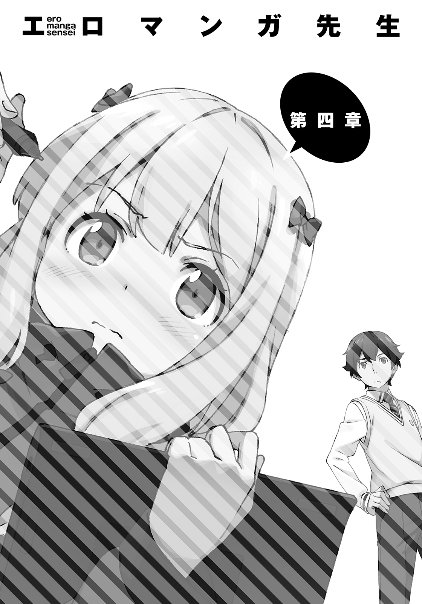
あれから半月ほどが経ち、五月になっていた。
ボツ続きで悩んでいる俺は、敵であるエルフの仕事場に、ちょくちょくやってきていた。
その理由は三つある。
売れっ子作家の仕事ぶりが、新作の参考になるかもという理由。
敵情視察という理由。
そしてなにより、隣に住んでいる売れっ子作家さまのことが、気になって仕方がないからだ。
もちろん好きとか嫌いとか、そういうんじゃない。
そういうんじゃなくて......
山田エルフの仕事ぶりが、あまりにも俺の想像を超えていたんだよ。
「お・ま・え、なぁ」
今日も今日とて、エルフの仕事場に、俺の声が轟いた。
「いい加減仕事しろよ！」
「えー、やる気でなーい」
購入したばかりのソファに寝っ転がり、気だるそうな声を出すエルフ。
今日も学校が終わった後で、エルフの家──クリスタルパレスを訪ねたのだ。
そうしたら、このザマである。この売れっ子作家さまは、ちっとも仕事をしないのであった。
ワープロソフトを起動しているところを、一度たりとも見たことがない。
だらけ過ぎだろ。ここにファンがいるってことを忘れているんじゃあるまいな。
俺、こいつの新刊、めちゃくちゃ楽しみにしてるんだぜ？ 憧れの天上人だった作家先生が、目の前でこんな有様になっていたら、放っておけるわきゃねーだろうが。
「やる気出ないやる気出ないって、毎日ずーっとそればっかじゃねーか。俺、ここでおまえが大口叩いてるとこと、遊んでるとこと、だらけてるとこしか見たことねーぞ。そんなんで原稿締め切りに間に合うのか？」
「さあ？」
「さあ、じゃねーよ。アニメ化決まったシリーズの新刊も、俺と勝負するための新作も、どっちもやらなきゃいけねーんだろ？ 両方月末締め切りなんだろ？ そろそろやばいんじゃないのか？」
「担当編集はそーゆってるけど、わたし、別に月末までにやるとは言ってないしー。そんなスケジュールを許可した覚えはないしぃー。ていうか、まだ一文字も書いてないしー、このままじゃ間に合わないんじゃないかしらー」
ぴこぴこ携帯ゲームをやりながら、まるで他人事のように言う。
へらへらっと笑って、
「えへへ、でも大丈夫大丈夫～♪ 作家に伝えられる締め切りなんて、目安みたいなものなんだから。まだまだ引っ張れる引っ張れる。それに......それに、よ？ そもそもわたしのような天才に、締め切りなんて無粋なモノがはたして必要なのかしら？ ──否！ 断じて否！ 我が心は自由であってこそ、創造の翼をはためかせる......」
「ばっかじゃねーの」
......お、おかしいな。この前は、かっこいいやつだと思ったのだが......。
やっぱりゴミじゃねーか。あの感動は、俺の気の迷いだったのだろうか。
どうしてこいつは、月末に締め切りが二つも迫っているってのに、へらへら平気でゲームとかやってられんの？ 信じらんねえ。モンハンやってんじゃねーよ。
「おい、おい、山田先生よう......究極のラノベを創るんじゃなかったのか？」
「創るわよ、必ず。そのために、いまは魔力を充塡しているの。傑作を創るため、鋭気をやしなっているの。余計な口出しはやめて頂戴」
毎回この調子だ。無限に言い訳を繰り出してきやがる。こいつの担当編集さんも、苦労しているんだろーよ。
「そんなことより、マサムネ、協力プレイしましょう。ゲーム機ならもうひとつあるから」
「しねえよ」
「じゃあ、お茶でも用意して頂戴。気が利かないわね」
「何様だてめえ！」
怒鳴りつけてやったのに、うつ伏せになっていたエルフは、それでもゲーム画面から目を離さない。
「うるさいわねー。あんた、それでもわたしの下僕なの？」
「たしかに俺はおまえのファンだけど、下僕じゃねーんだよ」
「それにしたって、一人暮らしの美少女の面倒を見てあげるのは、お約束でしょう？ そのくらいの甲斐性もないのかしら？」
「そーゆーのはな『とらドラ！』の竜児さんとかに頼め。現実にあんないいやつがいてたまるか。それに──」
俺は、エルフの仕事場を見回した。
あれほどあったダンボールは別の場所に移されており、さっぱりしている。フローリングも家具も、少々増えた仕事道具も、ぴかぴかに磨き上げられていて、たとえ本の中から竜児さんがやってきたとしても、やってもらうことはなさそうだ。
「──おまえだって、逢坂大河ってガラじゃねーだろ。普段だらけているようにしか見えないのに、どうしてこんなに部屋が綺麗なんだ？ 掃除が趣味だったりするのか？」
「まぁね。それに人が来たとき、部屋が汚かったらカッコ悪いでしょ」
「ふうん」
俺のために掃除して待っていてくれた、ということ......なのか？
初めてここに入れてもらった日から、妙に歓迎されているような気がするな。いつの間にか、呼び方も馴れ馴れしくなってやがるし。
毎回毎回、クソ長い自慢話を聞いてやっているからか？ わからん。
「にしても......」
改めて見てみれば、掃除をしたばかりって感じだ。俺の通う高校は、すぐ近くにあるし、今日は真っ直ぐ帰宅したはずなのだが......。
エルフは、自分が通っている中学校から帰宅して、それから俺が来るまでに、掃除するヒマなんてあったのか？ 気になったので、本人に聞いてみることにした。
「そういや、おまえってどこ中よ？ もしかして、俺の妹と同じ学校じゃねーの？」
「行ってないわ」
「は？」
「行くわけないでしょ、学校なんて、このわたしが」
エルフはこちらに顔を向けず、ソファにうつ伏せに寝転がったままで言う。
なんと、こいつも学校行ってない系女子だったとは。いや、待て、ということは、だ。
「......小卒？」
「しょッ......小卒ってゆーな！」
言葉のナイフが背中に刺さったのか、エルフはゲームを中断して、ガバッと起き上がった。ひらひらのミニスカートから、白い脚がのびている。日替わりのロリータファッション。今日はずいぶんと涼しげだ。
「あ、あああ、あんた！ ......言うにことかいて、とんでもない暴言を口にしてくれたわね！ だ、だだだ、誰が小卒よ！」
「おまえだおまえ。だって中学行ってないんだろ？ このままだといずれそうなるぞ」
「......ぐぬ」
「いや、いや、山田先生、小卒はやばいよ！ 俺、他の職業のことはしんねーけど、作家で小卒はまじやばいって！」
「そ、そう？」
「そうだって！ 作家って、ＦＦ５の〝すっぴん〟みたいなもんだぜ。すべての職業のアビリティが使える最強の底辺職じゃん！」
「ちょッ、最後の一言！」
エルフが抗議してきたが、構わず続ける。
「小卒とかめちゃくちゃもったいねえって！ 中学生になれんのは人生でいまだけなんだぜ！ 行けよ！ 学校！ どこでもいいから！」
「だから小卒小卒うるさいのよ！ 行く必要ないっつってんでしょ！ わたし、ベストセラー作家なのよ！」
「！ そ、そういえば......」
俺は愕然と目を見開く。
「お、おおお、俺はいままで、小卒にボロ負けしていたのか......？」
なんということだ......こんなことが......。
思いのほかショックがでかい。とても一人で抱え込める事実じゃない。
早稲田とか東大とか出てる高学歴作家の皆様方に、ぜひとも教えて差し上げねば......。
『おいコーコーセーくん。大学くらい、いいとこいっとけよ？』だの『社会経験ない作家とか、実によくないよぉ～』だの、ゴチャゴチャうるせー先輩方に、ぜひとも、小卒に無双されてどんな気持ち？ って言って差し上げたい。悔しがるぞう。
「なに悪いカオしてるのよ」とエルフが口を挟んできた。
「だいたいね──わたしが小卒なら、あんたの妹だって小卒でしょうが」
「......おまえに、妹のこと話したっけ？」
「話してなくても同類だってわかるわよ。あの娘、平日の昼間っから、部屋にいるし」
「そ、そうか......」
紗霧のバカ！ カーテン閉めとけっつったろ！
あいつ、引きこもりのくせにベランダのカーテン開けるのって、いったいなんなんだ？
道路側のカーテンと窓は、絶対開けないくせに......。
しかし......ううむ。
紗霧の引きこもりは、エルフにバレてしまったか。まぁ、エロマンガ先生と同一人物だということまでは気付かれていないようだけどな。
「おせっかいは、わたしじゃなくて、妹に焼いてあげたら？」
「あいつはいいんだよ、かわいいし、頑張ってるから。おまえはダメ、かわいくないし、頑張ってないから」
「え？ わたしの方がかわいいでしょ」
「ぜんぜん？」
比べることさえおこがましい。
「くっ......！ そ、それにあの娘、ひたすら絵ぇ描いてるだけじゃない！ どう考えてもプロの世界で無双しているわたしの方が頑張っているでしょうが！」
そうでもないんだけど......本当のことは言えないしな。
「とにかく」俺は話を戻す。「おまえはさっさと仕事しろ」
「だからー、やる気出ないって言ってるじゃない。人の話聞いてないの？」
「やる気はカンケーねーだろ。仕事ってのは毎日休まずするもんだ」
「えっ？」
エルフは、もの凄く驚いたような声を出した。幽霊を目撃したような顔で震えている。
「あ、あんた......あんた......ま、まさか......ウソでしょ......？ い、いい、いつも......そんな仕事のやり方をしているの？」
「と、当然だろ？ 俺はボツが多いし、毎日書かないとやっていけな──」
「やる気がないのに原稿を書くなぁああぁぁぁぁあぁあぁぁぁっ！」
バチーン！ エルフは、全力で俺にビンタをぶちかました。
「？ ？？」
もちろん俺は、なんで殴られたのか、さっぱりわからない。
痛む頰を押さえて、当惑するばかりである。
「愚か......あんたってやつは......どこまで愚かなの！ すべてわかった......謎は解けた......！ そんなやり方をしているから、あんたの書く小説はつまらないのよ！」
「な、なんだと......？」
「やる気出ないときに書いた文章が面白いわけないでしょうが！ なんでそんなこともわからないのよ！ バカなの？」
山田先生、マジギレである。よっぽど俺の言い草が気に食わなかったらしい。
「た、多少やる気なくても面白く書くのが、俺たちの仕事じゃないの？」
「違うってばバァァァカ！ 『やる気ないときに面白く』書いた文章より、やる気ＭＡＸファイヤーで書いた文章の方が、絶対面白いに決まってるでしょ！」
「そ、そりゃ......そうかもしれんけどなぁ」
「だったら！ やる気ＭＡＸファイヤーのとき以外、死んでも原稿なんか書くなよ！ じゃないと、実力以上の作品を完成させることはできないし！ 書いてて楽しくないし！ なんか、なんか......手ぇ抜いたみたいな気分になるでしょ！」
「....................................」
こいつの言い分も......わからなくは、ない。わからなくは、ないんだが......。
「おまえ......そんなやり方で、いままで仕事してきたのか？」
よくやってこられたな──そういう意味で聞いたのに、返ってきたのは思いもよらない言葉だった。
「？ わたし、仕事なんかしたことないけれど？」
「は？ いや、売れっ子作家様なんだろ？」
「もちろんそうよ。でも、それは趣味だもの」
「な......に？」
エルフはソファから立ち上がり、ゆっくりと机の方へと歩く。
ノートパソコン──自分の仕事道具に指を触れさせて、言った。
「わたしは趣味でプロの作家をやっているの」
「............」
咄嗟に言葉が出てこない。累計発行部数で俺の十倍の数字をたたき出す大小説家様が......いま、なんて言った？ ......趣味、と、聞こえたが。
「もっとわかりやすく言うなら、遊びね、遊び。言葉の綾で仕事と言うことはあるけれど、わたしにとってずっと変わらず、小説を書くのは遊び。この世のなによりエキサイティングな、人生でいちばんハマったゲーム」
何故か、俺の脳裏には、はしゃいで絵を描く紗霧の姿が浮かび上がる。
「わたしと同じゲームで遊んでるのに、手を抜くなんて許さないわ。つまらない真似はやめて頂戴」
こいつ......。なんだろ......これ......なんか、無性に、むかつくんだが。
ひどく静かに、はらわたが煮えくりかえっている感覚。
いままでも大切な相棒を賭けて勝負していたわけで、十分すぎるほどに俺は燃えていた。
けど......まさか、その上があるとはな。
すげえ。さすが売れっ子作家さまの仕事場だ。アニメ化マネーで買った家だ。
この家に、来てよかった。素晴らしい収穫があった。みにくい嫉妬だと笑わば笑え。
「上等だこのクソエルフめ。勝ってやるぞ」
俺は、宿敵に向かって、言ってやった。
「こっちは仕事でやってるんだよ。遊びでやってるやつなんかに、負けてたまるか」
「遊びでやってるわたしが、仕事でやってるやつなんかに負けるわけないでしょう？」
こいつにだけは絶対に負けたくない。
必ず勝つ！
こうして俺は、エルフと、今度こそ完全に敵対した。
のだが──......その翌日の夜。
ピピピピピ！
「はい、和泉ですが」
『わたしよ！ あんた、なんで今日は来なかったの？』
さっそく、敵対したはずの相手から、親しげな電話が掛かってきたのである。
自室ではかどらない仕事をしていた俺は、思いっきり、眉間にシワを寄せてしまった。
それでも辛うじて返事をする。
「いや（おまえをやっつけるための）仕事が忙しかったし......学校もあったし」
『ふうん、そうだったの。じゃあ、トーゼン、明日は来るわよね？』
「なんだ当然って。当然いかねえよ、明日も、明後日も」
『えっ......な、なんで？』
エルフの当惑した声が聞こえてきた。......コイツ......なんでって......。
「......わからねぇの？」
『わ、わからないわ。教えなさい。......わ、わたし......あんたに何かしたかしら？』
......嫌味とかじゃなくて、ほんとにわかってねーな、こいつ。不安そうな声出しやがって。
「や......だからさ、俺たちって敵同士じゃん？」
敵の家に行くわけねえだろう──と、続けようとしたら、
『ん？ 違うけど？』
「はっ？」
『えっ？』
？ ？？ と、電話越しにクエスチョンマークを発生させる俺たち。
『別に、あんたはわたしの敵じゃないでしょ？』
「いや、いやいや、敵だろ？ もともとエロマンガ先生を賭けて勝負する敵同士だったし──その後ちょっとなれ合っちゃってたとこもあったけど、昨日、お互いの仕事についてのスタンスの違いで言い合いになったことで、改めて決別したじゃねーか」
俺にそこまで言わせて、ようやくエルフは、今日、俺が家に来なかった理由に思い至ったらしい。
『ああ、ああ、あれね。気にしなくていいってば、そんなの。どうせわたしが勝つし』
「!? か......ッ」
簡......単、に言いやがって！
ああそうかい。話が嚙み合ってない理由がようやくわかったぜ。こいつは俺を、敵だと思っていないんだ。勝って当然の相手だから、勝負とすら思っちゃいない。
だから敵対している俺に、『なんで今日は来なかったの？』なんて台詞が天然で出てくる。
「おまえのそういうところが、ほんとむかつくわ。絶対泣かせてやっかんな」
『がんばって頂戴、応援してるわ。で、本題だけど──明日は来るわよね？』
「あのさぁ。なんで山田先生は、そう執拗に俺を家に呼びたがるわけ？」
『!? な、な、なな、なに言ってるのよ！ ばっかじゃないの！ 別にあんたなんか、家に呼びたがってなんかないし！』
「はいはい、そんなテンプレツンデレキャラみたいな演技しなくてもいいから」
『っ......あんたのそういうところ、ほんとむかつくわ。いつか泣かせてあげるから、楽しみにしていなさい』
「がんばれ、応援してるぜ。それで......ボツ続きで修羅場ってて、クソ忙しい俺が、わざわざ敵の家に行かなくちゃいけない理由はなに？」
「..................」
電話越しに、しょんぼりとした空気が伝わってくる。
......ちょっと言い過ぎたな。敵とはいえ......年下の女の子に言うことじゃなかった。
謝ろうかと口を開いたところで、エルフから回答が来た。
『......あんた、前に、わたしが仕事しているところを見たいって言ってたでしょ？ 参考にしたい──とか、なんとか』
「......おう」
まだエルフと決別する前に、そんなことを言ったっけ。
あいにく、こいつはちっとも仕事なんてしてくれず、参考になることなどなかったのだが......。
エルフは言った。
『わたし......明日、仕事するから。よかったら、見にきなさい』
翌日の放課後、俺は神妙な面持ちで、クリスタルパレスの門前に立った。
あのエルフが。半月の間、俺の前で一度たりとも仕事をすることがなかった売れっ子作家さまが、今日、ついに仕事をするというのだ。緊張しないわけがない。こうしているだけで、冷や汗が噴き出てくる。
「......ごくっ」
いや、まぁ、小説家なんだから、仕事するのが当たり前なんだけどさ。
おかしいな......俺も少しばかり、あいつに毒されてしまっているのかもしれない。
ピンポーン。インターホンを押すと、すぐにやつの声が聞こえてきた。
おごそかな声色で、
『汝、証を示せ』
「沈黙せよ、光あれ」
『入りなさい......聖域は開かれた』
インターホンが切れ、門の先の扉がわずかに開く。もちろん不思議な力で開いたわけではなく、向こう側からエルフが押している。
......この茶番をやんないと、家に入れてくれないから困る。このくらいの手続きで、我が家の『開かずの間』が開くなら、いくらでもやってやるんだけどなあ。
顔を熱くしながら、扉の前まで進むと、さっきまでの神聖っぽいやり取りをぶちこわすかのように、勢いよく扉が開く。
そして、白いエプロン姿のエルフが現われた。
「来たわね！ 待っていたわ！」
「......どうしたんだ、その格好？」
俺は目を剝いて聞いた。
「今日は......仕事をするところを見せてくれるんじゃ......なかったのか？」
そう思って来たのに、出てきたのは、派手なふりふりエプロンを着用した山田エルフ大先生だったのである。俺が仰天するのも無理はない。
一瞬、メイド喫茶にでも迷い込んでしまったのかと思った。
エルフは、エプロンを叩いて言った。
「見てのとおり、絶賛仕事中よ！」
「おまえの仕事って、小説家だよね？」
メイドじゃないよね？
「は？ なにをわかりきったことを......」
「一瞬わからなくなってしまったから、聞いたんだ。小説家の仕事で、どうしてエプロンを装着する必要が？」
「エプロンを着けてやることなんて、料理しかないでしょう？ さ、ついてきなさい」
？ ？？ な、なにを......言っているのだ？
俺の疑問はまったく解消されないまま、エルフに連れられリビングへ。
「適当に座って頂戴」と、いつもの台詞を言われたところで、ピンポーン、と、インターホンが鳴った。エルフは、リビング入口にあるインターホンの受話器を手にとって、
「汝、証を示せ。..................入りなさい......聖域は開かれた」
ガチャ。通話を切ったエルフは、俺を見て言った。
「クロネコヤマトだったわ」
「おまえ！ 配送業者にもそれやらせてんのかよ！」
「当然でしょう？ なんのための暗号だと思っているのよ。誰かれ構わず原稿を取りに来た敵だと判断するのはよくないって、あんたが言ったんじゃない」
「そりゃ、言ったけど......」
お届けもののたびにこの茶番をやらされる配送業者さんが、かわいそうでならない。
「ちょっと玄関に行ってくるわ。悪いけれど、あんたもきて。たぶんアレだから」
「はいはい。なんだかわかんねーが、とことんつきあってやるよ」
玄関で、エプロン姿のエルフが受け取った荷物がなんだったかというと。
「......食材か」
「そーよ。わたし、いつもネットスーパーで買い物をしているの」
インターネットで頼むと、食材やら何やらを届けてくれるというサービスである。
便利なのかもしれないが、やや割高なので、俺は利用したことがない。
「はい、そっち持って」
「はいはい」
二人で食材をキッチンまで運び、冷蔵庫に入れていく。もう、完全に料理をする流れになっているな。仕事をするところを見せてもらうつもりで来たってのに。
「......何を作るのかしらんけど、手伝うか？」
「いや、今日のはそういうシチュじゃないから、一人で作るわ。リビングで待っていて頂戴」
依然として、こいつの意図がわからない。そういうシチュじゃないってなに？
「材料からすると、結構時間かかりそうだな。......家に戻ってちゃだめか？ 仕事したい」
「ダメ。仕事したいなら、ここでしなさい。いいわね」
どうあっても逃がしてはくれないらしい。
......こいつ......なーに考えてんだかな。
エルフの考えはわからなかったが、仕事をやっていていいというなら、逃げ出す必要もない。
俺はエルフの仕事場に移動して、ＵＳＢメモリに入れておいた原稿を印刷する。前にも何度か借りたことがあって、プリンターの使い方は把握していた。
エルフが使っているのは高級な業務用レーザープリンターで、凄まじく性能がいい。俺の部屋にはそんなものはなく、必要なときは学校の職員室やらネットカフェやらで印刷させてもらっていたから、羨ましいといつも思う。
静かな音で、軽快に紙を吐き出していくプリンターを眺めていると、
「あれ？」
急に止まってしまった。どうやら紙がなくなってしまったようだ。
「おーい、プリンターの紙ってどこにあるんだー？」
部屋の外に出て、階下に呼びかける。すると、ぱたぱたとエプロン姿のエルフが上ってきた。
「用紙がなくなったの？ うそ？ 前に補給してから、わたし、ぜんぜん印刷してないわよ？ 仕事してないし」
「........................」
俺はさりげなくエルフから視線をそらした。
「あんた！ 人んちのプリンターで、大量に印刷したでしょ！」
もちろんすぐに、俺の犯行だとバレてしまった。俺はエルフを拝んで許しを請う。
「いや、すまん。どーももったいなくてプリンター買ってなかったんだけど......すぐ使える場所にあると、やっぱ便利でなあ」
「だからあんた、うちに来るたびプリンター使わせろって言ってきてたのね──もう自分で買いなさいよ！ うわ！ ほんとに部屋にストックしておいたＡ４用紙がぜんぶなくなってる！ 印刷したのって、ほんとに原稿だけ？ ウソでしょ？ 半月でどんだけ書いたの？」
どんだけ書いたかって......うーん、そうだな。
「一週間で、三百ページくらいのを二作ずつ書いて送ってたから......半月で千二百ページくらい」
「せ......！」
エルフが、ネズミを目撃した猫型ロボットみたいな顔になった。
「せんにひゃく!? 千二百ページって言ったいま!?」
「お、おう。言ったぞ」
ちなみに一枚の紙に二ページぶんずつ印刷しているので、消費したＡ４用紙はその半分だ。つまり六百枚くらい印刷した......ということ。
「......そう怒るなよ、インク代と紙代くらい払うって」
「そうじゃないわよ！ そうじゃなくて......一週間で三百ページを二作ずつ書いてた？ つまり文庫本二冊分ってことよね──それが本当だとしたら、アレよ？ 一月で......ええと、何冊になるのかしら？」
「八冊」
「そう！ 八冊でしょ!? 二千......何百ページか！ てことは......てことは......あくまで仮定だけど......書いた作品がぜんぶ発売されるとしたら......」
「年間で八十八冊も、本が発売できてしまうじゃない！」
「九十六冊じゃねーの？」
足し算かけ算あやしいぞ？ 売れっ子作家のくせに大丈夫か？
「..................」
エルフは黙った。
ポッと頰を染め、けれど『別にたいしたことじゃないよ』みたいな顔で、
「そうね！ 九十六冊ね！ ちょっと間違えたわ！」
「............八かける十二は、八を十二回足すんだぞ？」
「ばかにしないで頂戴！ し、しし、しってるわよ！ そのくらい！」
憤るエルフの顔は、ゆでだこみたいに火照っている。
人前で小学校レベルの問題を盛大に間違えるとか、凄まじい生き恥だものな。
学校行く行かないはともかく......ちゃんと勉強しておかないと、売れっ子作家でも許されないということを、自分自身で証明してしまったエルフであった。
「よ、ようするに、わたしが驚いていたのは、アンタは年に文庫九十六冊分の物語を産み出す超速筆作家だってこと！」
「言っとくけど、さすがに、ずっとその速度を維持し続けられるわけじゃないぞ。土日休むと半分になるし、無理しすぎると病気になることだってあるしな」
いずれにせよ、九十六冊なんてのは、あくまで仮定の話でしかない。
実際の俺は、去年、一年に七冊出したのが最高記録（イラストレーターに超きついスケジュールを強いた）だし、一昨年は、ボツの無間地獄にハマり、他の作家に出版枠を奪われ、一冊も本を出せてない。
「それでもじゅうぶん規格外のチートスキルよ。累計発行部数百万以下の雑魚作家の分際で、すでにＡ級スキル持ちだなんて......はじめて見たわ、そんなやつ」
一瞬なんの話だと思ったが、そういえばコイツこの前『累計発行部数が百万を超えると「大小説家」にランクアップしてスキルを獲得できる』とかいう妄想を垂れ流していたな。
......ううむ......ライバルに、初めて作家として認められた気がしてまんざらでもなかったのに、素直に喜べない。
「そういえば、『大小説家』さまであるおまえも、何か、そういうスキル？ 持ってんの？」
妄想にノッてやると、エルフはニヤリと笑った。
「わたしのユニークスキルも、けっこう凄いわよ。使い勝手の悪い玄人向けの能力だけれど、そのぶん決まったときの爆発力は、あんたの〝超速筆〟を凌駕するわ」
「そ、そうなんだ」
エルフがあまりにもガチすぎて、俺は妄想に付き合ってしまったことを、ちょっと後悔した。
「いずれ見せてあげるわよ。あんたがわたしに、負けるときにね」
あとから思い返してみれば、俺は、この時点で気付いておくべきだったのだろう。
エルフの恐るべきの能力の正体に......ヒントはじゅうぶんに揃っていたのだから。
──なんて、俺が能力バトルものの主人公だったなら、そんなモノローグを入れておく場面だったかもしれないな。やれやれ、アホらしい。
さて、そんなやり取りがあった後。俺たちは一階へと戻っていった。
エルフはキッチンで料理をはじめ、俺はリビングで、書き上がった原稿を読み直す作業を行う（Ａ４用紙がないので、結局違うサイズの用紙で、原稿を印刷した）。
どのくらい経った頃だろうか......リビングで座布団に座っていた俺のところに、エルフが皿を持ってきた。
「ちょっとスープの味見をしてくれる？」
「ん、お、おう」
俺は、赤ペンと原稿をローテーブルに置いて、スープの味見に取りかかった。
味見というわりには、やや深めの皿に、具材が綺麗に盛りつけられている。
たまねぎ、えんどうまめ......皿の中心、メインヒロインのように存在を主張するのは、ぷるんと震える半熟たまご。
香ばしそうな焼き色の付いたキャベツは、乙女が纏う衣のよう。
漂う薫りは、コンソメとベーコン、バターの三重奏。
ごくりと喉が鳴った。
見た目と薫りの両面から、ガンガン食欲を刺激してくる。
「..................」
皿を直接手に持ち、ず......とすする。
ずず......無言でもう一口。ずず......さらにもう一口。
何かに急かされるようにスプーンを動かし、乙女の衣を一枚ずつはがしにかかる。キャベツを口に含んで嚙みしめると、口内にじゅわっと旨みが染みてきた。
「..................」
言葉にもならない。代わりにせわしなく次の獲物に狙いを定める。スプーンの先端をつぷりと半熟たまごに刺し入れる。とろりと流れ出た黄身を、キャベツにからめ、他の具材と一緒に口に入れる。
とろり......バク......じゅわっ、ずず......。
......ううむ......こ、コレは......。
「どう？ お味は」
「すげえ美味い」
出てきたのはシンプルな賞賛の言葉。
一年前から自炊をはじめたような俺なんかとは、格が違う、エルフの料理の腕前だった。
「でしょ？ これぞ名付けて『春妖精の全裸スープ』！ まだまだ序の口だから、他の料理にも期待していて頂戴」
「おう！」
正直なところ、この『なんたら全裸スープ』とかいう、超美味くて卑猥な名前の汁を飲ませてもらった時点で『仕事を見せてもらうはずだったのに、なぜ手料理を喰わされているのか？』という疑問は、すでにどうでもよくなりつつあった。
なりつつあったのだが、俺の口からは別の質問が飛びだした。
「掃除といい料理といい......おまえって、なんか初対面のイメージと違って......むちゃくちゃ女子力高くねーか？」
料理も掃除も超うまく、楽器を嗜み、オタク趣味にも明るい、見てくれ抜群の女の子。
そんでもって、人格面には難がある。まるでライトノベルのヒロインみたいなやつだ。
俺の疑問に、エルフは素でこう答えた。
「プロのラブコメ作家なんだから、当たり前でしょう？」
「な、なに？ どういうことだ？」
「どういうこともなにも。料理ができないラブコメ作家なんて、いるわけないじゃない。掃除のやり方をしらないラブコメ作家なんて、ひとりもいないわよ。だって掃除のうまい女の子も、料理のうまい女の子も、自分の書く小説に出てくるんだから。読者をヒロインに惚れさせるために、女の子をかわいく描くために、毎日毎日ひたすらそればかり考え続けているのよ。女子力高いに決まっているでしょうが」
「......そういうもんか？」
そういえば、あの先輩も、あの先輩も、人格はともかく料理はうまいらしいしなあ。
「そういうものよ。推理小説を書くのに人を殺すのはダメだけど、ラブコメ書くのに料理するのは別に犯罪にならないからね。そりゃ、やるわよ。人を殺すときの気分は、想像するしかないけれど、気になるヤツに手料理を作ってあげるときの気分くらいなら、合法的に体験できるわ。美味しい料理を作れたときの感動も、上達する嬉しさも、失敗したときの悔しさだって、体験できるものなら、体験してから書くでしょう。プロなんだから」
『ラブコメ作家全員が女子力高い』なんてのは、さすがに決めつけだと思うが。
......なんだ、こいつ。
学校行ってねーけど、ちゃんと勉強してるんじゃねーか。
「......おまえ、遊びで小説を書いているんじゃなかったのか？」
「本気でやらない遊びなんかつまらないわ。──美味しく食べてもらうのは当然の大前提だけれど、そのためにも、料理は楽しく作らなくちゃね」
俺の対面に座っているエルフは、テーブルに両肘をついて、両の掌に顎をのせる。
エルフは、にっこりと、ヒロインみたいに微笑んで、
「ねぇ、美味しかった？」
どきり、と、心臓が撥ねた。辛うじて、顔には出さずに返事をする。
「すっげー美味かったよ。さっき言ったろ」
「そう。すっげー嬉しいわ。あんたのおかげで......料理、いままでより好きになったかも。────ありがとう、いい取材になるわ」
「──────」
確かに、かわいい女の子にそんなふうに言われたら、惚れてしまうかもしれない。
『取材』という無粋な言葉がくっいていてなお、俺は動揺してしまっているのだから。
「.........取材ね。おまえが言ってた『仕事』ってのは、これか」
「ええ、そうよ。少しは参考になったかしら」
「大いにな」
直接アドバイスされたわけではなかったが......とっかかりを、摑めた気がする。
『遊びで仕事をやっている』エルフの書いた小説は、悔しいが面白い。
凄まじく面白くて、むちゃくちゃ売れている。
その理由はいったいなんなのか。
同じく『遊びで仕事をやっていた』デビュー当時の俺と、なにが違うのか。
三年前、デビュー当時の俺に、足りなかったものはわかる。
必死さだ。なりふり構わず本気で読者を楽しませようという、プロとしての心構えだ。
そいつを......遊びでやっているという彼女は、ちゃんと持っている気がする。
もしかしたら、仕事でやっている俺よりも、強く。
その上で。さらなるプラスアルファを、積み重ねている気がする。
それはきっと、スポーツマンガで、主人公が備えているようなマインドだ。
誰よりも楽しんでいるがゆえに強いとかいう、意味不明の精神論だ。
それでも、一考の余地はあるのではないか。若干電波入っちゃっているとはいえ、マンガの主人公ではなく、実績のある人間の言葉なのだ。
やる気ＭＡＸファイヤーで書いた文章の方が、絶対面白いに決まってるでしょ──
美味しく食べてもらうのは当然の大前提だけれど、そのためにも、料理は楽しく作らなくちゃね──
わたしは遊びでやっているのよ──
彼女が俺に言った台詞が、ぐるぐると頭の中を回っている。
ライバルの圧倒的な実績が、俺の心を折りにくる。
つまり──つまり。俺はどうしたらいい？ どうするべきなんだ？
どうしたら俺は、いまよりも面白い小説が書ける？
必死さとか、そういう諸々を失わずに、もっと楽しく仕事をすればいいのか？
具体的にどうやって？
デビュー作でいきなり売れっ子になったエルフと違って、仕事は辛く報われないものだって、こんなにも身に染みてしまっているのに？ いまだってボツ続きで、いつになったら作品を完成させられるのかわからなくて、どんどんエルフに勝てる気がしなくなってきて──
あせりで頭がどうにかなってしまいそうなのに？
答えは、いつだって俺の、すぐそばにあった。
気付くのは、もう少しだけ、先のこと。
そして──
山田エルフ先生は、今日もワープロソフトを起動しなかった。
あれほどかっこいい大口を叩いていたにも関わらずだ。
......おいおい、このまま原稿を書かないでいたら、不戦勝で俺の勝ちになっちまうぞ？
......本当に、どうするつもりなんだ......？
日も落ちて暗くなった頃......
俺は両手に、お土産の袋を持たされて、クリスタルパレスをあとにした。
「......恐ろしく美味いメシだったな......」
呆然と呟く。
「妹のぶんまでもらってしまった」
俺の料理と比べられてしまうのが辛いが、きっと喜んでくれるんじゃねえかな。
「......腹減らしてるかもしれねえ。早く、持って行ってやるか」
俺は自宅へと入っていった。『開かずの間』へ向かう階段を、ゆっくりと上っていく。
一歩踏み出すごとに、身体が重くなるような感じがした。
何故かって？
仕事をしないアニメ化作家さまに、色々圧倒されてしまったってのも影響しているし......。
──へんたい。
あの件からこっち、妹と一言も口を利いていないのだ。顔も見てない。
以前の状況に戻っただけっちゃだけなんだが......。
二階に到着。俺は『開かずの間』の前に立ち、
「ええい！」
頭を振って、暗い気分を追い出した。
兄貴ってのは、妹に、落ち込んだ顔を見せたりはしないんだ。
「すーっ、ふーっ......よし」
深呼吸して気持ちを落ち着け、いざ──
きぃぃ......。
「あれっ？」
──声を掛けようとしたら、先んじて『開かずの間』の扉が開いた。
「............」
扉を開けて現われたのは、もちろんパジャマ姿の俺の妹。
だったのだが......。
「................................................」
紗霧は、わざわざ扉を開けて、自分から俺の前に出てきたにも関わらず、一言も喋らない。
ひたすら無言で、じぃっと俺を見続けている。無感情な瞳からは、異様な圧力を感じた。
「......さ、紗霧？」
「................................................」
こちらから声を掛けてみても、反応は変わらず。
気まずい沈黙が、しばらく続いた。
プレッシャーに耐えかねた俺が、泣きそうになった頃......ようやく妹に動きがあった。
「............」
紗霧は、無表情のまま、くい、くい、と、招くように人差し指を動かす。
このジェスチャーは......
「......入れってことか？」
「............」
紗霧は否定も肯定もせず、ぞくりとするような流し目を寄越してから、俺に背を向ける。
「お、おい」
黙って見ていると、扉を閉められてしまいそうな気配を感じたので、俺は慌てて部屋に戻っていった妹のあとを追う。
そうして俺は、何度目かの『開かずの間』への侵入を果たしたのである。
妹の部屋の様子は、以前に入れてもらったときと変わらない。
ひとつだけ違っているのは......ベランダのカーテンが、開いていること。
「メモでも言ったけど、開けっ放しはダメだぞ。頭おかしい人が、隣に住んでるからな」
くちゅん！ と、エルフがくしゃみをしている光景が、なぜか脳裏に浮かんだ。
紗霧は、部屋の中央でこちらに振り向き、下唇を嚙んだ。
「..................」
俺としては、なんとか気まずい現状を打開しようと話を振ってみたのだが、余計に妹からのプレッシャーが強まった気がする。な、何故だ......？ 話題のセレクトを間違ったか......？
くそう......どうしていいかわからない。
情けない話だ。キャラクターの心情は、何万ページも書いてきたのに、一緒に住んでいる妹の気持ちさえ、俺にはわからない。わからないが、何もしないってのはナシだ。考えろ......！
「ええっと......隣といえばな。これ」
俺はエルフの家から持ち帰ってきた、お土産を掲げて見せた。
「お隣さんからもらったんだ。すげえ美味いから、食べてみな」
「..................いらない」
ようやく喋ったと思ったら......。
「いらないって......どうして？ おなか空いてるだろ？」
「........................」
紗霧は、再びむすっと黙り込んでしまう。決して常に無表情なやつではないし、むしろ感情が顔に出やすいやつではあるのだが......。どうしてそうなっているのか、までは読み取れん。
俺は、ひとまず荷物をその場において、ゆっくりと語りかけた。
「なぁ......なにを怒っているのかしらないが、言ってくれなくちゃわからないぞ」
「............うそつき」
「うそつき？ 誰が？」
紗霧は、すねたように唇を尖らせて、俺の顔を指差した。
「......俺？」
「......そう」
「俺が、うそつき......か。すまん、心あたりがない。どういうことだ？ 説明してくれ」
まどろっこしいやり取りが続く。
前回会ったときから、口を聞いてもらえていなかったわけで、もともと俺に怒っていたのはわかる。しかし、お隣さんからの土産を見せたら、余計に怒りが強まったのはどういうわけ？
妹の心は謎だらけだ。
「......だから......！」
だからの続きが出てこない。
紗霧──エロマンガ先生。
動画配信のときはあんなに喋るのがうまいやつなのに、こうして面と向かっているときは、とんでもなく口べたになってしまう。
「う、うう......うう」
もどかしさのあまり、目をきつくつむって拳をぶんぶん振り回し始めた。
俺もなんとか紗霧の気持ちをくみ取ってやりたいのだが、さっぱりわからん。
「もうっ！」
紗霧は、ぎん！ と一際強く俺を睨むと、パソコンデスクのあたりから、ペンタブを手に取った。前屈みになって、しゃしゃしゃしゃーっ、と、高速でペンを走らせる。
十秒もしないうちに、イラストを完成させて俺に突き付けてきた。
「これっ！」
「速！ なんだ、これ？ ......もしかして、俺か？」
紗霧が俺に突き付けてきたのは、デフォルメされた『俺』のイラストだった。
口からはフキダシが出ていて、その中に『お隣さん？ ぜんぜん仲良くないよ』と書かれている。
「なんか、この『俺』......腹立つ顔してんな。......これがどうしたんだ？」
「......！」
紗霧は再び、しゃしゃしゃしゃーっと、新たなイラストを描いて、俺に突き付ける。
普通に喋った方が絶対に早いだろと思ってしまうが、こいつに限っては、例外なんだろうな。
紗霧は、パンパン！ と、タブレットの画面を叩いて、
「......これ」
紗霧が見せてきたのは、全裸の金髪美少女のイラストだ。
「どう？」
「どうって......」
このイラストを見た感想？ そりゃあ......。
「むちゃくちゃエロ痛って！ タブレットの角で殴んのやめろよ！」
「ば、ばかっ！ そうじゃなくて！ 他に......他に......！」
他に、何か言うことあるでしょう？ と、言いたいのだろうか。
「他に、ねぇ」
この超エロい金髪美少女のはだかを見て、他に、何か言うこと......か......。
「......うーん......ないでもないけど、これは関係ないだろうし......」
「..................言ってみて」
いや、ほんとに関係ないと思うぞ？ と、言える雰囲気ではなかったので、俺は仕方なく、思ったことをそのまま口に出してみた。
「ずっと気になってたんだけど、おまえって、なんで貧乳の女の子しか描かないの？」
「......！」
紗霧は、ボッと赤面しつつ仰け反った。
俺に対してキレていた紗霧の勢いが、目に見えて弱まる。
「そ、それは......！」
「ヒロインのおっぱいを大きくしてくださいって要望出しても、無視するよね？」
「そ、そんなことない。......がんばって大きくしてあげた。ちょっと」
「よく見ないと気づかないレベルでな」
デビュー当時、全力で要望を出してその結果だったので、俺は諦めて、作中に巨乳キャラを出すのをやめた。
描いてくれないから。
「......から」
紗霧が、ぼそっと何事かを呟いた。顔は依然として赤く、目が据わっている。
エルフに『ヒロインの初登場シーンがクソ』って言ってやったときも、こんな顔をしていやがったな。......これは、あれだ......紗霧のやつ......完全に、ムキになっている。
いまのやり取り、どうやらエロマンガ先生にとって譲れないポイントだったらしい。
「えっちな絵には！ こだわりがある......から......！」
紗霧は、自分の声で、はっきりとこう言った。
「生で見たことないものは描きたくない！」
..............................。
しん、と、沈黙が満ちる。
「ええと......」
えっちな絵には、こだわりがあるから、自分の目で見たものしか描きたくない。
エルフがさっき言っていた『取材』の話と、似たようなものだろうか。俺にもそういう『こだわり』がないわけじゃないから、その理屈は、なんとなくわかる気がするが......。
紗霧の発言には、大きな問題がある。
「......いままでおまえは、ぜんぶ......実際に、自分が生で見たことあるものを......描いてたってこと？」
「そんなわけない。資料が手に入らないものとか......『銀狼』に出てくる異世界の種族とか、精霊とか、想像でしか描けないものもたくさんあるし。でも、下着とか、人の身体とか、みんなが見たことあるようなものは、一度見てから描かないとやだ」
「いや、俺が問題にしているのは、そういうことじゃなくてだな」
「......え？」
うまく伝わらなかったようなので、俺はもう一度言い直した。
「おまえはその......えっちな絵を描くとき......」
「あっ」
言われている意味に気付いたのだろう──紗霧は、ぼしゅ！ と、さらに急速に赤くなる。
俺は、決定的な質問をするべく、さらに口を開く。
「生ってなにを」
「言わないで！」
バンッ！ 紗霧はタブレットを全力で俺の脳天に叩き付けた。
「ばか！ ばか！ ばか！ えっち！ へんたい！ 兄さんはまた......！」
バンッ！ バンッ！ バンッ！ バンッ！ 罵倒とともに、顔面を滅多打ちにされる。
「やめ......！ 悪......！ 痛......！ 頑丈な鈍器だなオイ！」
ペンタブってのは、液晶とプラスティックでできてるんじゃねーの!?
なんで鉄板で殴ったみたいな音すんだよ！ 特別製か!?
「......はー、はー、はー」
引きこもりの体力のなさで、すぐに紗霧は息切れした。
......めぐみが初めてうちに来る前くらいに、エロマンガ先生が配信で描いてたえっちなイラストも、突き出したオシリにヒモみたいなぱんつが食い込んだすごいポーズをしていて、みんな大興奮していたものだが。
「............まさか、あのケツ出しイラストは......」
俺は、顔をガードしていた腕の隙間から、部屋の片隅に置かれた姿見をみやる。
......紗霧のやつ......あの鏡を見て......
「ちゃ！ ちがぁーッ！」
バンッ！ バンバンバンバンバンバンッ！
「まだなんも言ってねーだろ！ 落ち着け！」
「ぜったい想像した！ いま私で、すごいえっちなことっ......！」
限界を突破した怒りと恥じらいで、紗霧は、顔から火が出そうなくらい興奮している。
「考えてねーよ！」
「うそだあ！」
紗霧は、息を荒げて俺をブッ叩きながら、まくし立てる。
「ぜ、ぜったい！ 私が四つん這いになって、自分のオシリを見ながら、あのえっちなイラストを描いたって想像したもん！ そのためにヒモのぱんつを買ったんだなって、えっちなやつだなって思ってるもん！」
「マジでそこまでは考えてなかったよ！」
本人が自白したせいで、いまはえっちな妹だなって思っているが。
「うッ」
紗霧は、歯を食いしばって、潤んだ瞳で俺を睨み付けるばかり。
いかん......泣かれる！
「紗霧！ 聞け！」
俺はとっさに、大声を張り上げていた。
「兄貴ってのは！ 妹で！ えっちなことを考えたりはしねえ！」
「！」
俺の剣幕に驚いたのか、ビクッと紗霧の肩がはねる。
妹は、こちらの様子をうかがうように呟く。
「......ほんとに？」
「おう、ほんとだ」
「......ひもぱんを洗濯させても、えっちな子だなって......けいべつしない？」
「するわけあるかよ」
断言した。
というか、この前洗濯したアレ、ひもぱんだったのか。
パッと見てもわかんねーよ！ そもそも引きこもりの妹が、ひもぱん持ってるってのが、すでに想像の埒外だよ！
「そんなに心配なら、はっきり言ってやる。俺は、おまえの兄貴になるって決めた。おまえに認めてもらうって、決めたんだ。だから、おまえがどんなにえろいやつでも、えっちな気分になったりしないし、妙な気を起こしたりもしないし、なにより絶対にバカにしたりはしない」
俺は胸を張って、信念を口にする。
「それが兄貴ってものだからだ」
だから安心しろ、紗霧。
妹を守るのが、兄貴の役目だ。
「........................」
紗霧は、俺の話を、複雑な表情で、黙って聞いていた。感情が顔によく出るわかりやすいやつなのに、このときは何故か......まったく判別できなかった。
強いていえば『楽』を除いた『喜怒哀』が入り交じっているような──
「ばかみたい」
──そんな顔で、紗霧は吐き捨てる。
「えっちでうそつきの兄さんなんて、しらない。信じない」
ああ......そうだった。
「......俺が噓つきだって話だったな」
俺は、改めて紗霧が手に持つ凶器──否、ペンタブの画面に描かれている、全裸の金髪少女のイラストを見る。
「そのイラスト......もしかして、エル──お隣の山田さんか？」
「............」
紗霧は答えず、そっぽを向いた。
「そうなんだな？ このえろい全裸女が、俺がうそつきって話とどう関係してるんだ？」
「......！」
バッ！ しゃしゃしゃしゃーっ！
紗霧は再び、タブレットにペンを走らせる。
すぐにイラストを完成させ、むすっ、と、俺に画面を突き付けてきた。
「.........これ」
「......ううむ......」
紗霧が見せてきた画面には、さっきと同じくデフォルメされた『俺』のイラスト。
ムカつく顔で『お隣さん？ ぜんぜん仲良くないよ』と喋っている。
「次はこれ」
紗霧は、タブレットを俺に突き付けたまま、片手の指を画面に滑らせる。
すると表示されているイラストが切り替わり──
超えろい全裸のエルフと、それを見て『ひゃっほー』とスケベに笑う『俺』のイラストが表われた。
「......こ、これは......」
ひくひく。俺の口元が引きつる。
「......次はこれ」
紗霧はさらに画面をスライド。
エルフの仕事部屋で、楽しそうにお喋りする、俺とエルフの姿が描かれている。
「......ぬ......ぐ......」
俺は、紗霧の部屋の、閉め忘れているカーテンに視線をやった。
おかしいと思ってはいたんだ......引きこもりが何の理由もなく、カーテン開けるわけねぇって......。そーゆーコトかよ。
「......紗霧、おまえな」
「次」
紗霧はさらに画面をスライド。
お土産を持った『俺』が、でれでれとニヤけ顔でこう言っている──
『美味しいお土産もらってきたよ。おなかすいてるだろ？』
紗霧はさらに画面をスライド。
『お隣さん？ ぜんぜん仲良くないよ』
しゃっ、しゃっ、しゃっ──
以上四枚のイラストを、何度も順番に切り替えて、見せつけてくる。
────『お隣さん？ ぜんぜん仲良くないよ』────────
紗霧は、改めて言った。
「うそつき」
「仲良くねぇええええええええええええええええええよ！」
なんっつー......まどろっこしい糾弾だこりゃあ！
紗霧は、低い声で繰り返した。
「うそつき」
「だから！ 噓じゃねーって！ 確かに俺は、最近よくお隣に出かけていくけれども！ それには事情があるんだ！」
そもそもこれって釈明するようなことか？ 今回、俺は断じて噓を吐いちゃいないけれども、もしも本当に噓を吐いていて、お隣さんとイチャコラ仲良くやっていたとして。
なんで紗霧がぶすくれて、口利いてくれなくなったり、一方的に糾弾してきたりするんだよ。
意味がわからん。
紗霧は、さらに問い詰めてくる。
「事情ってなに」
「それは────............」
俺はいま、件の〝お隣さん〟と『公平な勝負のため、エロマンガ先生に、エルフの原稿を読んでもらえるようにする』という約束をしているわけで。
ここで紗霧に、山田エルフ先生の正体を明かしてしまうという手もある。
......でも、言いたくない。
もちろん約束は守るし、エルフの原稿はなんとかして読んでもらうけれども。
隣に住んでいるのが、売れっ子作家の山田エルフ先生だということを、妹に教えたくない。
いや、いや、ごまかすのはやめよう。
公平な勝負をすると約束したにも関わらず、俺にはいまだ迷いがあるのだ。
俺よりもずっと人気があって売れている同業者が、すぐ隣に住んでいて、エロマンガ先生の力を俺と同じくらい強く欲していて、学校にも行かず紗霧と似たような生活をしている──だなんて、言いたくないのだ。大切な相棒を取られてしまうような気がして、イヤなんだよ。
なんて情けない、恥ずかしいやつだって自分でもそう思う。
「......いまは、まだ、言えない」
来月になったら、言うさ。
二人の原稿が仕上がって、おまえに読んでもらって、決着がついたら。
そのときに。
「そう」
紗霧は俺の返答に、失望したようだった。瞳に暗いものを宿したまま、ぼそぼそと呟く。
「......うそつき。ずっと、ずっと、なにもかもうそばかり。兄さんなんて............」
紗霧は、はっきりと断言する。
「兄さんなんて、大嫌い」
その言葉はもう『エルフと仲良くしていたこと』を糾弾するものではなくなっていた。
一年間、かりそめながらも兄妹として同じ屋根の下で暮らしてきた俺に対する、妹からの評価だった。
「──大嫌い、か」
「大嫌い。顔も見たくない」
上等じゃないか。ショックを受けている場合でも、落ち込んでいる場合でもねえ。
わかっているな、和泉正宗──ここで決めなくちゃ、兄貴じゃない。
「なら、うそつきじゃないって、証明する」
「......どうやって？」
いまこそ俺の決意を、伝えるときだった。
「決まってる。俺にできることなんて、ひとつっきゃないんだ」
「..................なんの話？」
「俺は、この一年間、ずーっと同じことばかり考えてた。妹に、俺のことを信じてもらうにはどうすりゃいいのか。紗霧の兄貴に、少しでも近づくためにはどうすりゃいいのか。おまえに認めてもらうには、どうすりゃあいいのか、ってさ」
「..................」
「でもって先月......俺は、おまえの秘密を知った。ずっと一緒に仕事をしてきた人の、正体を知った」
『フハハハハハハハ！ テンション上がって来たあ──！』
妹に近付くきっかけを摑んだ、と、張り切ったあのときの気持ち。
『勝負だ！ 俺の相棒を、おまえには渡さん！』
アニメ化作家なんぞブッ飛ばしてやると息巻いた、あのときの気持ち。
「色々考えたよ。色々行動もした」
燃え上がるようなモチベーションの高まりは、デビュー以来、初めて感じるほどのものだった──初めて作品の感想をもらったときと同じくらい、初めて自分が書いた本が本屋に並んだときと同じくらい────────『すっげえ面白い！』って、思ったのだ。
『......楽しかったの。絵を描くのも、動画を配信して、みんなとお喋りするのも』
『ばか！ ばか！ ばか！ えっち！ へんたい！』
妹と、話せるようになって、嬉しかった。これからどうしようって、心躍った。
最近の俺は、きっと──
楽しさのあまりバカ丸出しでイラストを描いていたエロマンガ先生と、同じ気持ちで行動していた。妹と、エロマンガ先生のことで頭がいっぱいになったまま、寝食を忘れる勢いで新作小説を書いていた。
「そんで、ようやく気付いたんだ」
必死に楽しく仕事をしようという無理難題を、俺はすでに突破しつつあったのだと。
「やっと──俺がやるべきことが、わかった」
聞いて驚け！
常時やる気ＭＡＸファイヤーで、超楽しく仕事をして、めちゃくちゃ面白い小説を書き上げる秘策。
ボツボツうるせえ担当編集をぎゃふんと言わせ、クソうぜえアニメ化作家さまをブッ飛ばし、これからもエロマンガ先生にすげーイラストを描いてもらい、かわいい妹の信頼を得て、日本一の兄貴になる──一発逆転の必殺技。
生涯でたった一度きり、世界で唯一、この俺だけが使用できる、Ｓ級のユニークスキル。
そいつは──
「紗霧！ 俺は！」
「妹をヒロインにする！」
俺は紗霧に──妹に向かって、大声で言ってやった。
「....................................................................................は？」
紗霧は、完全に意表を突かれたようで、目が点になっている。
「な、な、な......なにを......言ってるの」
「聞こえなかったのか？ 俺は『妹』を題材にしたライトノベルを書く！ 小さな女の子が大好きすぎて、ついにかわいい小学生をヒロインにした名作小説を書き上げちまったあの人みたいに！ 全裸大好き売れっ子作家さまが、はだかでピアノ弾きながら、めちゃくちゃえろくて面白いラブコメの構想を練っているみたいに！ えっちな絵を描くのが大好きなあの人が、いつも俺を感動させてくれているみたいに──」
俺はいったん息を吸い込んでから、言い切った。
「俺は、世界でいちばん大好きな妹を書く！ 俺の心を素材にして〝究極のラノベ〟を創ってやるぜ！」
「──っ！」
妹の顔は、炎みたいに赤くなった。ヘッドセットを鷲摑みにして、被る。
スピーカーで拡張された声で、火を噴くように叫ぶ。
「ちっとも嬉しくない！ 嬉しくない嬉しくない嬉しくない！ そんなので心を開いたりなんてしないし気持ち悪いだけっ！ うそつきの兄さんなんて大っ嫌い！ 信じない！ 早く出て行って！ 私のことは放っておいて！」
すべてを焼き尽くすようなはげしい拒絶。
妹に、俺の言葉は届かない。
そして......
『開かずの間』の扉は、再びかたく閉ざされる。
紗霧の心と同じように。
数日が経ち、五月も半ばに差し掛かった。
あれから紗霧とは、一度たりとも顔を合わせていない。
対話する前よりも、さらに関係は悪化し......扉の前に食事を置いても、そのままになっていることが増えてきた。あんなに楽しそうにやっていた動画配信さえ、ぴたりと止まっている。
心配で心配で胸が張り裂けそうだったし、俺が妹に悪影響を与えてしまったのかと思うと、罪悪感で死んでしまいそうになる。
それでも俺は、愚直に小説を書き続けた。妹に食事を用意してやり、声を掛け続けた。
やる気ＭＡＸファイヤーで、できることをやるのだ。
最後のボツを喰らってから、俺は編集部に原稿をいっさい提出していない。プロットや、企画書もだ。
速筆作家として（編集部に対して）売っている、和泉マサムネとしては、いまだかつてないことではあるが──俺は、いま手がけている『妹小説（タイトル未定）』について、これまでとはやり方を変えることにしたのだ。
数打ちゃ当たる〝弾〟のひとつとして消費するのではなく。
必ずや、死んでも『この作品』を世に出すと決め、腰を据えた。
奇しくもそれは、俺がデビューする前にやっていたやり方そのもので──速筆を活かしプロ作家として生き残るために、切り捨てたやり方でもあった。
いままでうまくいっていた──まがりなりにもプロで通用していたやり方を、自己判断で変え、新しい題材に挑戦するのは楽しかったし、無限のモチベーションが湧いてくる。
もちろん、いいことばかりじゃない。
担当編集には、つい先日、『今週中になんか出してね』と言われたのだが......。
......仕事相手に『原稿を待ってくれ』って頼んだのは、始めてだ。
向こうに設定された締め切りを、自分から拒否するのは、俺にとって、とても怖いことだ。
これで俺の作家生命が終わってしまうんじゃないか、という不安さえある。
もう二度と、本を出版することは、できなくなるかもしれない。
実際には、そこまで厳しくはないのかもしれないが、担当編集の『じゃあ、ゆっくり考えてください』という優しく聞こえた言葉が、たまらなく恐ろしい。
俺が原稿を出さないでいたら、どんどん他の作品に、出版枠を奪われていってしまう。
書いても書いても、何十冊ぶんの文章を書いても、一冊も本が出せなくて挫けそうになった、一昨年みたいに。
いつの間にか、俺の座る席は、なくなってしまう。ファンにさえ、忘れられてしまう。
きわめて現実味のある想像が、ずっとまとわりついていた。
ペースダウンの恐怖を、俺は、デビュー以来初めて味わっていた。
一番好きなモノを題材に、やる気ＭＡＸファイヤーで書きまくっている俺は──
バトル小説をやめて、妹小説を書いている俺は──
うまくいっていたやり方を変えて、うまくいってなかった頃のやり方に戻した俺は──
わくわくと心躍らせながら、同時に、不安で押し潰されそうになっていた。
初めて小説を書いたときのように──
ポジティブとネガティブの激しい波を、交互に繰り返しながら、書き進めていった。
興奮と恐怖を胸に抱いて、細いロープを渡っていく。
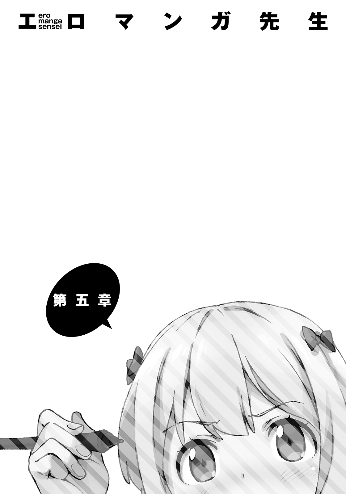
五月三十一日がやってきた。
月末──山田エルフの新作初稿の締め切り日であり、俺の新作小説の、自分で決めた締め切り日でもある。
「............」
茶色の封筒を小脇に抱えた俺は、クリスタルパレスの前に立った。
決戦を前にして、緊張と不安と恐怖で、肌が粟立っている。
自信がない、わけじゃない。ようやく見つけた書くべき題材を、やる気ＭＡＸファイヤーで書ききったんだ。俺の胸は、いま、かつてないほどの達成感で満たされている。
めちゃくちゃ面白いもんを書いた、という、すさまじい手ごたえがある。
それでも足の震えは消えやしない。
理由なんて、言うまでもない。
自分が本気で作ったものを面白いと感じるのは、当たり前だからだ。
そうじゃないやつなんていない。
自分の子供は、皆、神童に見えるものなのだ。
自分では、めちゃくちゃ面白いと思っても──他の人が、同じように感じてくれるかどうかは、読ませてみるまでわからない。
俺が超面白いと思っても、読者はそう思わないかもしれない。
だから、怖い。不安で不安でしょうがない。胃が爆発してしまいそうなほどに。
この恐怖と不安は、書いたものを、他人にたくさん読ませることで、少しずつ少しずつ緩和されていく。
『面白かった』という読者の声が、『自信』ってやつを育むからだ。
デビューしてから三年......俺は数えきれないくらいの文章を書いて、人に読ませ、感想をもらってきた。
そうしてようやく『俺の書くものは、どうやら、ほかの誰かにとってもけっこう面白いらしい』という手ごたえを、おぼろげながらも感じられるようになってきたのだ。
幸運にも、自分と同じものを『面白い』って言ってくれる読者たちに、出会えた。
この前やったサイン会では、直接話すことさえできた──こんなにすげえことがあるんだって嬉しかった。目に見えないたくさんのものをもらって、感動したんだ。
ところが今回、俺は、いままでとはまったく違うものを書いている。
いままでとは違う、うまくいってなかった頃のやり方で、仕事を進めている。
よって──
このやり方で作ったものが、自分以外の誰かにとって、はたして面白いのかどうか、読ませてみるまでさっぱりわからんのだった。
どうしようもない。だって、まだ誰にも読ませてないんだから。自分じゃわかんねーよ。
頼みにしていた『自信』なんてもんは、こうして、ちょっとしたことでリセットされちまう。
なんともあやふやで、摑みどころがない。
妹の、心みたいだ。
俺は、心臓をわしづかみにしてぼやく。
「あー......久々にきたぜ、忌々しくも懐かしいこの感覚」
忘れもしない......初めて出版社を訪れたときの、あの緊張感だ。
初めて小説を書いて、ＷＥＢにアップロードしたときの、あの混沌とした感情だ。
──『あの人』が最初の感想を送ってくれるまで、もんもんとしたっけな。
「......へっ」
少しだけ、落ち着いた。昔の──友人のような、恩人のような人のことを、思い出したから。
メールとチャットでしか話したことがなかったから、顔も本名も、性別さえもわからない。
大人びた口調だったから、きっと年上の男性なのだろうが。
色んな話をした。話題は、俺の書いた小説の話ばかり。どのシーンが面白かったか、とか、このキャラクターが好き──だとか。とりとめなく、何時間も語り合った。
楽しかった。プロの小説家を目指す、きっかけになるほどに。
いまはもう、連絡を取り合うこともなくなってしまったけれど。
あの人と──最後に俺は、どんな話をしたんだっけ。
今度、小説の新人賞に応募する、とか......そんな話だったような......。
「さて」
おっと......いまは、昔を懐かしんでいる場合じゃあ......なかったな。
「行くか」
恐怖は消えず、それでも一歩、前に踏み出す。
「いざ！ 勝負っ！」
俺は決意とともに、インターホンを押し込んだ。
ピンポーン。
「............あれ？」
返事がない。いつもなら、五秒もかからず例の『証を示せ』という痛々しい合言葉が聞こえてくるはずなのに。
留守か？ いや、そんなわけない。何度も何度も『三十一日の十七時に行く』『その日が勝負のときだ』と、繰り返し話してあったのだから。昨日だって『明日だからな！』と何度も念を押したのだ。
「......まさか、原稿が完成しなくて、逃げた......とか」
......有り得るかもしれない。山田エルフは、昨日の段階でも相変わらず、原稿を一文字も書いていないとお気楽に言っていやがったのだ。たった一日で小説が完成させられるわけがない。
エルフが原稿を落とした──これはありそうだ。
だが、エルフが逃げた──こっちはどうか。
「ねーな」
自分の考えを、自分で否定する。
山田エルフは、勝負を約束してからずっと......自信満々に『あんたなんかには勝って当然』という態度を崩さなかった。あれが演技や虚勢だったとはとてもとても思えない。
それに、エルフのこれまでの実績だ。あの売れっ子作家大先生は、デビュー以来、ずーっと一年に四冊ずつのペースを崩すことなく、新刊を発売し続けている。
すなわち、締め切りを守っているということだ。
少なくとも、新人作家に伝えられる噓っぱちのやつではなく、本当にやばい方の締め切りは、きっちり守り続けている。
だからこそ、あの原稿サボってモンハンやってるアホと、優良作家・山田エルフ先生が同一人物だということが、俺にはいまだに信じがたい。
状況からして原稿が完成しているわけがないのに、実績からして原稿が完成していないわけがない。逃げるってのも、ちょっと考えにくい。しかしあいつは出てこない。
よくわからん状況だった。
..............................。
「........................死んでたり......しないよな？」
......まさか、な。シャレにならんぞ、それは......。
迷ったが、俺はゆっくりと、クリスタルパレスの敷地へと足を踏み入れた。
「おーい、ごめんくださーい」
玄関を開けて、声を掛けてみても、反応なし。
相変わらず薄暗い洋風の廊下と、やや急な階段。しん、と、静まりかえっている。
「誰か、いないんですかー！」
仕事場──二階に向かって声を掛けても、無反応。
山田邸が、本当に、幽霊屋敷へと変貌してしまったかのようだった。
...........................一分......二分ほども待ってから、もう一度声を掛けてみる。
「山田エルフ先生ー、いないのかー」
........................。
「勝手にあがらせてもらいますよー」
まったく返事がないので、俺は仕事部屋に行ってみることにした。
しょうがない......だって、明らかに普通じゃないんだから。
「..................」
俺は警戒しながらも階段をのぼり、エルフの仕事場──閉ざされた扉の前に立つ。
扉から妙な圧力を感じる......そう、ちょうどあの『開かずの間』のような。
俺は、ごくりと喉を鳴らし、ノブに手をかけた。
キィィ......と、ホラー映画のような音とともに、扉が開く。
カタカタと、非常に聞き覚えのある音がした。
キーボードを叩く音だ。
「エル────」
声を掛けようとして、できなかった。仕事場の中、パソコンデスクに座っているエルフの、横顔が目に入ったからだ。
いままでに見たことがないくらい、真剣な表情だった。
鬼気迫る、という表現が相応しい顔で、モニタに向かい、一心不乱にキーを叩き続けている。
昨日までの、へらへら笑ってサボっているアホ作家の姿は、そこにはなかった。
ひとり孤独に、火事場装備で赤いティガレックスを狩っていたプロハンター様は、もういない。
かつての俺が想像したとおりの、かっこいい山田エルフ先生が、仕事をしていた。
「............」
俺は無言で部屋を見回し......それから、棚の上を指でなぞる。
指の腹を見ると、少しばかりのホコリが付着していた。部屋の主は、これまで掃除をかかしたことのないやつだったのに。
「......これは......」
ふと漏らした呟きに、エルフが反応した。ぴくりと肩を震わせ、キーを叩く手を止める。
──その光景に、罪悪感を覚えた。
アーロンチェアのキャスターを回し、エルフは俺の方に振り返る。現実味のない美貌には、深いくまが刻まれている。
いつものロリータ服ではなく、動きやすいスウェットの上下を着ていた。
「......ああ、あんた、来てたの。そっか......今日......三十一日だっけ。......リビングで待っていて頂戴」
老婆のようにしわがれた声だった。
「邪魔しちまったか？」
「..................」
答えはなかった。彼女は俺の声が聞こえなかったように、再びノートパソコンへと向き直り、キーを叩き始めていた。
俺は無言で、足音を立てないように、仕事場から出て行った。
言われたとおり、リビングで待つ。座布団にあぐらをかいて、目をつむって思索に入る。
ピリッと張り詰めた空気が、クリスタルパレスのすべてを覆っていた。
......まさか、あいつにあんな一面があるなんて、な。
意外......じゃーねぇな。むしろああやって仕事に打ち込む姿こそが、読者──俺の思い描いていた『売れっ子作家・山田エルフ先生』のイメージだったのだから。
あの様子なら、きっと、素晴らしい原稿を仕上げてくるに違いない。
「............ふふ」
俺にとっては都合が悪いことのはずなのに、どうしても嬉しさがこみ上げてくる。
あいつは俺の敵だけれど、俺はずっと、あの人のファンだったから。
一時間ほどしてから、エルフが扉を開けて入ってきた。
バターン！
「待たせたわね！」
白いふりふりロリータ服に、自信過剰なでかい声。
すっかりいつもの調子に戻っている。どうやって消したのか、くまさえなくなっていた。
ノートパソコンと、紙束を抱えている。
エルフは、つかつか俺のそばまでやってくると、バン！ と音を立てて、紙束──原稿をローテーブルに叩き付けるように置いた。
「これが、わたしの新作小説よ！」
「..................................................................」
「......なによ、和泉マサムネ。その『有り得ないモノを見た』みたいな顔は」
「いや......だってよ」
仕事に打ち込む姿を見て、やり遂げるとは思っていたが......
改めて目にしてみると信じられん。本当に完成させやがった......。
「お、おまえ......昨日......まだ一文字も書いてないって言っていたよな？」
「ええ、言ったわね。それが？」
それが......って、言っている意味、わかってんのか？
「たった......一日で......原稿を完成させた......のか？」
俺は呆然と、ローテーブルからエルフの原稿を手に取った。
ずしりと重い。きちんと、文庫本一冊分はありそうだ。原稿の一番後ろを開いてみると、フッタに『１３０』と数字が振ってあった。つまり文庫本換算で二百六十ページ、ということ。
「一日......約二十四時間で、二百六十ページも書いたってのか......？」
驚愕する俺に、エルフは「ふふん」と得意げに笑って見せた。
「いや、いや......ウソだろ？ 一日で書ける分量って......がんばっても普通は二百ページくらいだろうが！」
「はいそこ！ あんたの感覚もじゅうぶんおかしいから！ ......普通は五十ページくらいじゃない？」
え？ マジで？ そんなもん？ 一日五十ページって、俺が平日、放課後に書く枚数より少ないぞ？ そんなにチョッピリずつの進行で、プロ作家ってやっていけんの？ 一日百ページくらい書かないと、ボツの無間地獄にハマったときに脱出できなくねーか？
『週明け締め切りね。破ったら干す』ってプレッシャーかけられたとき、どうするんだ？
いくつかの疑問を抱いたが、いま問題にしているのはそこじゃねえよな。
「だったら余計におかしいだろう。昨日まで一文字も書いてなかったくせに......どうして今日、いきなり原稿が完成しているんだよ」
「ちっちっちっちっ」
エルフは、ムカつく仕草で指を振った。
「以前、言わなかったかしら──『あんたが負けるときに、見せてあげる』って」
「なんの話──あっ」
思い出した。
『わたしのユニークスキルも、けっこう凄いわよ。使い勝手の悪い玄人向けの能力だけれど、そのぶん決まったときの爆発力は、あんたの〝超速筆〟を凌駕するわ』
くっだらねー妄言だと、すぐに忘れてしまっていたが──
「おまっ......まさかっ......おまえ......！」
「くふふふっ──気付いたようね。ご明察よ、和泉マサムネ」
バッ！ エルフは俺の手から原稿を奪い取り、高々と掲げた。
「これぞ『大小説家』たる我が〝能力〟！ Ｂ級スキル〝完成原稿召喚〟────魔界から完成原稿を召喚した」
「──────」
俺は目を見開いて硬直した。
ば、バカな......ッ！ そんな、恐ろしいチートスキルが存在するなんて──！
「──って驚くと思ったか！ 噓八百言ってんじゃねーぞ！」
「う、ウソじゃないわよ！」
「ウソつけ！ さっき超必死で書いてたろうが！」
「あ、あれはこの原稿じゃなくて！ その......そ、そう！ ゲームの攻略サイトを見ていただけよ！ 遊び！ 遊びに熱中していたの！」
完全に図星をつかれた様子で焦るエルフ。
「..................」
じぃ、と半目でエルフの目を見つめる俺。
「な、なによ......」
「ケッ、なーにがサモンダークネスだ！ おまえのやり口は『え？ 夏休みの宿題？ えへへアタシぜんぜんやってないよぉ～♪』のハイエンドバージョンじゃねーか！ プロの作家がやるなよタチ悪ィな！ わかってんだぞ！ いままでも、俺の見てないところで、ちょっとずつ書いてたろ！」
「書いてません！ たったいま、魔界から召喚したんですぅ！」
こいつはこんなゴミみたいなウソで、人をダマせるとでも思っているのか？
たまにいるんだ。こういう『仕事やってない自慢』するバカ作家が。
そういうのやめろよ。俺、おまえの新刊楽しみにしてるんだから。
俺が冷たい眼差しを向け続けていると、エルフは唇を尖らせた。
「ウソだと思うなら、わたしのノートパソコンを調べてみなさい。どこにもこの原稿のファイルは存在しないから」
『ふふん、どうだ』とばかりに薄い胸を張って、ノートパソコンの蓋を開け、見せてくる。
「........................ちょ」
いま、なんてった、こいつ......？ 自分のＰＣのハードディスクに、この原稿のファイルは存在しない。よって、自分はこの原稿を書いておらず、魔界から召喚したものである、と......。
そう言ったのか？ こ、こいつ......ま、まさか......まさか......。
「消したのか!? 新作の原稿データを！ こんなくだらねー小ネタをやるためだけに!?」
「はあ？ なにを言っているのかしらこのおバカは......この原稿は、このわたしがスキルによって魔界から召喚したものなのだから、原稿データなんて元より存在しないのよ？」
「やかましい！ おま......じ、じ、自分が何をやったのかわかってんのか！ やま、山田エルフの新作を消したんだぞ！ その原稿にどれだけの価値があると......！」
興奮しすぎて、ろれつが怪しくなってきている。
「......いや......山田エルフはわたしなんだけど......それに原稿ならここにあるじゃない」
軽く言ってくれる............ここに存在するアレが、唯一のオリジナル原稿ってことか。
「......おまえそれ、マジでさ、入稿とかどうすんの？ いまどきの出版社って、データじゃないとダメだろ」
「さあ？ わたしは、あんたとの勝負に勝ったら、この原稿を、このまま担当編集に手渡しするだけよ。編集部のバイトとかが、手打ちでデータ化するんじゃない？」
ほんとクソだなこいつ。中二病ってかわいい属性だと思うけど、こいつだけは論外。
まっっったく！ かわいくない！
憤慨のあまり、息を荒げてしまった俺に、エルフは鷹揚な仕草で原稿を差し出した。
「さぁ、余興はおしまい。勝負よ、和泉マサムネ」
俺はこの期に及んで、内心ではめちゃくちゃビビっていたが──
間違っても、表情に出すわけにはいかない。
「──上等だ。山田エルフ」
俺も呼気を整え、宿敵を迎え撃つ。大事に抱えていた茶封筒から、ちょうど三百ページの原稿を取り出し、相手へと差し出す。
お互いの原稿が、交換された。
もちろん相手の自信作を、この場で読むためにだ。
この手順はあらかじめ打ち合わせたものではない。決着をつけるだけなら、俺はエルフの原稿を預かって、エロマンガ先生に渡せばいいだけなのだから。
でも、読みたいじゃん。山田エルフ先生が、魔界から召喚したという、渾身の小説を。
編集者さえまだ読んでいない、幻の初稿を。
俺の原稿を受け取ってくれたってことは、エルフも、同じように思ってくれたんだろうか。
そうだとしたら、嬉しいし、光栄だ。
「あら──タイトルがないのね？」
どすん、と、俺のとなり、白い座椅子に腰掛けるエルフ。
「あぁ、まだ決まってない。正直に言うと、ついさっき書き上がったばかりなんだ」
初稿を書き上げるのに半月も時間をかけるなんて、生まれてはじめてのことだった。書けなくなっていた──わけではない。むしろ逆だ。いままで以上の勢いで、書いては書き直し、書いては書き直し──何度も不安に押しつぶされそうになりながらも、たったひとりでブラッシュアップし続けてきた。熱中していた──すっげー、楽しかった。
「へえ、あんた、タイトルを最後に決めるんだ。あたしとは逆ね」
エルフの原稿には、表紙にタイトルが書かれていた。
書き上げてから、内容に合ったタイトルを考える。
まずタイトルを決めて、そのタイトルに合った話を書く。
エルフは後者、計画的に物語を作っていく人なのだろう。俺なんかは、決めたとおりに話を書けたためしがないので、すべては書き上がってからだ。効率悪いと我ながら思う。
エルフの付けたタイトルは、なかなかキャッチーで、インパクトがあり、なによりヒロインを象徴するようなものだった。
一目見て、えっちでコミカルな話なんだなと伝わるタイトルでもあった。
ぱっとタイトルを見ただけで、エロマンガ先生の描いた貧乳ヒロインが、表紙で恥じらっている様子が、目に浮かんでくるようだ。商品として、エロマンガ先生への自己アピールとして、そして俺を打ち負かす武器として......あらゆる意味で秀逸なタイトルだといえた。
「万が一わたしに勝ったら、あんたの作品が本になったときに推薦文書いてあげてもいいわよ。ちなみにぃ～、まだ発表されてないけれど、わたしが見込んだ作品は、いまんとこぜんぶアニメ化されてるから」
「......そいつはすげえな」
「そうでしょう、そうでしょう」
そこでエルフは、片手を左目に近づけて、アニメヒロインみたいなポーズを決める。
右目をつむり、キラリと左目を光らせて、
「Ｂ級スキル〝神眼〟──一読しただけで作品の本質を見抜く〝能力〟よ」
自分の見る目は確かだとアピールしたいらしい。
うーむ、言い方はきわめつけにうさんくさいのだが......『見る目がある』と言い張れるだけの実績はあるんだよなぁ、こいつ。
実のところ、Ｂ級以上のスキルは、エルフの完全なる妄言ではなく、それなりの真実が含まれている。......そいつを俺が理解するのは、もう少し先の話になるのだが。
特にエルフがいま、自慢げに披露した〝神眼〟。
これは彼女が持つ多数のスキルの中でも、かなりまとも、というか、すごい能力だと思う。
このスキルのせいで、この直後、俺はとんでもない窮地に陥るのだから。
エルフはかっこいいポーズを決めたまま、おごそかに言った。
「ふふふ......この恐るべき〝能力〟によって、いずれライトノベル業界には、わたしの名を冠した賞が生まれることになるのよ」
「はいはい、すごいすごい。おまえの見る目は確かですよ──へっ、そういうことなら、おまえに勝って、俺もついにアニメ化作家の仲間入りだな」
「は、言ってなさい」
軽く挑発しあう。エルフは、つん、と見くだすように俺を見た。
「さ......読んでみて頂戴、わたしの書き上げた傑作を」
「ああ」
「わたしも、あんたの自信作を、読ませてもらうわ」
「おう......どうぞ」
妙にドキドキした。自分の書き上げた文章を、お互いに読み合うという行為は、もしかしたら......とんでもなくえろいんじゃないだろうか。はだかを見せ合うようなものなんじゃないか。
ふと、そう思ってしまう。
実際、エルフのはだかを目撃したときよりも、俺の顔は熱くなっている。
──ええい！
俺はかぶりを振って──何故かとなりでエルフも同じようにしていた──原稿のページをめくる。
「──────」
ぱら、ぱら、ぱら......。ぱら、ぱら、ぱら......。
どんどんと、読み進める。勝負のことなんか、数ページで頭から消え去った。ドキドキしていた心臓は、別種の興奮で塗りつぶされ、さらに強く脈打っている。
止まらない。読み進める、手が、心が、止まらなかった。
「──────」
面白い！ めちゃくちゃ面白い！ やっべえ......！
これが......アニメ化作家の実力か......！ あきらかに窮地に陥っているのに、俺は宿敵の書いた小説にすっかりハマり、作品の世界にのめりこんでいた。ヒロインのかわいさに魅了され、そのえっちでたまらん姿を脳裏に思い浮かべていた──エロマンガ先生のイラストで！
「......こいつ......！」
俺は悔しげな笑顔で、ライバルの美貌を睨み付ける。
気付いてしまったのだ。
これは......イラストレーターを決め打ちで書かれたライトノベルだと。
料理がそうであるように、文章とイラストには相性がある。（一部の例外を除き）イラスト付き小説であるライトノベルにおいて、この相性ってものは、バカにできない重要要素だ。
メディアミックスで絵柄が変わったり、事情があって担当イラストレーターが変わったりしたときに、実感する読者もいるだろう。俺も一ファンとして体験したことがある──そして。
エルフの新作小説は、エロマンガ先生のイラストと相性抜群の作品だった。
「..................くっ」
文章、ストーリー展開、キャラクター......なにもかもが、エロマンガ先生にイラストを描いてもらう前提で創られている。ヒロインは貧乳しかいねえし、エロマンガ先生が得意なポーズ、好きなシチュエーションや服装が盛りだくさんだ。
そんでもって、とにかくえろい。
こいつの性格的に、狙ってやっているわけじゃないのだろうし、万が一狙ってこれを書いたのだとしたら、なおさらすごい。
カリッカリの特化型チューニング。
まさしく、エロマンガ先生のために書かれたライトノベルだった。
「おまえ......これ......すっげえな」
気付けば、心からの賞賛を敵に送っていた。顔を上げ、相手の反応を確かめる──と、エルフは俺の言葉なんか聞いちゃいなかった。
一心不乱に俺の原稿を読んでいた──────ただし、ブチギレた表情で。
「............」
ぎりっ、と、歯軋りの音が聞こえてきそうな形相で、めちゃくちゃ原稿に顔を近づけて、俺の原稿を、睨み殺さんばかりだった。
俺が、山田エルフの原稿を読んで楽しんでいるすぐわきで──
エルフは、和泉マサムネの原稿を読んで、怒っていた。
「......お、おい」
おずおずと声をかけると、エルフは微動だにせず、口だけを動かして呟いた。
「この原稿.........マジで？ ほんとうに？ ウソじゃなく？」
ぱらり。エルフはページをめくって読み進める。低い声で、問い詰めてくる。
「どうなの？ とても重要なことよ──答えなさい」
きわめてはっきりしない問いだった。
......な、なんでこいつ......こんなに怒ってるんだ？
俺......読者がそんなになっちゃうようなシーン、書いたっけ？
「も、もちろん大マジだが......」
俺の原稿に、大マジで書かれていないシーンなんかない。
「あっそう！」
エルフは声を荒げて吐き捨てた。指を原稿に食い込ませ、下唇を嚙みしめる。
「........................」
ぱらり......ぱらり......ぱらり......エルフは無言で俺の原稿を読み進める。
熱中している読み方ではあった。表情は依然としてブチギレていたが......
「......っ......ぐ......く......ぅ..................ぅ......」
段々とそれが変わっていく──何かを堪えるような形へと。
そして、
「うがっ！」
突如としてエルフが咆哮した。バンッ！ バンバンッ！ ガラスが割れてしまいそうな威力で、原稿をローテーブルに叩き付ける。
エルフはさらにガンッと前蹴りを入れてテーブルをどかすや、高そうな絨毯にダイビング。
寝っ転がった体勢でゴロゴロと暴れ始める──原稿を持ったまま。
「ううううううううう！ うぐうううううううううぅぅ」
完全に駄々っ子状態。マウントを取られたティガレックスみたいな大暴れっぷりだ。
俺の書いた小説を読んだせいで、こいつはこうなっているのだ......と、そう考えると恐ろしかった。俺は読者の、こんな反応を想定してはいなかった。
なんなんだいったい！
ページをめくる。悶え苦しむ。ページをめくる。悶え苦しむ。
床に何度もヘッドバットしたり、「キョエエエエ！」だの「ギエピー！」だのと獣めいた奇声を張り上げたり......エルフのそんな有様は、しばらく続いた。
俺は何もできず、重病人を見るまなざしで眺めていることしかできなかった。
やがて彼女は、力尽きたように、ぱたりと仰向けに倒れ......
「......ない」
ぽつり、と呟く。エルフの青い瞳に、じわりと涙が浮かんだ。
「うぁぁ......勝てない......こんなの勝てない......ずるい......こんな──」
ぼろぼろ涙をこぼしながら、勝てない勝てないと繰り返すエルフ。
......ど、どういうことだ？ 確かに俺の書いた小説は、自分では超面白い傑作だと思っているし、手ごたえも自信もばっちりだ。
それでも、エルフの書いた超面白いライトノベルに、ここまで圧勝できるほどだろうか？
俺はかなり迷った末、こう声をかけた。
「......俺の原稿......そんなに面白かったのか？」
「違う！ そんな話してない！」
「え......？」
意味がわからない。いま、俺たちは小説勝負をしていて......勝てないって台詞は、エルフが俺に負けを認めたってことじゃないのか？ 俺じゃないなら、誰に勝てないんだ？
「いっつも説教じみたことばっか言ってたくせに！ あんたの方が、わたしよりずっと非常識じゃない！ 最初から言いなさいよ！ こんな......こんな......どんな拷問よ！ あんた、わたしを殺すつもり!?」
「......そんなに怒るほど、つまらなかったのか？」
「だから！ そんな話はしてねーっつってんでしょ！」
エルフは立ち上がり、両の拳を握りしめ、涙のかわききっていない真っ赤な顔で叫ぶ。
「この鈍感野郎！ 露出趣味の変態め！ よくもわたしに、こんなものを読ませたな！ わたしの書いたラノベの方が、百億倍売れるわよ！ でも！ こんなの......勝負になるわけないでしょうが！ 対戦ゲームで戦おうとしていたのに、いきなり金属バットでぶん殴られたような気分よ！」
かなり直接的な比喩を使っているが、依然として俺にはエルフの言いたいことが伝わらない。
「おい......てめえ......何を言いたいのかわからねえぞ！ それは、俺が全力で、魂を込めて書き上げたもんだ！ 〝究極のラノベ〟を創るつもりでな！」
俺が怒鳴ると、エルフは顔を至近距離まで近づけてきた。そうして吐き捨てる。
「あーそうでしょうよ！ 読めばわかるわ！ 腹が立って腹が立ってしょうがないけれど、このわたしが太鼓判を押してあげる。確かにあんたの書いたコレは、和泉マサムネの魂そのもの！ Ｓ級スキルで創造された〝究極のラノベ〟だってね！」
「なら！」
「でもこの原稿は『たくさんの読者を楽しませるために書いた本』じゃない！ わたしが思うに小説ってのはキホン的に、ターゲットを限定すればするほど、狙う読者層を狭めれば狭めるほど、面白くなんのよ。そりゃあ究極のラノベにもなるでしょうね──あんたはコレを、魂込めて、たったひとりのためだけに書いたんだから」
「────」
俺は言い合いに押し負けた。図星だったからだ。
「そんなのはもうライトノベルじゃない。あんたの書いたこれは......これは......こんなの」
エルフはその先を口にしなかった。かわりに、
「やぁってられるかあ──！」
と、大声でうやむやにした。そのままリビングを飛び出し、激しい音を立てて階段を上っていく。
「お、おい！」
俺は慌ててエルフのあとを追って、階段を上っていく。二階の仕事部屋に入ったところで追いつき、小さな背中に声を掛けた。
「なんなんだよいったい！」
「あーもぉ、さいってぇ～、やってらんないやってらんないやってらんないわよもう！」
エルフは地団駄を踏んで床に八つ当たりをしてから、振り返り、俺の顔を指差した。
「と・に・か・く！ この商品としては問題外のクソ原稿を読んで感情を揺さぶられるのは、世界中で、わたしと、あんたの妹──エロマンガ先生だけよ！」
「！」
怒りとともにエルフが吐き出した台詞は、雷のように俺を打ちのめした。
意表を突かれた俺は、呆然とこう口にする。
「......な......なんで..................わかったんだ？」
「あんたの妹が、エロマンガ先生だってこと？」
「それだけじゃない。この小説が、現実の......俺の妹をモチーフにした小説だってこともだ。設定はかなり変えていたはずだ。俺以外の誰にもわからせないつもりで書いた。そもそも俺の小説に引きこもりの妹なんて出てこない。おまえに妹の──紗霧の事情を話した覚えもない。なのに──」
なんで、いまみたいな台詞が出てくる？
「いや、そりゃ、わかるでしょ。読んだら」
『なんだ、そんなことか』とばかりの態度だった。
「えっ？」
「ん？」
俺とエルフは、一瞬顔を見合わせ、そしてエルフが俺の顔を指差した。
「あっ......もしかしてあんた、ほんとにこれで隠しているつもりだったの？ 読んだ人に、元ネタがばれないとでも思ったわけ？」
一目瞭然だと言わんばかりのエルフだったが、そこで何かに気づいたようにハッとした。
「む。あぁ......まぁ......そっか。そりゃ、あんたのことなんも知らない読者とか、知っててもあんたに興味ないようなやつなら、いくら深読みしたってわかんないかもね。うん、いまの発言はちょっぴり訂正。たしかに、モチーフは、うまいこと隠されてる。──でも、わたしが読んだら一発よ、コレ。バレバレ」
「......ば、バレバレ？」
「うん、バレバレ。エロマンガ先生の正体があんたの妹だって、書いてあるようなもんだから。まぁ、このまま本にするのは、やめた方がいいよね」
......マジかよ......。自分では、大丈夫だと思っていたのに......。
おいおい、これが〝神眼〟とやらの力か......！ あれ、マジだったのかよ......！
本人にそう言ってみたところ、「......別に。わたしがわかったのはスキルのせいじゃないけれどね......」と、微妙な返答。一方で、俺は、エルフの台詞を吟味する余裕なんてなく、ひたすら焦っていた。
「なぁ......お、俺......この小説が書き上がったら、妹に読んでもらおうと思ってたんだけど......」
「あー......いいんじゃない、あんたの思いやり、超伝わると思うわよ」
辟易した声でエルフは言った。俺は泣きそうな顔で問う。
「元ネタ......バレるかな？」
「......ノーヒント？」
「『俺の心を〝素材〟にして』『妹をヒロインにしたライトノベルを書くぞ』って大見得きった」
「..................あのさぁ......それで、なんでバレないと思ったわけ？」
「....................................なんで......だろう、ね......」
俺は両手で顔を鷲摑みにして俯いた。
俺のバカ！ バカバカバカ！ なんで調子こいて、紗霧にあんな大ヒントを......！
これじゃ、せっかくエルフを負かしてやったってのに、紗霧に読ませられねぇじゃん！
俺の書いた物語は、ごく普通の高校生である主人公が──
血のつながらない妹に一目惚れするところから始まるのだ。
なんでこれでバレないなんて思ったんだろうな。
いや、わからないよう隠したはずなんだ。けど、いくら設定をいじっても、大本が同じなら、伝わるやつには伝わってしまうらしい。
そうかもしれない、と思う。だって、俺は、魂を込めて書いたんだから。
「ぷっ、ちょっとスッとした......ねぇ、ショックを受けてるところ悪いんだけれど。で？ どうするの？」
「どうする......って」
「そのラブレター、妹に読ませるんじゃないの？」
「うわああああああああああああああああああああああああああああああ！」
俺は頭を抱えて絶叫した。
「らぶっ！ らぶっ......！ おまえ......！」
「え？ だってそーでしょ。これ、ラブレターよね？ しかも、三百ページもある......超超超超超熱烈なヤツ」
「●×■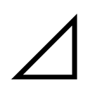......ッ！」
殺すつもりか。他に言葉がない......殺すつもりか！
燃え上がった脳味噌はぐちゃぐちゃで、まともに思考してくれない。
俺の顔面は、さぞかしひどい有様になっていたことだろうよ。
「どんな露出趣味よと思ったけれど──まさか、無自覚でやっていたなんてね。これはこれで、やってられないわ。まったくもって、やってらんない。最初から言えってのよ──ったく」
エルフは、綺麗な金髪を乱暴にかきむしる。
「妹に、読ませるんでしょう？ あんたは、そのために書いたんだから」
「............そう、だが」
「だったら──」
エルフは、俺の原稿を返してきた。まだ、すべてを読み終わっていないのに。
代わりに、俺の手から、自分の原稿を奪い取った。そして──
「さっさとやることやってこい！ エロマンガ先生に会ってこい！」
自らの手で、山田エルフの新作原稿を、シュレッダーに突っ込んだ。
「あー、負けた負けた！ 今回はわたしの負けっ！」
「お、おまえっ！」
俺は咄嗟に走り寄ったが、そのときにはすでに、エルフの原稿の大半が細切れになっていた。
元データを消してしまって、この世にたったひとつしかない、オリジナル原稿。
あの超面白い新作小説は、エロマンガ先生のために書かれたような、えろくて楽しい物語は──永遠に、失われてしまった。
「なんつーことを！ なんつーことを......！」
「なんであんたが泣いてんのよ」
「まだ最後まで読んでなかったんだぞ！」
「あは、そりゃどーも。でもね、残しておいても意味ないのよ。わかるでしょう？ 読んだんだから」
「........................」
エルフが書いたのは、エロマンガ先生と一緒に仕事をする前提で書かれたライトノベルだった。だから、別の人にイラストを描いてもらっても意味がない。
エルフが言っているのは、そういうことだ。
それはわかる。わかるが......もったいない。あんなに面白かったのに。
「言っとくけど、わたしが負けただけで、あんたがわたしに勝ったわけじゃないから。そこんところ、間違えないでよね」
「......どう違うんだ？」
「だから鈍感だっつーのよ──」
エルフは涙のあとをそでで拭う。
「次は勝つわ」
今回は負けたけれど、エロマンガ先生のことを諦めたわけじゃない......ってことか。
二階の仕事部屋で、俺とエルフは向かい合っている。
数秒の沈黙の後、エルフが言った。
「それで？ どーすんの？ まさか見せない、なーんて言わないわよね」
エルフの低い声が、サディスティックに響いた。
「このわたしを、叩きのめしたくせに」
「......こんにゃろ」
なんともムカつく激励だった──しかし、大先生のおっしゃるとおりだ。
この人に負けを認めさせておいて、あの素晴らしい原稿を破かせておいて、
無駄にすることなんて許されない。
俺は、男を見せなくては。
「......わかった」
「ん？ なぁに？ 聞こえないわ──もっと大きな声で言って頂戴」
「やってやるさ！ もとよりのそのつもりだったんだからなあ！」
俺はこの小説を、妹に、エロマンガ先生に読ませるつもりで書いたのだ。
それで、俺の気持ちがバレてしまうのだとしても、予定を変えるつもりはない。
俺の一年間が、無駄になってしまうかもしれない。
もう二度と、会ってもらえなくなるかもしれない。
大切な仕事相手を、失ってしまう暴挙かもしれない。
それでも、俺は、できることをやるって、そう決めた。
「そのためには、あの『開かずの間』の扉を、どうにかして、開けなくちゃいかんよな──」
実のところ、この部分に関しては、真っ向勝負しか考えていなかった。
たとえば......原稿ができたと扉越しに伝える。扉の前に、メッセージと共に置いておく、といったものだ。それで、紗霧が俺の原稿を読んでくれるかどうか。
......この半月、紗霧とは会えていない。あいつはろくに飯も食わなくなって......部屋に閉じこもってしまった──きっかけは、妹をヒロインにすると宣言した、俺の新作だ。
『ちっとも嬉しくない！ 嬉しくない嬉しくない嬉しくない！ そんなので心を開いたりなんてしないし気持ち悪いだけっ！ うそつきの兄さんなんて大っ嫌い！ 信じない！ 早く出て行って！ 私のことは放っておいて！』
......あの様子からすっと、書きあがったとしても、読んでもらうのは至難の業だな、と、考えていた。
けど、たったいま、思いついた。いや、前々から思いついてはいたのだ──めぐみが俺にはない発想で、色々と（すべて論外だったが）ヒントになるようなネタ出しをしてくれていたし。
実に都合のいい位置に、エルフが越してきてくれた。
「？ ......あんた、なにを始めるつもり？」
そう。俺の小説の主人公だったなら、迷わず行くシーンだと......思いついちゃあいたのだ。
自分でやってやろうとは、思わなかっただけで。
けど......自分の書いた主人公に、負けるわけにはいかない。
「ちょ、あんた、人の話を────」
「決まってるだろ。『開かず間』の中にいる、エロマンガ先生に会いに行くんだ」
「は？ それって......まさか！」
エルフが、俺のやろうとしていることを、察したらしい。まあ、それこそ〝神の眼〟なんてなくたって、わかるだろう。あからさまだもんな。
俺は──
おもむろにベランダの窓を開けた。
「あんた本気!? 落ちたら怪我じゃすまないわよ！ それに！ そのままじゃ──」
「俺はいつだって大マジだ！ 行くぜ！」
俺は静止の声を打ち消して、走り出す。精神的にも物理的にも、勢いがついてしまっていて、止まれなかった。勢いのままに、ダンッと足を踏み出して──
飛んだ。
一瞬の浮遊感。
すぐに『あ、やばっ』と思った。
飛距離は申し分なかったのだが、ちょっとばかし飛びすぎた。
「向こうの窓にぶつかるでしょ！ って、ああもう──！」
俺を止められないと判断したエルフは、俺が飛ぶ直前に、大声を張り上げていた。
「エロマンガ先生！ いますぐ窓を開けないと、あんたのお兄ちゃんが死ぬことになるわよ！」
がらっ！
エルフの叫びが終わる前に、俺のジャンプの着地点にある『開かずの間』の窓が、勢いよく開いた。
そこから姿を現わしたのは、半月ぶりに見る、パジャマ姿の妹。
瞬間、時間が止まったように感じた。
「────」
体感では飛んでから窓が開いたように思えたが、あとから考えてみると、実際には、俺が飛んだのと、紗霧が窓を開けたのは、ほぼ同時だったのだろう。その前に、エルフが叫んでくれていたのだろう。そうじゃないと色々とおかしい。
おかしいのだが──
〝兄さん〟
たしかに、その声を聴いたのだ。妹の焦った顔が驚きの表情へと変わり......俺を呼ぶ、その唇の動きまで、つぶさに見て取れた。
「紗霧──いま、行くぞ」
そんな返事なんて、一瞬でできるわけないのだが、そう言ったという記憶がある。
いやはや、何事も体験してみるまでわからねぇもんだ。
バトル小説でよくある──『時が止まったような』『一瞬のうちにべらべら喋る』──描写も、誇張表現じゃなかったのかもしれない。
ともあれ、そんな長々とした思考を、なぜか一瞬のうちにたれ流した俺だったが──当然、物理現象を捻じ曲げられるわけがない。態勢を立て直す暇もなく、妹にぶつかった。
「！ きゃ......！」
先に柵に当たったため、飛んだ勢いはかなり殺され、紗霧への衝撃はさほどでもなかったのが不幸中の幸いだろう。妹に怪我をさせるくらいなら、俺自身が窓に激突していた方がずっとましだから。
ぶつかる、というよりは、のしかかるような形で、俺は妹の身体に倒れこんだ。
「......っ、いて、て......」
柵にぶつかった脚が痛む一方で、顔面には柔らかな感触がある。
......な、なんだ......？ 俺の顔は、いったいなにに触れている......？
ゆっくりと眼を開けた先にあったのは......
「なっ......」
妹の胸だった。
つまり......俺は、いま、紗霧の胸に、顔をうずめている、ということで......。
「......っ......な、なにっ」
そこで紗霧も、目を開ける。ぱちくりと瞬きして──
「な......！」
あまりのことに、事態を認識できず、固まってしまっている。
「..............................」
「..............................」
い、いかん......なにか......なにか言わなくては......！
「いや、これは、その......ええとっ！」
そ、そうだ！ 俺は決めていたはずだ！ 紗霧と顔を合わせたら、まずこう言うんだ、って！
俺は、妹の胸にうずもれたまま、抱えていた茶封筒を掲げ──ずっと考えていた決め台詞を繰り出した。
「紗霧、新作の原稿ができたんだ。読んでくれ」
「！」
紗霧は、一瞬、俺の言葉を吟味するかのように硬直し──そして、
「ッ」
ばちこーん！ と、強力なビンタを俺の頰にお見舞いしたのである。
「........................」
「........................」
「......................................................その......すまん」
数分後......頰を腫らした俺は『開かずの間』の中で、自ら正座をし、縮こまっていた。
俺の目前では、腕で身体を抱いた紗霧が、恥じらいで赤くなった頰を、不機嫌にふくらませている。
「も、もういい......よくないけど..............................で？」
ヘッドセットのマイク越しに、ぼそ、と、呟く。
相変わらず、これがないと声が小さすぎてまともな会話にならないらしい。
素の声......好きなんだけどな。
「なんで、あんな、あぶないことしたの」
「......いや、その......おまえが......あれからずっと......扉、開けてくれないから」
最近、紗霧はよくベランダの窓を閉め忘れていたし、開いているかも、と思ったのだ。
「俺......心配で......こんな方法しか思いつかなかったんだよ」
悪かったな、と、改めて詫びる。
「............」
紗霧はうつむいて、俺の話を聞いていた。何を考えているのか、わからない。
「......紗霧......なんで、窓を開けてくれたんだ？」
「......えっ？」
「いま、自分から、開けてくれただろ？ だから俺とぶつかっちゃったわけで────」
「──そんなの、どうでもいい」
俺の問いを、紗霧はぴしゃりとシャットアウトした。そして、
「............これ」
ぶっきらぼうにタブレットを突き出し、画面を見せつけてくる。
「なんだ？」
「扉を開けなかった、理由」
原稿を読ませに来たのに、逆にこっちが見せられる側になるとは。
おかしな展開になってきたなと、そう思ったが......それを目撃した瞬間、俺は眼をむいた。
「なっ......！」
俺は、とっさになんと言っていいか、わからなかった。色々な感情が渦巻いていて、どれを取り出して示せばいいのやら......。
紗霧が見せてきたタブレットに描かれていたのは、完結した俺の前作『転生の銀狼』シリーズに登場するヒロインたちの姿だった。
完結記念イラストと、ほぼ同じオールスターメンバー。
ただし、以前と違っている点がひとつ。
『ヒロインたちが武器を持って、戦っている』シーンだということ。
──「お、おまえだって、戦闘シーンの挿絵描くのヘタクソじゃねーか！」
「おまえっ！ これ......！」
「......戦闘シーン、描くの、うまくなった？」
「うまくなった、どころじゃない......ほとんど別物じゃないか」
かつて明らかに苦手だった武器──特に重火器の類の描写が、別人が描いたみたいにリアルで、引き込まれるものになっている。いや、リアル調のイラストになったって意味じゃなくて......なんというか、キャラクターたちが、まるで本当に『生きている』ように見えるのだ。
「............そう」
ぼそりと頷いた紗霧は、どうでもよさそうな口調とは裏腹に......かすかに微笑んだ。
紗霧は......感情を隠し切れない──そんなときに見せる表情が、いちばんかわいらしい。
俺は、こんなときだってのに、頭が熱くなってきて、まともに妹の顔が見られなかった。
「いままでと......なにが違うんだ？ なんでこんなにすごく見える？」
「......さあ？」
きょとん、と、首をかしげる。
「ちょ、自分でもわかってねーのかよ！ こういう描き方してる、とか、そういうの、あるんじゃないの？」
「格闘技の試合動画、見たり......武器の資料とかも、たくさん読んだ」
研究の成果──って、ことか。
「でも、描き方、とか、じゃなくて......。うまく言えない」
このあたり、動画配信中のエロマンガ先生に聞けば、技術的なことを幾らでも面白く語ってくれそうなところだが──紗霧には無理だな、こりゃ。
「ただ......」
「ただ？」
「戦う人の気持ちは、ちょっとわかった......かも」
「......と、いうと？」
紗霧は『戦い』なんてガラじゃないような気がするが。
彼女は少し迷うような仕草をしてから、うつむいて、こう言った。
「......私、人が死んだり、怪我をしたりする話......あんまり好きじゃない」
「！」
いまの紗霧が言うと、深い意味がこもっているように聞こえる。
「前から、だから。勘違いしないで」
俺の動揺を察したのか、そう釘を刺してくれる。
「戦って......好きなキャラがいなくなっちゃうのは、哀しい」
「そうだな」
エロマンガ先生も、動画で、死んだキャラを悼んで、怒っていたっけ。
優しいやつなのだ。
「いままでは、描くの、抵抗あった。でも......初めてあなたと顔を合わせて作品作りの話をして......いままでの私じゃ、だめだって思った。好きなものを上手く描けるだけじゃ、だめだって思ったの」
紗霧......エロマンガ先生は、『同類』であるエルフと、まったく逆のことを言った。
「......すごく......悔しかった、から」
紗霧は、そこで、ぎりり、と下唇を嚙んだ。
よっぽどムカつく出来事を思い出しているのだろう──かわいい顔して、おっかないプレッシャーを放っていやがる。
「......その、悔しかったことって......」
「ん」
紗霧は、恨みのこもった眼差しで、俺の顔を指さした。
「......やっぱ、俺か。......あんとき、へたくそって言った......アレだな」
紗霧は「むむむ～」と眼光を鋭くした。
うわ。あれ、そんなに悔しかったんだ......。
でも、そうだよな。俺だって『あのシーンがクソ』とか『あのキャラが嫌い』とか、そういうことを言われたら、なにくそって発奮してしまう。
それで、一生懸命練習して──書きたくなかった嫌いなシーンを、うまく書けるようになった、なんてエピソードは、俺にだって何度もある。
「私も、戦わなくちゃって思ったの。そうしたら、すんなり描けるようになった」
「戦う......？」
「そう」
「誰とだ？」
文句を言われて悔しくて、奮起したのだから......戦う相手は、俺？
「..................」
紗霧は首を振り、しかし答えを言わなかった。
俺の妹の『敵』は、俺じゃなくて──他の誰かであるようだ。
紗霧はさらにタブレットを俺の眼前に突き付けてくる。
「まだある。これも、見て」
「こ、今度はなんだ」
次いで現れたのは、女の子のイラストだ。俺の作品のキャラじゃない、初めて見るデザインだった。
「色をつけると、こんな感じ」
「............」
「こっちは髪型違うバージョン」
「..................」
「どう？」
なにが『どう？』なのか──これはもう、一目でわかった。
「おまえ......巨乳キャラ、描けるようになったのか」
「......かろうじて、見せられるレベルにはなった」
つん、と顎をしゃくる紗霧。
完全に納得のいくデキではない、という言い方だった。
練習したのだろう。......巨乳キャラを描けないって、そんな話もしたっけな。
「ほら、脱がすとこんな感じ」
紗霧が指をスライドさせると、画面が切り替わり、女の子の服が脱げた。
上半身はだかの、すさまじくえろいイラストだ。
「..................」
「なに？」
「や、なんでも......」
好きな女の子に、自作のえっちなイラストを見せられるって、考えてみればとんでもないシチュエーションだよな。やましい考えだとわかっちゃいても、ドキドキしてしまう。
「感想は？」
「......すげーえろくて、いいと思います」
敬語になってしまった。
「......ん」
紗霧は、再びあの微笑を浮かべる。
......いかんな。エルフが余計なことを教えてくれたせいで──意識してしまう。
俺たちは、兄妹なのに。
そうか......紗霧は、半月の間、ずっとこれを描いていたのか。
考えていると、急にペンネームを呼ばれた。
「和泉先生」
「！ お、おう......なんだ？」
紗霧は、俺の目をじっと見ながら言った。
「これでわかった？ あなたの新作から私をおろすなんて、ありえないって」
「ん？」
俺は、一瞬、言われた意味がわからず硬直し──
「ハァ!? おまえをおろすって......なんだそりゃ！ 誰が言ったんだ！ そんな話！」
理解した瞬間爆発した。こればかりは妹の発言でも、ありえないものだったから。
そしたら、紗霧も感情的になって言い返してきた。
「だって......隠し事してた。変な女の子と、こそこそ会ってた。一緒にパソコンを覗き込んで......」
エルフが、エロマンガ先生の正体を探ろうとしていたときのアレか。
「兄さんが、仕事以外であんな綺麗な子と知り合えるわけない」
慧眼だけど、もうちょっと言いようあんだろ。
「それに......あの女の子と会うようになってからでしょ......兄さんが、すごくやる気になったの」
ああ──それは、そうだったな。
「だから......あの人が......新しいイラストレーターさんなんだろうな、って......私に言えない理由って、それでしょ？」
しゅん、と、全身で落ち込む紗霧。その姿を見て、つくづく思った──俺はアホだ。
紗霧は、再び顔を上げ──ヘッドセットがいらないくらいの大声を上げる。
「それで、ず～っと部屋にこもって練習してたの！ 前に文句言われたところを直して......私の実力を兄さんに認めさせるためのイラストを描いてたの！」
「！」
それは、核心を衝く発言だった。この半月......紗霧が『開かずの間』に引きこもって、ろくに食事も取らず、俺からの声を無視し続けた真の理由は──
「和泉先生が、妹をヒロインにするって、〝究極のラノベ〟を創ってみせるって......うれしかったから！ 絶対私がイラスト描きたいって、思ったから......！」
最後に会ったときと、まったく逆の台詞だった。
紗霧は、ヘッドセットを投げ捨てて叫んだ。
「ぜったい、ぜったい負けるもんかっ！ 和泉先生を、あんなやつに渡さないっ！」
──勝負だ！ 俺の相棒を、おまえには渡さん！
本当にアホだ。俺は、俺たちは......。とんでもないすれ違いをしていた。
──ったく、最初から言えってのよ──
エルフの台詞がリフレインする。まったくもってそのとおりだ。返す言葉もない。
紗霧のことを責められない。
『理想の兄貴』の振りをして、バレバレの噓をついたのは、俺が先なんだから。
──兄貴ってのは、妹に恋なんてしない──
自分の心に蓋をして、恋心をひた隠しにして、一目惚れした相手が欲しがっていた──『家族』になろうとした。それがいいって、そうしようって、思ったんだ。
「それは、俺の台詞だ」
「えっ？」
「ぜんぶ勘違いだ！ 俺が会ってたあいつは......お隣の山田さんの正体は──売れっ子小説家の山田エルフ先生なんだよ！」
「えっ......」紗霧は目を丸くして驚く。「山田エルフ先生って......あの？」
「そう、あの山田エルフ先生だ。あいつは......」なに言いよどんでんだ。言え！「あいつは、エロマンガ先生の大ファンで、一緒に仕事がしたいんだとさ！ それで、俺に喧嘩をふっかけてきてたんだ。エロマンガ先生を賭けて、小説勝負をすることになってた」
「な、なにそれ......そんなの、聞いてない」
「当たり前だ。言ってねーし。言いたくなかったんだよ──俺より売れっ子作家と一緒に仕事したいって、言われるかもって、びびったから。言えなかった」
口に出してみると、マジでダッセーな。
「は、はあぁっ!? ありえないっ！ 兄さんって、ほんとばか！」
「自分でもそう思うよ。結局言わなくちゃならねーんだから、最初から言っとけよってな」
「そうじゃなくて！ ......そういうところが......！」
「あんだよ」
「もういい！ 小説勝負って、どうやって勝ち負けを決めるつもりだったの？」
「完成した原稿を、エロマンガ先生に読み比べてもらって決めるつもりだった」
「じゃあ......さっき兄さんが言ってた原稿っていうのが、それ？」
「そうだ」
「山田エルフ先生の原稿も......あるの？」
「ない」
「......な、なんで？」
「もう、やっつけた」
得意げに、言う。......読ませたらあっちが勝手に発狂して負けを認めただけで、どうも勝ったわけじゃないらしい──というのが本当のところなのだが。
妹の前なんだ。ちょっとくらいかっこ付けさせてくれよ。
「やっつけた......って............」
俺の自慢を聞いた紗霧は、まず目を見開いて驚き、
「......すごい」
そう言って、くったくなく笑ってくれた。
「和泉先生......あの人に勝つなんて、ほんとうにすごい」
「お、おう」
ドキドキした。他の誰に褒められるより、嬉しかった。
「悪かったな。ほんとは、おまえに読んでもらって......決めてもらうつもりだったのに」
紗霧は、目をつむって、ゆっくりと首を横に振った。
「必要、ない」
紗霧は、すっとタブレットに描かれたイラストを指さす。
それは、なによりも強い証明だった。
「最初から、そのつもり」
彼女はそこで、右手を差し出してきた。
雰囲気がガラリと変わり、まるで大人びた男性のような口調で──
「──これからもよろしく、和泉先生」
「こちらこそ、よろしくな──エロマンガ先生」
その手を握り返して言ってやると、エロマンガ先生は、女の子みたいに赤くなる。
「そ、そんな名前の人はしらないっ」
久しぶりに聞いたそのフレーズで、ちょっと笑ってしまった。
──めでたしめでたし。
と──そう言って締めくくりたいところだが、この話には続きがある。
そりゃ、そうだよな......。俺がこの部屋にやってきた『本題』は......エロマンガ先生と仲直りをすること、じゃあなかったんだから。
「紗霧......はら、減ってるだろ？」
「......へってるかも」
紗霧がお腹を押さえると、くぅ、と可愛い音が鳴った。
「..................」
紗霧は無言で赤面する。俺は気付かなかったふりをして、立ち上がった。
「待ってな。すぐ、なにか作ってくるよ」
「だめ」
もちろん紗霧も『本題』のことを忘れちゃいなかった。俺のそでをつかんで言った。
「まだ......話の......途中。今度は......和泉先生の番」
紗霧は俺に向かって、掌を差し出した。
「それ、読ませて」
「えっ？」
「新作小説──読ませて」
「あ、ああ！ そ、そそそ、そう──だな！」
「？ なにを焦っているの？」
「いや、焦ってないよ？ ぜんぜんちっとも焦ってないよ？」
「？ よくわからないけど......早くちょうだい」
「わ、わかった」
ごくん、と、生唾を飲み込んで──改めて、決死の覚悟を決める。
俺は神器を奉じる仕草で、紗霧に、原稿を差し出した。
エルフに『妹へのラブレター』と評された、俺の小説を。
「じゃあ......読んでくれ」
「？ ？？ ......へんなの」
もちろん、そうとは知らない紗霧は、原稿をあっさりと受け取り──ごくごく自然にページをめくった。
「いまから、読む」
「お、おう......な、なぁ......紗霧......それ、読んでもらっているうちに、メシ、作ってきてもいいか？」
俺のこの発言は、もちろん、お腹をすかした妹への思いやりからだけ、出たものではない。
返事を待たずに立ち上がった俺のそでを、再び紗霧が摑んで止める。
「だめ。ここにいて」
「な、なんで？」
「兄さんから、すごく逃げたそうな感じがする」
するどいね、おまえ。
「それに、私のイラストは、私の前で見せてあげたのに......ずるい」
「......わーったよ」
ここにいりゃ、いいんだろ！ いいぜ、逃げも隠れもしねえ！ 当たって砕けろだ！
そうして俺は、目の前で、好きな女の子に、三百ページもある超熱烈なラブレターを読まれるという、恐るべきシチュエーションに立ち向かうことになったのである。
どんな試練だよ、これ！ 『銀狼』の主人公だって、こんな窮地には立たされなかったぞ！
「........................」
俺は、額に脂汗をかきながら、正座で事態を見守った。
原稿に目を落とし、一ページ目を読みはじめた紗霧は......ぴく、と、片眉を撥ねさせる。
げっ！ そこは！ 一ページ目──つまり、主人公が初めてヒロインと出会い、一目惚れをするシーンだ。......直接そうとは書いていないし......そもそも紗霧とはかなり設定を変えているし......。俺は、エルフに言われるまでバレやしねえと思っていたのだが──。
バレ......ちゃった？
「........................」
ぱらり。紗霧は、それ以上表情を変えることなくページをめくる。
バレなかったの？ バレなかったのか？ よし......バレなかったな。そうだよな？
一ページ目から、すでにこんな有様である。
はたして俺の心臓が、三百ページまで持つのかどうか。
「................................................」
ぱらり......ぱらり......ぱらり......ぱらり......。
パジャマ姿の妹が、体育座りで、俺の原稿を読んでいる。
静かな時間が、長く続く。紗霧は赤面したりといった、わかりやすい反応こそしなかったが、時折原稿から顔を上げて、ちら、ちら、と、俺を見るということがあった。
そのたびに俺の心臓は、ビッグバンを起こしそうになる。
ばっくんばっくん、ドラムみたいにビートを刻む。
ちょっと想像してみて欲しい。
好きな人に、ラブレターを直接手渡して──その場で読んでもらうという青春の一幕を。
心を込めて書いたのは、便せん数枚のラブレターだ。思い人が読み終わるのを待っている間......数分間が数時間にも感じられ......死刑判決を待つ囚人のような気分になるはずだ。地獄と天国の狭間で、生きた心地がしないはずだ。そうだろう？
だが、な。......聞いてくれよ。俺が手渡したラブレターは、なんと三百ページもありやがるのだ。相手が読み終わるまで、下手したら二時間近くかかるのだ。
死ぬ！ マジで、死んじゃう！
便せん数枚で数時間にも思えるのに......この地獄の拷問は、いったいいつまで続くんだよ！
いっそ殺してくれ！
そんな気分だった。泣きたいくらいだったよ。
もしかしたら、紗霧に、俺の好きな人がバレないかも......という希望があるのがまた......辛い。そんなふうに──いっぱいいっぱいだったものだから、気付けなかった。
「................................................」
いつの間にか、紗霧が......かぁぁっ、と、耳先まで真っ赤になっている。元々肌が白いから、肌の赤みがすごく目立つ。手も、足も、顔も、全身が恥じらいに染まっていた。
気付かれた、と、思った。
「..................ぅ............」
原稿を持つ紗霧の手はかちこちで、瞳は〝輪廻眼〟みたいにぐるぐるしている。
息は荒く、不規則で、まるで風邪で発熱しているみたいだ。
「........................ぅぁ......」
それを至近距離で目撃した俺も、紗霧と似たような状況に陥った。
......終わった。こりゃ......完っ......全に......バレたわ。
紗霧が俺のことをどう思っているのかはわからないが、もしも『逆の立場』だったなら──
『......兄さん......好き』
俺は間違いなくショック死するだろう。
曖昧な体感時間で一分......二分......三分ほどがすぎても、紗霧は固まったまま、ページをめくれずにいる。俺は、勇気を振り絞って、妹に話しかける。
「さ、紗霧？」
「は、はいっ！」
敏感すぎるリアクションが返ってきた。マイクなしで、紗霧がこんなに大きな声を出したのは、初めてかもしれない。
俺は迷った末、きわめて無難な聞き方をした。
「......ど、どうだった？」
「え、ええとっ」
あせあせ、と、原稿を持ったまま紗霧は焦る。
「す、すっごく！ 面白いと思う！」
「ほ、ほんとか？」
俺が聞いたのは、そっちじゃなかったのだが──そう言ってもらえて、もちろん嬉しい。
むちゃくちゃ嬉しくて、テンション上がる。
自分のかわいい子供を、褒められたのと同じだから。
「うん。まだ、ぜんぶ読んでないけど──私は、好き」
「そっか......なら、よかった」
「ただ......」
紗霧はぼそっと呟いた。
「ただ？」
「このまま本にするのは......ダメ。他の人にはぜったい読ませられない......恥ずかしい」
ぱっ、と真っ赤な顔を原稿で隠し、再び読み始める。
「..............................」
たしかに、このままじゃ本にはできないな。読者にはバレなくても、俺たちが恥ずかしい。
それに──
たったひとりの人に読んでもらうために書いたこの物語は、目的を果たして、もう終わってしまっている。続きを書くことは、できない。シリーズ化するためには、書き直さなくては。
穏やかな時間が、続いていた。紗霧は原稿を読み、俺は妹が読み終わるのを待っていた。
紗霧の読む速度は、かなりゆっくりだったけれど、もう焦りはなくなっていた。
そして、やがて......
俺の書いた原稿を最終ページまで読み終えた紗霧は、
「兄さん」
愛をささやくように、こう言った。
「私、好きな人がいるの」
「──────」
俺は、目を見開いて硬直した。引き絞られるような、胸の痛みとともに。
「......そ......っか」
うん......そうだよな。紗霧にだって、引きこもっていたって──好きな人くらい、いるよな。
なにせ、こいつの世界は......すっげー広いんだから。
いまのは『俺の告白』に対する、紗霧の返事だ。
あなたの思いには応えられない。
そう、受け取った。
これでいい、って、そう思った。
これでいいのだ。
だって俺たちは、兄妹なんだから。
俺は、こいつの家族になると、決めたんだから。
「わかった」
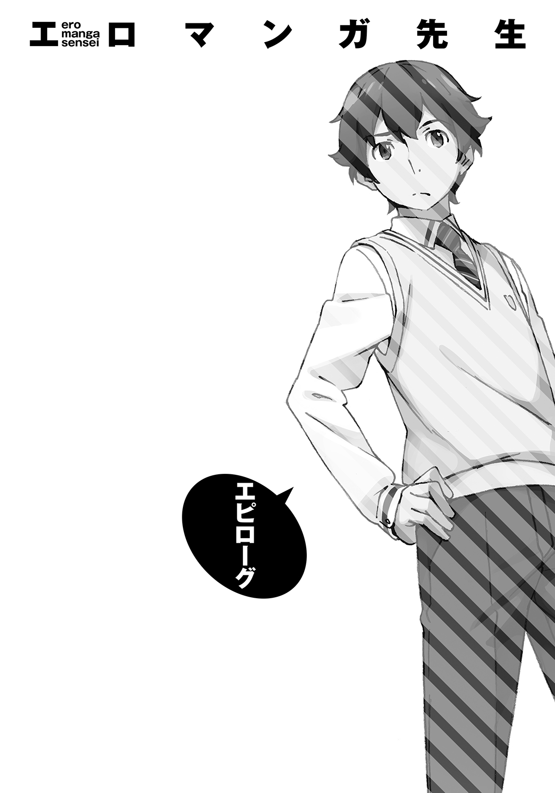
翌日。六月になり、俺は、いつもどおりの日々へと帰って来ていた。
妹の引きこもりが治ったわけでもなく。
俺の原稿が本になる目処が立ったわけでもない──そういう意味での『いつもどおり』ではあったけれども。
少し前の和泉正宗とは、違うところもいくつかある。
妹の正体を知り、俺の恋心が盛大に相手にバレ、エロマンガ先生と改めて一緒に仕事をする約束をし──『開かずの間』の封印を緩ませることに成功した。
そしてお隣には、売れっ子作家大先生が住んでいる。
「へーっ、ほんとにぜんぶ目の前で読まれちゃったんだ」
「ああ、おまえの言ったとおり、バレバレだった」
「でっしょ～、言ったじゃん。しっかし────そっか、そっかぁ。振られたんだ、あんた」
「......んだよ......にやにやしやがって」
「うへっへっへ、ざまぁ～♪」
くそっ！ ムカつくな！ こいつ！
いま、俺はクリスタルパレスの仕事場で、エルフと会話をしている。すべての事情を知っているこいつにだけは、ある程度の事情と顚末を、報告しておかねばならなかったからだ。
「俺の方は、そんな感じだけど──そっちはどうなんだ？」
「どうって？」
「いや、だから──原稿だよ。俺との勝負に使ったやつじゃなくて、アニメ化した方の。あれも、先月の末が締め切りだったはずだろう」
「ああ......あれ、ね」
エルフはアーロンチェアに深く腰掛けて、珍しくワープロソフトを起動してはいるのだが、俺が見ている限り、一文字も打ち込んだ様子がない。
ノートパソコンに映っているのは、まっさらな画面のみである。
「ふふふっ──とーぜん、一文字たりとも書いてないわ！」
「得意げに言ってんじゃねーよ！ とんでもなくやべえだろそれ！」
アニメ化企画進行中の原稿が、通常の原稿よりもずっと重要で、遅延がシャレにならないなんてのは、メディアミックス未経験の俺ですら想像できる。
出版社や、アニメ製作会社から差し向けられたアサシンが、地の果てまで追っかけてくるんだとか。
「俺との勝負なんてやってる場合じゃなかったんじゃねーの？ なんでアニメ化の方を先に書かなかったんだおまえは」
「エロマンガ先生を獲得する方が、アニメ化決まった原稿を進めるよりもずっと、わたしにとってプライオリティが高かったから」
だから先に書いたのよ──と、エルフは平然とそう言った。
......凄まじく面白かったもんな、アレ。どんだけ気合入れて書いたんだか。
よくもまぁ、こいつに負けを認めさせたよ、俺。
にしたって......現時点での進捗ゼロ枚ってのは......。
真の締め切りがいつなのかはしらねえけど......ほんと、大丈夫なのか？
「話を聞いてるだけで胃が痛くなってくるから、例の〝完成原稿召喚〟とやらをさっさと使えよ」
「昨日使ったばかりだから無理ね。〝完成原稿召喚〟を行使するためには、いくつかの条件を満たす必要があるの。たとえば、最低一月の魔力充塡とか......」
こっそり原稿を書く時間がないと使えないんだろ？ そう言えよめんどくせえな。
「連発できたら、それこそＳ級スキルになってしまうわ。いずれはそこまで成長させたいところだけれど、いまのわたしには無理な相談ね」
「おい、おい、山田エルフ大先生、むちゃくちゃ余裕こいてるけど、締め切りブッチしてる現状を、いったい全体どうするつもりなわけ？」
「ふぅぅ～......やむを得ないわね。これだけは使いたくなかったのだけれど」
エルフは物憂げに息を吐き、目をつむって、おごそかにこう唱える。
「Ｃ級スキル〝大劣化版時間操作〟────世界の〝時〟をゆがめた......五月の時点でね。やれやれ......今日は五月三十二日、なんとか締め切りを乗り切ったわ」
もちろん乗り切れてないので、この数分後、エルフは修羅場に強制突入させられることになる。仕事部屋まで乗り込んできたグラサン黒服の集団に両腕を摑まれ、黒塗りの外車で連れ去られていく大先生の姿を見送った俺は、『アニメ化って怖えー』と呟くのであった。
それはあくまで数分後の話で、現時点でエルフは、まだ俺の目の前にいる。
彼女は、俺に、こう言った。
「それで？ そのあとどうなったの？」
昨日のことを思い出す。
『開かずの間』で、紗霧と向かい合って話した、あのときのことを。
「なぁ、紗霧......俺にも、夢ができたぞ」
「兄さんの──夢？」
俺は大きく頷いた。
「ああ、そうだ。すっげービッグな、俺の夢」
「聞かせてくれるの？」
「もちろん」
俺は立ち上がり、口を大きく広げて笑う。夢を語るときは、笑わなくては。
「俺は、この原稿を本にする。もちろん、このままじゃあ話にならない。練り直して、企画書書いて──担当編集に認めさせて、そんなところから始めないといけない。でも、必ず本にするよ。たくさんの人たちを面白がらせて、主人公やヒロインを好きになってもらって、ばんばん人気が出て、楽勝で自立できるくらいお金も稼いで、そんでもってアニメ化だ！ どうだ？ すっげーだろう？」
紗霧は、決して、部屋から外に出ようとしない。
出るのは決まって、誰もいないときだけ。
むりやりに連れ出すことはできない。引き摺り出すことはできない。
さもなくば、彼女の心は壊れてしまう。
その事実を、俺も、俺たちの保護者も、すでに思い知っている──一年前のあのときに。
親父と母さんが帰ってこなかった、そのあとに。
どうすればいいのか──ずっと、ずっと、考え続けてきた。闘い続けてきた。
「それが......兄さんの、夢？」
「違う！ 違う！ こんなのは前準備だ！」
俺は大げさな仕草で否定した。大ヒットアニメ化の──さらに先があるのだと。
「俺にはもっとでっかい夢がある！ うちのリビングに、大きな大きな液晶テレビを買って！バカ高いスピーカーも用意して！ 豪勢なケーキにローソクを立ててさ！」
俺は妹と向かい合い、顔と顔を近づけて、熱っぽく語る。
「おまえを部屋から連れだして、二人でアニメを観るんだ！ 俺が原作で、おまえがイラストを描いた、俺たちのアニメだ！」
やっとわかった。
俺の夢は、これしかない。
「そうしたら──きっと、すっげー楽しいと思うんだよ！ めちゃくちゃ笑えると思うんだ！ アニメって、何十万人もの人が、いっぺんに泣いたり笑ったりするんだってよ！ そんなスッゲーお祭りの中にいりゃあさ──そんなどえらい馬鹿騒ぎをすりゃあさあ──哀しいことなんて、ふっとんじまうかもしんねーぜ！」
俺が想像できる最大限の幸せを見せてやりたい。
俺にできる最強の楽しさで、妹を泣かせるやつらをブッ飛ばしてやりたい。
俺が、妹のアメノウズメになってやるんだ。
俺は、紗霧のことが大好きで──
俺は、こいつの、兄貴だから。
「それが、俺の夢だ。絶対に叶える、目標だ」
「げほっ、げほっ......」
いっぺんに大声を出したもんだから、咳き込んでしまった。涙も出てきた。まったく俺ってやつは、最後まで締まらねえ──。
「......そっか.........今回も、なんだ」
俺の夢を聞いた紗霧は、そうぽつりと零して立ち上がった。そのまま数歩、扉の方へと歩いて行く。
......いま、紗霧のやつ......『今回も』って言ったか？
紗霧は俺に背を向け立ち止まり、さっき投げ捨てたヘッドセットを拾った。
おもむろにそれを被る。
そして──扉を開けて、部屋の外に一歩だけ出て、振り返った。
「！ ......お......おまえ......」
ありえない。
こいつの『引きこもり』は、気合や根性でどうにかなるようなものじゃない。
医者もそう言っていたし、俺は身をもって体感したのだ。一年前に。
だから、それは、本当に......
夢のような光景だった。
紗霧は、ふふ、といつもとは違う、自信に満ちた笑みを浮かべる。
「あなたは昔からそうだね、和泉先生」そこで紗霧の声が、変声機を通したエロマンガ先生の声に変わった。「いつもオレに、夢をくれる」
どこかで覚えのある、懐かしい口調だった。
「いいぜ、和泉先生。やってやろうじゃん。そんなに面白そうなコト、ひとりでやらせてたまるかよ。それはあなただけの夢じゃない──オレたち二人の夢にしよう」
俺の妹ではなく、紗霧でもなく、俺の相棒──エロマンガ先生としての言葉だった。
そして『彼』は、ヘッドセットを投げ捨てて、『彼女』へと戻る。
どん、と、いつものように、足で床を鳴らして、
「.........おなかすいた」
「............はは」
笑ってしまった。
初めて知ったよ。胸がいっぱいになったとき、最初に漏れてくる感情はこれなんだなって。
「はいはい、わーったよ。ちっと待ってろ」
夢に向かって踏み出した、初めの一歩。
この日のことを、俺は、生涯忘れないだろう。
あとがき
前作『俺の妹がこんなに可愛いわけがない』を読んでくださった皆様、またお会いしましたね。そうでない皆様、はじめまして。伏見つかさと申します。
こんなえっちっぽいタイトルの本を手に取ってくださったこと、最後まで読んでくださったこと、感謝しております。特に町の本屋さんで買ってくださった方は、本書をレジに持っていくの、恥ずかしかったんじゃないでしょうか。
タイトルのイメージほどえっちな内容ではなかったじゃないか、と、お怒りの方もいらっしゃるかもしれませんね。
ごめんなさい。そして、ありがとうございました。
私にとって久しぶりの新作となる『エロマンガ先生』、いかがでしたでしょうか。楽しんでいただけたのなら、ひとつでも笑えるところがあったのなら、嬉しいです。
読者を二回笑わせることができたなら、私の大勝利です。
何年も『俺の妹』シリーズの続編を書き続けていたので、いまさら新シリーズとかできるのかな、と若干不安だったのですが、書いてみたら新鮮で楽しかったです。
登場人物すべてが新キャラクターで、設定やら何やら一から作らなくてはならず、シリーズものには決して許されない『やっぱり最初から書き直そう』が何度も発生したりして......苦しさと面白さの混じりあった、懐かしい感覚でした。
この本を書いているときに、前作の読者からのファンレターや寄せ書きが届きました。
すべて宝物にいたします。よかったら、今回もお手紙くださいませ。
他にも、千葉やアメリカでアニメ最終話の上映会イベントがあったり、池袋サンシャインシティでサイン会があったり、千葉駅前の空を、自作のラッピングモノレールが走ったり......。
そのすべてで、感動のあまり泣きそうになりました。新作を書き上げる、力をもらいました。
自分の作品を『好き』だと言ってもらえることは、とても幸せで、楽しくて、面白いことです。『人生で一番』と言っても、おおげさじゃないくらいに。
第二巻、なるべく早めにお届けできるよう、がんばります。
二〇一三年十月 伏見つかさ
伏見つかさ
写真は、前作のイベントでいただいた寄せ書きです。応援してくださった皆様、本当にありがとうございました！ 本作も楽しんでいただけたなら嬉しいです。
イラスト／かんざきひろ
イラストレーター兼アニメーター。１９７８年生まれ。本業の傍ら、海外でレコードをリリースするなど音楽活動もこなす何でも屋状態の変な緑色の生物。
本書に対するご意見、ご感想をお寄せください。
電撃文庫公式ホームページ 読者アンケートフォーム
http://dengekibunko.dengeki.com/
※メニューの「読者アンケート」よりお進みください。
ファンレターあて先
〒102-8584 東京都千代田区富士見1-8-19
アスキー・メディアワークス電撃文庫編集部
「伏見つかさ先生」係
「かんざきひろ先生」係
本書は書き下ろしです。
 電撃文庫
電撃文庫
エロマンガ先生
妹と開かずの間
伏見つかさ
発 行 2015年9月3日
発行者 塚田正晃
発行所 株式会社KADOKAWA
〒102-8177 東京都千代田区富士見2-13-3
03-3238-8745（営業）
http://www.kadokawa.co.jp/
プロデュース アスキー・メディアワークス
〒102-8584 東京都千代田区富士見1-8-19
03-5216-8399（編集）
http://dengekibunko.dengeki.com/
本書（電子版）に掲載されているコンテンツ（ソフトウェア／プログラム／データ／情報を含む）の著作権およびその他の権利は、すべて株式会社KADOKAWAおよび正当な権利を有する第三者に帰属しています。
法律の定めがある場合または権利者の明示的な承諾がある場合を除き、これらのコンテンツを複製・転載、改変・編集、翻案・翻訳、放送・出版、公衆送信（送信可能化を含む）・再配信、販売・頒布、貸与等に使用することはできません。
(C)2013 TSUKASA FUSHIMI
※2015年5月22日発行の電撃文庫『エロマンガ先生 妹と開かずの間』7版に基づき制作